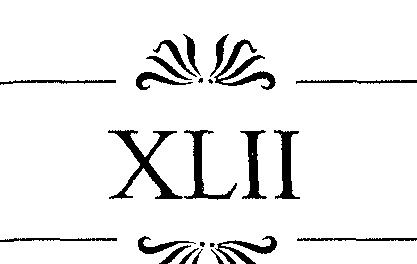
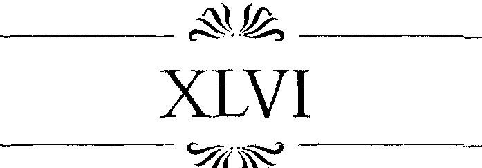

ABEYN KAPISININ AÇILIP Safiye'nin tekrar hareme dönmesi yaklaşık üç gün aldı. Mabeynin anahtarı genç âşıkların oyuncağı olmuştu. Bunu saklayıp arayarak oyunlar oynuyorlardı. Önce köle, kaçmak istermiş gibi yapan efendisinden anahtarı saklıyordu, sonra rolleri de
ğişiyorlardı. Son olarak anahtarı Murad alıp, oturduğu minderin altına saklamıştı, Safiye onu bulduğunda kızı yakalayıp altına çekmiş ve yine uzun uzun sevişmişlerdi.
Sonunda yorgun düşen zayıf naif şehzade, çırılçıplak, divanın üzerinde aşk yorgunu uyuyakalmıştı. Bunun üzerine de Safiye, elbiselerini bir koluna alıp, anahtarı masaya bırakarak sıvışmışti.
Onu görünce bir hayaletle karşılaşmış gibi şaşıran harem ahalisine kızın ilk söylediği, "Allahım açlıktan ölüyorum," oldu.
Üç gün boyunca âşıklar, artakalan bayram yiyecekleriyle idare etmişti. Yaşadıkları aşkın kıskançlığı içinde 240 ANN CHAMBERLIN
hiç kimseyi çağırmadan yarattıkları dünyanın tadını çıkararak. Çocuklar gibi ekmek kabuğu kemirip, ardından iki üç kez daha sevişmişlerdi. Öyle görünüyordu ki yiyeceklere karşı duydukları açlık, birbirlerine duydukları arzuyu kamçılıyordu.
Üç gün boyunca sofra artığı kuzu, tatlı işleri ve hurmadan başka bir şey yememişti Safiye. Rahatlıkla harem mutfağından bir şeyler isteyebilirdi ama aşk onu öyle bir uçuruyordu ki, akşamdan kalma pilav ve suyla yetindi, işin tuhafı bu ona dünyanın en lezzetli yemeklerinden daha güzel gelmişti.
Ellerini yıkayıp kendini toparlamaya çalışırken hikâyeyi öğrenmek isteyen meraklı kızlar etrafını sarmıştı.
Avdan bir aslan ölüsüyle dönmek ya da savaşta elli düşman öldürmek selamlık için nasıl bir şeyse, olup bitenler de harem için o kadar önemliydi.
"Bu kadar uzun sürenin sonunda sana ne verdi?"
"Allah korusun, seni öldürdüğünü sandık."
"Evet, az kaldı hadımları oraya yolluyorduk."
" Ü ç gün, Allahım... Sana söyleyeyim, b e n olsam olurdum.
"Sana mutlaka bir şey vermiş olmalı/'
"Haydi, söyle, sana ne verdi?"
Sonunda Safiye bu yoğun soru yağmuruna cevap verdi. "Hiçbir şey."
"Hiçbir şey mi?"
"Buna inanmıyorum. Bizden saklıyor olmalı."
"Zaten saklanacak kadar büyük bir şey olduğunu anlamıştım ben."
"Belki de bir köledir..."
"Şişko bir hadım..."
"Karadeniz'de bir yalı... Kesinlikle daha az bir şey olamaz."
Safiye Sultan 241
Safiye, pilavdan yağlanan elini sallayarak, "Bakın size söylüyorum," dedi. "Bana hiçbir şey vermedi." Ağzını tekrar doldurdu. "Ama belki de bir oğlan vermiştir, Allah kısmet ettiyse..."
Bunu söylerken N u r Banu'nun gözlerinin içine bakıyordu. Kadının gururu, olayları ikinci ağızdan öğrenemeyecek kadar kırılmıştı, bu yüzden herkesin arasına karışıp dinliyordu. Bir yandan da her ne kadar, tam planladığı gibi olmasa da, bunların tamamen kendi arzusuyla olduğunu düşünüp yüreğini ferahlatıyordu.
Bu duyguları yine de boğazını yakan öfkeye engel olamadı ve "Sana bir şey vermedi mi?" dedi. "Üç gün boyunca boşa çalışma, pek de başarı olarak kabul edilemez."
"Çalışma mı hanımım, siz b u n a çalışma mı diyorsun u z ? " Safiye gözlerini neredeyse aşağılayan hatta alay eden bir şekilde N u r Banu'nunkilere dikmişti. "Buna çalışma diyenler, ücretlerini alsınlar. Bana gelince ben çok m e m n u n u m . " Bu kelimeleri, herkesin ne demek istediğini anladığından emin olmak için bir kez daha tekrarladı... " M e m n u n u m . "
"Oğlunuzu suçlamayın," diye devam etti. "Belki de bana bir şeyler verecekti ama, onu uyurken bıraktım."
"Ne? O n u uyurken mi bıraktın, hem de iznini almadan öyle mi? O odadan çıkmadan?..."
"Evet, evet, evet..."
"Sana basitçe şunu söyleyeyim Safiye, böyle bir şey olamaz. Derhal Mabeyne dönmeni istiyorum ve hediye olsun, ya da olmasın oğlum, sana git demeden de buraya gelme."
Safiye bu emri duymamış gibi yaptı ve " I s m i h a n Sultan!" diye seslendi. "îsmihan, haydi benimle hamama gel. Su, bana öyle iyi gelecek ki... Tenim, üzerinde kuru-yan terden tahta gibi oldu."
242 A N N CHAMBERLIN
N u r Banu'ya bir an bakan kız Safıye'nin uzattığı eli tuttu. H a r e m d e yepyeni bir güç vardı ve herkes b u n u n farkındaydı. Safiye, tabii ki şehzadenin annesinin yerini tutamazdı ama kız kendine bir arka bulmuştu. Veliahtm annesi de artık kolay kolay genç kölenin dizginlerini tu-
"* tam azdı.
t s m i h a n ' l a el ele h a m a m a doğru ilerleyen Safiye, omzunun üzerinden, "Ve hanımım/' dedi. "Eğer oğlunuz beni çağırırsa, ki sanırım mutlaka bunu yapacaktır, ona hayır, deyin. Evet, ona, buna hazır olmadığımı söyleyin, ancak gelecek Cuma'ya olur, deyin. Kesinlikle daha önce olmaz/'
Ismihan, elini tutan bu kızın, yani artık kadının, inanılmaz küstahlığı karşısında kıkırdamadan edemedi. Safiye de bu kıkırdamaya katıldı ve ikisi birden sanki içlerinde daha uzun yıllar onlara yetecek bir gençlik varmış
gibi, nispet verircesine hamama doğru koşturarak gittiler.
Safiye ve Ismihan hâlâ hamamdaydılar ve gerçekten de Murad'ın habercisi geldi...
"Uygun d u r u m d a olmadığımı söyle ona," diyen Safiye keselenmeye devam etti.
Aracı bir süre sonra çok daha acil bir çağrıyla geri gelmişti.
Katı bir kararlılıkla tekrar "Uygun d u r u m d a değilim," dedi ve Ismihan da kıkırdaya kıkırdaya kadının ipek elbiselerini ıslatarak ona destek çıktı.
Ve armağanlar ardı ardına gelmeye başladı.
Daha önce, vah vah, diyerek dillerini şıkırdatanlar derin bir sessizliğe gömülmüşlerdi. Başlangıçta bunlar basit armağanlardı: Bir sepet dolusu olgun şeftali, daha Safiye Sultan 243
önce kullanıldığı belli olan ama güzel bir mineli kutu.
M u r a d ' m kadınlarla hiçbir ciddi deneyimi olmamıştı ve diğer erkekler gibi onların gönlünü alacak ıvır zıvır hakkında bir fikri yoktu.
Ama s o n u n d a h e r h a l d e birilerine danışmıştı ki, bunların değerleri arttı da arttı. İpekler geldi, ardından mücevherler, mücevherler... Kütahya, böylesini daha önce hiç görmemişti.
Bunların bir kısmını kendisine bağlamak istediği ya da zaten bağlı olan kadınlara dağıttı Safiye. Sevgilisinin bu armağan yağmuru karşısındaki tavrını görse, Murad kesinlikle derin hayal kırıklığına düşerdi.
Safiye, bunların pek azını kendisine sakladı, ama I
inanılmaz bir kıskançlıkla yaptı b u n u . Bunlar, şehzadenin kendi el yazısıyla yazdığı pek de iyi olmayan yarım düzine kadar şiirdi. Safiye tabii ki bunları kendi kendine okuyamıyordu, bunlardaki duygusallığı ona tek güvendi
ği insan olan Ismihan aktarıyordu. Gerçekten de kötü şiirlerdi bunlar. Safiye bile birkaç aylık Türkçesiyle iyi veya kötü şiiri birbirinden ayırabiliyordu. H a r e m d e bol bol iyi şiir dinleniyordu. Kulağı çok iyiydi ve ana dili İtalyanc a ' d a n ötürü şiir dünyasına yabancı sayılmazdı. A m a bunları onun gözünde değerli kılan Murad'ın beceriksiz sıradanlığıydı.
I s m i h a n ' a sık sık, "Söyle b a n a bu kelime ne dem e k ? " " D a h a önce bunu nerede söylemişti?" diye sorular soruyor, her şeyi derinine öğrenmeye çalışıyordu ve genç adamın teninde dolaşan eliyle, kâğıt üstündeki bu çizgiler arasındaki benzer yankılanmaları bulmakta zorlanmıyordu.
Tekrar tekrar aynı şeyler söylenince de, "Sağol Ismihan," diyerek dikkatle mektubu katlayıp, kalbine en yakın yere, göğsüne yerleştiriyordu. Böylece onlara, aşk 244 ANN CHAMBERLIN
düşmanı kıskanç ellerin ulaşmasını da engelliyordu. Yine de ne hediyeler, ne de yakarışlar Safiye'nin Murad'ı şimdilik görmeme kararını değiştirebildi.
Hafta sonunda, haremde sürüp giden bu rezalete ve karmaşaya N u r Banu Kadın dayanamadı. Yanına kızlar ağasını da alarak, Safiye'yi odasına çağırdı. Beyaz iriyarı hadım, N u r Banu'nun fiziksel olarak da sağ eliydi. O n a emrederek rahatlıkla bir kızı ayaklarının altı şişip yürü-
yemeyecek hale gelene kadar falakaya da yatırtabilirdi, ya da oturamayacak, yaramayacak, hatta incecik ipekleri bile en azından bir ay giyemeyecek kadar sırtını, kıçını kamçılatabilirdi. Safiye, kadının en azından birkaç kez böyle öfkelenmiş olabileceğini hayal ediyordu, ama şimdi bu ceza konusunda kendisine hâkim olması gerekiyordu. Eğer onun kadar sinirli olan oğlu böyle bir şeyin old u ğ u n u duyarsa sonsuza kadar annesini affetmezdi ve kadın onun üzerindeki etkisini tamamen kaybederdi. Sa~
fiye, hadımın orada bulunmasının yalnızca kadına sessiz bir güç sağlamak için olduğunun bilincindeydi.
Safiye bu kadına aitti, onun kölesiydi, ruh ve beden olarak o n u n malıydı, hem de ta başından beri onu bu hale getiren oydu. N u r Banu onu görünce öfkesini kontrol edemese sanki kız şaşıracak mıydı? Ama yine de elleri omuzlarında, düzgün ve saygı içinde durmaya çalışırken bile tavrında dalga geçen bir aşağılama vardı.
"Benim güzel kızım, kendini çok akıllı buluyordun değil m i ? " diye sıkı bir iğnelemeyle sözlerine başladı N u r Banu. "Sanki benim oğlum sıradan bir adammış gibi onunla oynadın ha? Peki ya sen, sen nesin bir gecelik fahişe?... Bu sabah ne öğrendiğimi sana anlatayım. Murad aşk şairlerini de, mücevhercileri de başından def edip esrarkeş arkadaşlarını çağırmış yanına. O n u n l a oynamayı bir gün uzattın ve önümüzdeki hafta seni kerha-
Safiye Sultan 245
necilere satacağım, senin orospuluğun ancak onlara layıktır. "
Safiye, kadının yüzündeki ifadeden ve bu sözlerden korkarak çarpılmış gibi kahır içinde ö n ü n d e diz çöktü.
N u r Banu'nun elbisesinin altın işli ucuna yapışarak yalvarmaya başladı. "Lütfen, lütfen bana inanınız hanımım, ben yalnızca onun iyiliğini istedim. Tek amacım onun tedavi olmasıydı. Lütfen, lütfen bana inanın. Bırakın ona bir kez daha gideyim. O n u yatıştırıp, tatmin edeceğim, Allah benim gibi bir sefile yardım elini uzatırsa, b u n u başarabilirim."
N u r Banu yavaşça gülümsedi, sonra hadıma, gidip şehzadeye onu çok seven annesinin sorunu hallettiğini ve kızın derhal geleceğini söylemesini emretti.
Safiye, mabeyne girdiğinde kararlılığından hiçbir şey yitirmemişti ve tehlikenin oldukça abartıldığını gördü. Şehzade, canının sıkıntısını dağıtmak için bir nargile içmişti, hepsi buydu ve hâlâ Safiye'nin onun her derdinin çaresi olduğunu düşünüyordu.
N u r Banu, bu mücadelenin gerçek galibi olmadığını biliyordu. O ğ l u n u n güzel italyan kızını kendisini sevemeyeceği gibi sevdiğini biliyordu. Bu düşünülemeyecek bir günahtı. N u r Banu, kimseye itiraf edemese de içinden biliyordu ki, bu kız oğlunu kendisinden daha iyi anlıyordu. Safiye altıncı hissiyle Murad'ın ne istediğini, ne zaman istediğini biliyordu. Tıpkı hareme ilk girdiği günden itibaren karşılaştığı entrika ve hilelere boyun eğmeden, onları daha da mükemmel uygulamayı kendiliğinden öğrendiği gibi.
246 A N N CHAMBERLIN
"Sadece uyumlu olarak, zamanı ve yatağı geniş tutarak yapılan bir sallanma ve itiş kakışdan ibaret bu iş."
N u r Banu, b u n u kafasında bir kenara atıverdi. " H e r kız âşığının altında kımıldanıp, kıvırabilir."
Yine de kızın içgüdüselliğini ve oğlunu içine sürüklediği tutku fırtınalarını tam olarak küçümseyemiyordu.
Zaman zaman kızın kedi gibi miyavlamalarına karşı Murad'ın çıkardığı hayvansı sesler mabeyinden hareme doğru yankılanıyordu ve bunları dinlememek olanaksızdı.
Evet, bu içgüdüsel bir şeydi, kızın sahip olduğu ve N u r Banu'da olmayan.
N u r Banu, böyle tutku ve coşkuları kendi hayatında çok gördüğüyle övünürdü. Ama tek başına kaldığı zamanlarda biliyordu ki, Selim 'e bir veliaht şehzade doğurmuş olması tamamen bir rastlantıydı. O, sevebilmesine izin verilen tek erkek- ve artık o adam N u r Banu'yu sevmiyordu- bir sarhoşluk anında rastlantısal olarak onunla olmuştu. O n u n çürük çürük kokan terli etini ve şarap kokulu nefesini her hatırladığında midesi bulanıyordu.
Günler boyunca sabahları hastalanmasının nedeninin bu olduğunu anlayamamıştı. Ne efendisinin ne de kendisinin tutkularını bilememişti. Eğer birinin tutkusunu tanıyorsa bu, o gece onun yüzüne gülmüş olan Allah'ın sevgisiydi.
Yine de olanları nasıl açıklayabilirdi? Bu güzel sarı
şın kız, onun sahip olabileceği her şeyin daha fazlasına ulaşmıştı. M u r a d hâlâ, zaman zaman esrar çekiyordu, ama kim yapmıyordu ki b u n u ? O kötü alışkanlığı bıraktığına dair bir şikâyeti de yoktu, çünkü Safiye'nin cesaret vermesiyle genç bir adamın hoşlanabileceği bir yığın etkinliğe de katılmaya başlamıştı.
Müzik ve resim alanındaki bilgisiyle kısa zamanda kendisine bir şöhret yapmış ve bir süre sonra da etrafın-Safiye Sultan 247
da onun parası için değil dostluğu ve cömertliği için toplanan bir arkadaş grubu oluşmuştu. Beğendiği minyatürleri satın almadan önce Safiye'ye getiriyordu. Sevdiği bir müziği ise onunla birlikte dinleyebilmek için müzisyenlerin gözlerini bağlatarak huzuruna çıkarıyordu.
Aynı zamanda devlet işlerine de merak sarmaya başlamıştı. Ve sık sık babasıyla bu konularda çalışıyordu.
G ü n boyu süren yorucu işlerden sonra mabeyne, sevgilisinin kollarına geri geliyor ve o n u n beyaz, uzun bacaklarının arasında t ü m geriliminden kurtuluyordu. Safiye, sevgi dolu dikkat ve ilgisiyle o n d a n Kütahya ve ilerde Osmanlı imparatorluğu için çalışkan başarılı bir devlet adamı yaratmıştı.
Selim ve etrafındakilerin haftalarca kafasını kurcalayan bir sorunun kız tarafından çabucak çözümlenmesi pek de ender rastlanan bir durum değildi. Çünkü haremin dar ve özel baskılarının arasında bir beyin, eğer tutkulu ve zekiyse, ortamın tersine çok daha özgür kalabiliyordu.
Murad çözümü ertesi sabah babasına götürdüğünde, övgüler karşısında genç şehzade şöyle diyordu. "Allah yüzüme güldü, ben yalnızca istiareye yattım.
-S

251
K IŞIN DOKUNDUĞU bir sonbahar gecesinde, Kü-
tahya'daki konağa geldik, bana yatacağım yer gösterildi ve kendi başıma kaldım.Yolculuğun tozunu ve yorgunlu
ğunu yıkamak için haremlikle selamlık arasındaki uzun, geniş avluya çıktım. Bir kenarda haremin odaları, öbür tarafta hadımlarınkiler ve sancak beyiyle, oğlunun kadınlarla gönül eğlendirdiği iki oda vardı. Avlu kaba taşlarla kaplıydı, tepesindeki açıklıktan gökyüzü görünüyordu.
Kapıları açıp bir binadan diğerine geçerken dünyadan ayrı bir âleme, hareme geçmenin kesin ve kararlı duygusunu hissediyordum. Bir yabancı bile bunu anlayabilirdi.
O gece, duvarları yalayarak küçük dalgalar gibi yerdeki taşlara dökülen ayışığı bir pınara benziyordu. Uzun zamandır hiçbir şeyden etkilenmeyen ben bile gördü
ğüm bu manzara karşısında çarpılmıştım. Bir süre kımıldamadan durdum ve aklımı, bu dalgaların peşinde geçmiş günlere gitmesi için bıraktım. Bir daha asla tadına varamayacağım gemilere ve denize doğru...
Tam o sırada, mabeynin kapılarından biri açıldı ve ayışığı pınarından dökülen suda yürüyerek, avluda bana ulaştı.
Uzun, düzgün bedeninde alelacele sarındığı incecik bir gömlekten başka bir şey yoktu, çıplak boynu ve omuzlarının üzerinde altın rengi saçları özgürce dalgala-252 A N N C H A M B E R L I N
nıyordu. Soğuk taşlarda aceleyle koşturan hafif, çıplak ayakları eriyen karda yürümeye benzer sesler çıkarıyordu. Adımlarında en başta olabilmenin acelesi ve ateşi vardı.
Onun kim olduğunu hemen anladım. Son altı aydaki bütün hayallerim ve karabasanlarım gerçeğe dönüşmüş gibiydi.
"Selam Sofia", dedim İtalyanca. İnanılmaz bir sakinlik içindeydim.
Anadilini duymaktan ya da Hıristiyan adıyla ona seslenilmesinden ötürü şaşırmıştı. Yine de hiç kimsenin onu yakalamasına izin verecek biri değildi. Derhal kendini toparladı ve hatta gömleğini soğukkanlılığını göstermek istercesine omzundan biraz daha aşağı düşürerek,
"Veniero, bu gerçek bir sürpriz," dedi. "Hâlâ eski zamanlardaki gibi saf ve gözüpek. Hâlâ manastır duvarlarının tepesinde..."
"Kütahya'ya efendimin emri üstüne geldim, bu kez senin için değil."
"Bir köle? Sen de mi? Ben de öyleyim."
"İyi... Köleler ve köleler vardır, eski dostum Hüseyin'in dediği gibi."
H e r delice sevdanın en önemli bölümü kuşku ve vesveselerdir, benim fiziksel reaksiyonum da bana aşkımın ne kadar bozulabilir, uyduruk olduğunu göstermişti.
Kaybettiğim şeylerin karşısında acıyla gözlerimi kapattım, ama daha sonra konuşmaya başlayınca sakin ve kendinden emin bir duruma geçtim ve akıcı bir Türkçe'yle,
"Efendim Sokullu Paşa'dır, yakında îsmihan Sultan'la evlenecek. Onu güven içinde istanbul'a götürmek üzere geldim," dedim.
Baffo'nun kızı, duymak istemediği ve ona hiç uymayan bir durumla karşılaşan her parlak insan gibi cevap Safiye Sultan 253
verememenin eksikliğini duyuyordu. Elimi cebime sokup ona bir kâğıt uzattım. Orada duran diğer iki değerli belgenin arasındaydı. Bu benim ne zaman ve nerede asla işime yarayacağını bilmeden, İstanbul'da bana emredilen işlerin peşinde koştururken görüp aldığım bir ilandı. Venedik elçiliği aracılığıyla limana gönderilmişti, altında Korfu Valisi Baffo'nun imzası vardı ve Türk haremlerinde esir olduğunu düşündüğü kızı için beş yüz kuruş fidye vereceğini söylüyordu.
Kâğıdı Sofia'nın eline tutuşturdum ve bu kez italyanca olarak, "Belki de bunu ilginç bulursun," dedim.
Onun savunma duvarını yok etmiştim. Gömleğinin yakalarını sinirli bir şekilde toparlarken merakına engel olamayıp kâğıdı açtı. Ama onda, anılaşmış geçmişe bir iki göz kırpıştan başka bir zayıflık belirtisi göremedim, hatta ilanın tümünü okuduktan sonra bile.
Çabucak ve kararlı bir şekilde kâğıdı bin bir parçaya böldü ve gözlerime dik dik bakarak "Babam," dedi.
"Çok daha az bir şey teklif ediyor. Bu insanlar için ben şu anda en az altı yüz kuruş ederim."
Tam o sırada mabeynin kapısı açıldı ve genç bir adam, "Safiye, Safiye?" diye seslendi. "Neredesin aşkım, hani çabucak gelecektin, arzudan ölüyorum."
"Görüyorsunuz Veniero," dedi Safiye. "Burada bütün gece sizinle dedikodu ederek duramam."
"Safiye, aşkım..." diye tekrar bağırdı adam.
Daha soğuk ve daha alaycı bir italyanca'yla, "Hayır," dedim. "Sizin sorumluluklarınız şu anda çok daha yüce..."
Sesime hâkim olmak için hiç uğraşmamıştım ve sanıyorum çok ötelere kadar ulaşmıştı. Genellikle, dikkat ederek onu kontrol edebilirdim, ama olan olmuştu ve şu anda bildiğim tek şey, tele benzer bir çift elin boğazımı 254 A N N CHAMBERLIN
sıkmakta olduğuydu. Nefesim kesildi ve giderek sesim bir homurtuya dönüştü. Boğazlanmam sırasında dengemi yitirmemeyi başarmıştım. Bana saldıran, benimle aynı yaşlardaydı ve ne benden daha iri ne de daha güçlüydü, yine de öfkeli enerjisi beni duvara yapıştırmaya yetmişti.
Hüseyin'den bile duymadığım küfürleri savurup duruyordu. Oysa Suriyeli tüccar dostumdan ayrıldığımdan bu yana görüp öğrendiğim hep soylu ve nazik davranışlarla konuşmalardı. Bu ateşli genç adamın bana savurdu
ğu hakaretlerin yarısını bile bilmiyordum. Ama zekâm bana bunların ne anlama geldiği konusunda bir fikir veriyordu. Sanıyorum adam, benim onun kadınının onuruna saldırdığımı ve bunun cezasının da derhal beni öldürmek olduğunu söylüyordu.
Safiye yarım yamalak Türkçesi'yle, güya ortalığı yatıştırma pozundaydı. "Aşkım, aşkım..."
Adını bilmediğim saldırganın çılgın darbelerinden kendimi korumak için öylesine bir savaş veriyordum ki, avluya başka kadınların da geldiğini zor fark ettim. Yerlerde yuvarlanırken çıkardığımız gürültü ve bağırışlarımız onları buraya çekmişti. Yarı giyinik, yarı çıplak bir yığın kadın ne olup bittiğini anlamak için yataklarından fırlayıp avluya çıkmıştı.
İçlerinden bir sesin yeni sahibeme ait olduğunu hemen anladım. îsmihan Sultandı bu. "Murad, kardeşim, d u r ! " diye bağırıyordu.
Dövüştüğüm adamın bir şehzade olduğunu anlamıştım, derhal kendime gelip onun huyuna gitmeliydim...
Ama aylardır içimde büyüyen öfke ve bu çılgın darbeler sabırlı olmamı engelliyordu. Zaten bu insanların bana yapacakları başka bir kötülük kalmış mıydı? Bu pisliği öldürsem bile bana verecekleri ceza daha önce yaptıklarının yanında bir ödül olurdu.
Safiye Sultan 255
îsmihan tekrar bağırdı. "Murad! Bir hadım. Yalnızca bir hadım!"
Genç şehzade bunu yanlış anladı. Kızın ona benimle kıyaslandığında bir hadımdan farksız olduğunu söylemek istediğini sandı (elinden değiştirebilecek bir şey gelmese de aramızdaki cüsse farkını o da biliyordu) ve bu onu daha da çıldırttı. Allah'tan ki buna dayanacak kadar güçlüydüm.
Yüzünü göremediğim bir kadın sesi. "Tam söyledi
ğim gibi," diyordu.
"Evet/' dedi bir başkası. "Sokullu ne düşünüyor acaba? îsmihan için böyle birini satın almak..."
Ben kafama yumruklar yiyip dururken harem dedikoduları da hızla devam ediyordu.
"Herhalde hiç aklına gelmedi..."
"Tam bana söylendiği gibi, Paşa devlet işleriyle öylesine yoğun ki, evlilikle ilgüi işleri bir türlü ayarlayamıyor galiba."
"Gerçekten. Böyle genç bir hizmetkâr. Ne yapması gerektiğini acaba biliyor mu?"
"Bu bir hizmet işi değil," diye bir başka ses karıştı.
"Böyle genç, böyle yakışıklı biri... îsmihan'ı korumak için mi, gönlünü okşamak için mi?"
Yaşlıca biri, "Benim babamın hareminde" diyordu,
"Kendini ispatlamamış bir adamın korumasına asla teslim edilmezdik. Buna dikkat edilmesi gerekir, peygamberimizin bu konuda sözleri var. Ben biliyorum. Babam..."
"Sokullu çok yaşlı" dedi kıkırdayan bir diğeri, "kendi yerine gerdeğe girecek birini yollamış galiba."
Şimdi bütün avlu kahkahalarla inliyordu ve sahibem genç, tatlı sesiyle hâlâ bağırıyordu. "Susun! Allah aşkına susun!" Ama bu onların kahkahalarını daha da artırdı.
"Sizin hadımlarınız nerede hanımlar?" diyebildim.
256 A N N CHAMBERLIN
"İki adamın dövüşü size göre çok mu soylu bir davranış, durup bunu seyrediyorsunuz?"
Doğru söylüyordum ama bu benim duvara yapışmamı engellememişti. "Allah aşkına," dedim, kanayan burnumdan çıkan sesim hırıltılıydı. "Hadımlarınızı çağırın!"
,.Adam böbreklerimi tekmeliyordu. "Söyleyin bunu benim üstümden alsınlar..." Şehzadenin koluna sarıldım, kendini kurtarmaya çalışırken kaftanı yırtıldı. "Yoksa buna bir zarar vereceğim."
"Bana zarar vereceksin ha?" Şehzade öfkeyle çeneme öyle bir çaktı ki, bir süre konuşamadım. "Görelim bakalım kim kime ne yapacakmış"
"Ah Veniero, Veniero!" Safiye'nin italyanca bağırışı diğerlerinin arasında sivrilmişti. Bir köşede incecik gömleğinin yakasını çekiştirip duruyordu. "Burası bir manastır değil benim sevgili Veniero'm. Burası harem. Bir erkeğin hareminde bulunmanın cezasının ölüm olduğunu hâlâ öğrenemedin mi?"
Benim gücümü yakından bilen biri olduğu halde beni böyle aşağılaması öylesine tepemi attırmıştı ki, bu hırsla şehzadeyi omuzlarından yakalayıp yukarı kaldır-dım ve öylece tuttum. Öfke kalbimden boğazıma yükselmişti ve sözlerimde yankılanıyordu.
"Ya sen benim güzel Sofia'm, bir hadımla bir erkek arasındaki farkı hâlâ öğrenemedin mi?" italyanca'yı bırakıp, yanlış anlaşılmaması için Türkçe konuşuyordum.
"Şimdi bile benim gibi iğdiş edilmiş gizli âşıklar mı arıyorsun? Sofia Baffo, ben bir hadımım. Teşekkür ederim." Şehzadeye döndüm. "Efendimiz, benim sizin kadınlarınızla ilgili hiçbir arzum yok. Ben bir hadımım/
BURAYA IŞIĞIN ALTINA gel de kendine neler yaptığını görelim."
îsmihan'ın odasındaydık, beni bir çocuk gibi şefkatle elimden tutarak, uzun bir zincirin u c u n d a asılı zayıf ışığa doğru götürdü.
" G ö z ü n ü n d u r u m u iyi değil." Beni divana oturttu ve yaralarımı incelemeye başladı. G ö ğ s ü n d e n yayılan gülyağı parfümü b u r n u m d a pıhtılaşan kanın kokusunu bile bastırıyordu. "Bak, dudağın şimdiden şişmeye başlamış."
Birkaç çabuk emirle yaralarımı temizlemek için içinde lavanta ve karanfil olan sıcak su getirtti. Yara temizleyici sıvıların kokusu beni karabasanlarıma taşıyivermişti, bunları kafamdan atmak için şehzadeyle yeniden dövü-
şüyormuşum gibi bir hareket yaptım. Ismihan o t u r u p acımın hafiflemesini bekledi. Hiçbir şey söylemedi, ama gözlerindeki sevgi beni kendimi kontrol etmeye zorladı.
"Biliyorsun üstat, sana henüz bir isim veremedim."
Bir oyuncakmışım gibi... Bu düşüncede yoğunlaş-
tım.
" Ü z g ü n ü m , " dedi hanımım. "Acıtacağını söylemeliydim. Daha dikkatli olmaya çalışacağım."
Beni geri çekilmeye itenin onun yaptıkları olmadığını ona söyleyemiyordum. Elimi onun avucuna bıraktım, kardeşinin yüzünü ıskalayıp duvara çarpan eklemlerime dokunuyordu.
"Lülû," dedi. "İlk hadımımın adının Lülû olmasını hep istemişimdir. Beyaz olursa Lülû, siyah olursa Sandal."
258 A N N C H A M B E R L I N
"Allah aşkına, Lülû olmaz," sözleri ağzımdan kaçı-
verdi.
Hanımım, sanki bir köpek yavrusu hatta bir küçük çocuk onun verdiği isme itiraz etmiş gibi şaşkın şaşkın gözlerini kırpıştırıyordu. Yeni durumumun dehşeti kar-
şısında gözlerimi kapadım. Bu kadınlar hadımlarına köpek yavrusu ya da çocuk muamelesi yapıyorlardı demek ki. Buna katlanamazdım.
"Lülû adını sevmedin mi?"
Böylesi bir şaşkınlık karşısında cevap bile veremedim.
"İnci demektir ve ben düşünmüştüm ki İnci beyaza, tatlı kokulu bir ağaç cinsi olan Sandal da siyaha yakışır.
Biz hadımlarımıza hep böyle isimler koyarız. Bilmiyor muydun? Nergis, sümbül gibi... Ya değerli taş ya da koku adları... Lülû'yu sevmedin."
Kendini ikna etmek ister gibi bunu tekrarlayıp duruyordu. "Bu akşamüstü seni gördüğümde ender bulunan bir inciye benziyordun." Çürüyen gözüme özenle merhem sürerken hafifçe güldü. "Şimdi pek o haline benzemiyorsun. Daha çok lekeli mermer gibisin. Ya da lal taşı gibi diyelim. Aaa evet, Lal adına ne dersin?"
"Adım Giorgio Veniero," dedim. Artık yok olmuş
bir soyun adını söylerken sesim ıslıklaşmıştı.
Sahibem topuklarının üzerinde sallandı. Anlamadığı bu sesler onu şaşırtmıştı. Şaşkınlığının nedeni yalnızca bu değildi, hadımların sahibelerinin verdiği adlar ve hatta hayatlar dışında da bir şeyleri olabileceğini hiç düşünmemişti daha önce.
"Giorgio Veniero," diye tekrarladım. "Veniero."
Bu yabancı heceleri dilinin döndüğünce tekrarlamaya çalıştı ama bu şekilde söylendiğinde kelimeler daha çok amcamın fahişelerden kaptığı hastalığın adına ben-Safiye Sultan 259
zemişti. Halbuki San Marko'da ne kadar da kolaydı bunu söylemek ve doğal. Evet yaşamımın kalan kısmını kadınlarla geçirmek zorundaydım. Neden yine kendimi korumaktan âciz kalmıştım? Şehzade Murad beni öldürseydi çok daha iyi olacaktı. Sonunda durumun umutsuzluğunu kavradım. Yoksa gün boyunca adımı rezil ederek tekrarlamaya devam edecekti.
"Ama sana ne diyeceğim o zaman?"
"Bana adam de/'
"Adam mı?'' Sesinde hakaret etmek istediğine dair bir iz yoktu. Sadece şaşırmıştı.
"Hayır artık o şekilde bile çağrılamam. Bana Allahm kulu de, başka her şey bir küfür gibi olacaktır benim için. Adem bile benimle kıyaslanınca daha iyidir."
Türkçe anlatımımdaki başarısızlık acımı tam olarak ifade etmemi engelliyordu.
"Sen Allah'ın hizmetkârısın," dedi.
"Evet onun kölesiyim, hadımıyım."
"Hepimiz öyleyiz, hepimiz Abdullah'ız. Hepimiz al
çakgönüllülükle bunu bilmeliyiz. Bazıları daha şanslıdırlar ve bunu diğerlerinden daha önce kavrarlar. Evet sonuçta hepimiz öyleyiz." Bu söyledikleri Türkler'in üzerinde düşünmeden ezberlediği şeylerden miydi, yoksa kendi düşünceleri miydi? "O halde sana Abdullah diyeceğim. Allah'ın hizmetkârı demektir."
" A b d u l l a h ? " En azından bir erkek ismiydi bu.
"Dostum Hüseyin'in benimle dalga geçerek söylediği bir isim bu, onun İtalya'da Enrico diye çağrılması gibi benim de İstanbul'da yaşasam adımın Abdullah olması gerektiğini söylerdi."
"Bu seni üzer mi?"
Ne fark ederdi? Hiçbir şeyin önemi yoktu ki zaten.
Yeni adımın karşısında omuzlarımı silktim.
260 A N N CHAMBERLIN
"O halde adın Abdullah oldu/' Elindeki bezi kabın içine daha kararlı bir şekilde sıktı. "Evet, bu sana çok uydu. L ü l û ' d a n çok d a h a iyi. Sen diğer h a d ı m l a r d a n farklısın. Belki de onlardan çok daha yenisin, ondandır."
"Belki de."
"Bu senin ilk görevin m i ? "
"Evet."
"Belki de her şeyin nedeni bu."
"Belki de."
"Bunun senin ilk görevin olduğunu düşünerek ben de elimden geleni yapacağım. Bir hadım için alıştığı sahibinin değişmesinin kolay bir şey olmadığını anlayabilirım.
Çok alakasız gibi görünse de, "Emrinizdeyim efendim," dedim.
Selahaddin'in şişko ve pasaklı karısının bana işin ba
şında bunları öğretmesinden ötürü ilk defa ona karşı şükran duyuyordum. Bana bunları öğretmekte ısrar etmişti, çünkü o zaman satışım daha kolay ve kazançlı olacaktı. Oysa o sıralarda kin ve öfke içindeydim ve bunlar beni hiç ilgilendirmiyordu. Oysa şimdi anlıyordum ki, bunların bir anlamı vardı, insana kaçış olanağı veriyordu.
"Diğerlerinin söylediklerinde gerçek payı var mı?"
"Hangi diğerlerinin?"
H a n ı m ı m dudağını ısırdı, n o r m a l d e yusyuvarlak olan ağzını germesi ona daha sıradan bir görüntü vermişti. "Sokullu Paşa, nişanlım, seni yollayarak belki de bir hata yaptı, senin gibi genç ve deneyimsiz biri..."
"Sanırım hadımlarla ilgili yoğun bir deneyimi yok, bu doğru."
Birden neşelendi. "Aslında, sende bir yanlışlık görmüyorum ben. Ağabeyime karşı duruşun ... Yanımda sen varken bana kimse bir şey yapamaz."
Safiye Sultan 261
" O n u n sizin kardeşiniz olduğunu anladığım için yakasını bıraktım, başka biri olsaydı..'
"Bunu takdir ediyorum üstat. Başka biri olsaydı bu gece Safiye'nin ona yapacağı yardımdan çok daha fazlasına ihtiyaç duyardı."
Suyla işini bitirmişti. Zaten artık soğumuştu. Bezi kabın içine bıraktı ve hizmetçiye onu dışarı çıkarmasını emretti.
Kız gidince şöyle dedi, "Safiye'yi tanıyorsun değil mi?"
"Safiye? O n a böyle mi diyorsunuz? Niye cadı ya da yelloz değil?"
" O n u tanıyorsun, eskiden?"
"Eskiden."
"O da italyan. O kadar küçük bir yer mi orası? Siz İtalyanlar büyükbabama denizlerde ve savaşlarda yeterince bela çıkarıyorsunuz."
"İtalya çok, çok zaman önceydi." Bu konuyu kapatamaz mıydık?
"Anlıyorum." Sanıyorum o da konuyu değiştirmeye çalışıyordu ama bu benim için yeterli değildi. "Safiye kesinlikle hareme hayat getirdi. Ağabeyime de... Senin bu gece yumruklarınla geri almaya çalıştığın hayatı. Safiye gibi iyi bir arkadaşım asla ve asla olmadı."
" H a n ı m ı m ı h o ş n u t e d e n h e r şey b e n i de h o ş n u t eder." O, durumu idare eden cümlelerden bir başkasiydı bu.
"Sokullu Paşa umarım benim onunla arkadaşlığımı devam ettirmeme izin verir."
"Eminim ki hanımımı hoşnut edecek bir şey efendimi de edecektir."
Selim'in kızı kıkırdadı. Bir hadım gibi konuşmaya çalışmamda bu kadar komik olan neydi? " H a n ı m ı m ? "
262 A N N CHAMBERLIN
"Bir şey yok. Yalnızca ağabeyimin, haremin gerçek davetsiz misafiri olmasına gülüyorum. Ciddi biçimde kırılmış gururuyla nasıl çabucak mabeyne sıvıştı? Yaygaracının tekidir o. O n a aldırmamalısın."
" D o ğ r u s u n u isterseniz eğer gözümü böyle zonklat-masaydı ben de aldırmayı d ü ş ü n m ü y o r d u m / '
H a n ı m ı m t e k r a r g ü l d ü a m a b u kez yüksek sesle.
"Ve Safiye, öfkeyle sana sırtını d ö n ü p nasıl âşığının pe
şinden gitti? O n u kimse daha önce böyle dize getirememişti."
"Aşığını izlemesi gerekirdi/'
" O h , hayır M u r a d değil s ö z ü n ü ettiğim. O , M u -
rad'ın isteklerini ancak kendi de istiyorsa yerine getirir.
Sözünü ettiğim insan sensin Abdullah. Sen o n u alaşağı ettin. ' H a d ı m l a r a r a s ı n d a mı âşık a r ı y o r s u n ? ' Bakalım kim daha önce iyileşecek, çürük gözlü M u r a d mı, senin sözlerinle perişan olan Safiye m i ? "
H a n ı m ı m l a t a n ı ş a l ı çok kısa b i r z a m a n o l m u ş t u ama, o n u n tombul, sağlıklı, genç yüzünü aklıma yazabilmek için bu yeterli bir süreydi. Bunu, içim acıyarak yakında o n u n kocası olacak efendimin yaşlı ve sert yüzüyle karşılaştırdım ve h a t t a d a h a da acıyarak Selahaddin'in karısının gençlik haliyle de... Ama şu a n d a bana çok güzel geliyordu. Yuvarlak yüzü, yuvarlak kara gözleri, siyah bukleleri ve gülünce gamzelenen yuvarlak bir çeneyi tamamlayan yuvarlak ağzıyla insanın aklını başından alacak cinsten bir güzellik değildi bu. B u r n u n u n sol tarafında kalıcı bir leke vardı. Ama iyi huyluydu ve içi dışına v u r d u ğ u n d a bile bu hoşluk bozulmuyordu.
K e n d i m e rağmen güldüm ve o da güldü.
Sonra ani ve anlatılmaz bir birliktelik içinde Ismihan ve b e n tekrar gülmeye başladık. Bir gülme kriziydi bu. G ü l d ü k , güldük, güldük... Gözlerimizden yaşlar ge-

Safiye â u l t a n 263
lip, her tarafımız ağrıyana kadar güldük. Göz göze geldi
ğimiz anda yeni bir gülme fırtınasına tutuluyorduk. Ve s o n u n d a minderlere yıkılıp yuvarlanarak kendimizden geçene kadar güldük, ağladık.
"iyi geceler hanımım."
Bir serinlikle kendime geldiğim ana kadar yanyana ne kadar yattığımızı bilemiyorum. Selim'in kızı gülme krizinden sonra kımıltısız yatıyordu, cevap vermedi. Belki de uyumuştu. Sonbaharın soğuğu beni tekrar ürpert-mişti. Bir battaniye b u l d u m ve üzerine örttüm. Küçük kınalı ayakları kıvrılmış yatıyordu, derin derin nefes alıyordu. Evet uyumuştu.
Ismihan için gülmek iyi olmuştu. Bir gelin adayı olarak ağır bir baskı altındaydı ve ilerde bu daha da artacaktı. Ama gülmek benim için de iyi olmuştu. H ü s e yin'in k o n u k odasından bu yana gülmek için k e n d i m e izin vermemiştim.
Bir kahkahanın zorlamasıyla hadımlık yaralarımın tekrar açılmasından korkuyordum, ama demek ki kahkaha atmanın bir zararı olmuyordu.
MM,
EMLİ NEMLİ KOKAN kırmızı ve sarı yapraklarla kaplı sonbahar tepeleri boyunca ilerledik. Gelin alayı neyseki tahmin ettiğimden daha iyiydi. Efendim başlangıçta yalnızca beni ve eski zenci kölesi Ali'yi yollamaya niyetlenmişti.O sıralarda devlet işleriyle çok y o ğ u n d u 264 A N N CHAMBERLIN
ama, yine de gelini karşılamak için i s t a n b u l dışına bir gün için geleceğine söz verebilmişti.
Birileri, belki de Sultan'ın kendisi, o n u n kulağını b ü k ü p evleneceği kızın alelade bir köylü değil padişah soyundan gelme o l d u ğ u n u söylemiş olmalı ki, Sokullu Paşa son dakikada sayımızı otuza çıkarmıştı. Kafilemiz, bir gelin alayında alışılageldiği gibi müzisyenler, hokkabazlar, akrobatlar ve soytarılarla dolu değildi, bunların yerine bir b ö l ü k yeniçeri vardı. D ı ş a r d a n bakıldığında gelin almaya değil de Anadolu topraklarına vergi toplamaya gitttiğimiz zannedilebilirdi.
Bu d ö n ü ş yolculuğumuza Şehzade M u r a d da katılmıştı. N u r Banu ve avanesi her zarnan yaptıkları gibi kış
geldiği için dağlardan ayrılıyorlardı. Bu soğuk aylar boyunca, Selim'in ihtiyaçlarını karşılayacak ölçüde ufak bir harem bırakılıyordu konakta. Ve Safiye de bu ayaktakımı arasında olmak istememişti. M u r a d ' ı n yanı başından ayrılmıyordu. O n l a r ı n da kışı i s t a n b u l ' d a geçirebilmeleri için tek şansı M u r a d ' a baskı yapıp, Selim'i bu k o n u d a ikna ettirmekti. Safiye b u n u kendi metotlarıyla sağlamıştı, g ü n d ü z vakti ortalıkta yapılan tartışmalarla değil, geceler boyunca sürüp giden aşk cilveleriyle...
D e d i k o d u l a r ne derse desin, b e n yine M u r a d ' m bizimle gelmesindeki tek amacın bu olmadığını hissediyord u m . Bana kadınlarının namusu k o n u s u n d a zerre kadar güvenmiyordu. Bu kuşku, perdeli arabalardan birine her yaklaşışımda sırtımda sakladığını hissettiğim bir kırbaç gibiydi. Kız kardeşiyle olan ilişkimden daha çok, sanıyorum Safiye ile yaptığımız sert ve kısa k o n u ş m a l a r o n u kıskandırıyordu. O n u ilgilendiren I s m i h a n ' ı n b e k â r e t i değil, Baffo'nun kızıyla aramızda o l d u ğ u n u d ü ş ü n d ü ğ ü geçmiş ilişkiydi.
Kendi çıkarları söz konusu olduğu için Safiye b u n u Safiye Sultan 265
gayet güzel idare ediyordu. Sahibemin gün boyu benim aracılığımla, onu dedikodu haberi yağmuruna tutmasına ve sık sık yanına davet etmesine karşılık olarak tek kelime bile etmiyordu. T ü m ilgisi kafilenin başında, at üstünde ilerleyen şehzadedeydi ve bu ilgisini hadımlar aracılığıyla ona iletiyordu.
Üçüncü gün öğle molası verdiğimizde yine elim boş
olarak Ismihan'ın yanına d ö n d ü m .
"Safiye ne diyor?" diye merakla sordu hanımım.
"Bir şey söylemedi, sessizce kafesin arkasından mesajı aldı, o kadar."
"Beni görmeye yanıma yine gelmiyor."
Ismihan'm sesinde derin bir acı vardı. Dibinde kozalakların yayıldığı kızıl çamın gölgesindeki minderler bile ona kendini rahat hissettirmiyordu.
Hizmetkârlar öğle yemeği için çeşit çeşit yiyecek getirdiler ve ona öncelikle bir lokma ikram etme hatasına düştüler.
"Safiye'nin en sevdiği şey." dedi. T ü m iştahı kaybolmuştu, hiçbir şey yemedi.
Kadınlardan biri onun gönlünü alabilmek için " H a nımım, Safiye şu anda aşkıyla meşgul," dedi. "Yakında sizin de kendi aşkınız olacak ve en az onun kadar siz de meşgul olacaksınız. Bunu düşünün, evleneceğiniz adamı düşünün ve üzülmeyin."
D i ğ e r kızlar da b u n a b e n z e r şeyler mırıldandılar ama Ismihan, bunlara kulak vermedi ve bakışlarını onlardan kaçırırken benimkilerle karşılaştı. Kimse bana çekilmemi söylememişti, orada saçma bir şekilde dikiliyordum ve acaba kendi kendime çekileyim mi, diye düşünüyordum. Kadife bakışlı kahverengi gözlerinden yağmur gibi boşalan yaşlar canımın sıkıntısını kat kat artırıvermişti. Ama beni görünce sustu ve bir küçük bir kahkaha 266 A N N C H A M B E R L I N
attı. Bu Kütahya'daki odada üç gece önceki kahkaha tufanının bir yankılanmasıydı.
"Abdullah/' dedi.
"Emrinizdeyim hanımım."
Elini uzattı ve benim onu avucuma almam için ısrar
", etti. Eli yumuşak ve sıcaktı. "Buraya benim yanıma gelip oturacaksın ve bana her şeyi anlatacaksın Abdullah."
" H a n ı m ı m ? "
"Bana kocam olacak Sokullu Paşa ile ilgili olarak bildiğin her şeyi anlat."
"Korkarım ki hanımım bu konuda fazla bir bilgim yok."
" O n u tanıyorsun öyle değil mi?"
"Evet", dedim, "ama yalnızca bir kez gördüm."
" G ö r d ü n mü? Bu tanıdığım herkesten bir kez daha fazla. Bütün bu sersem kadınlar ya beni korkutmak, ya da korkularımı yatıştırmak için saçma sapan şeyler söyleyip duruyorlar. Oysa onu hayatlarında tek bir kez bile görmemişler ve ben b ü t ü n bu anlatılanlara inanmıyorum. Yalnızca sana inanırım Abdullah, onun için bana gerçeği söylemelisin. Sokullu Paşa'nın yaşlı olduğu söyleniyor, gerçekten de çok mu yaşlı?"
îsmihan'm bu sözleri üzerine hizmetçiler ellerindeki işleri bile bırakıp can kulağıyla dinlemeye başlamışlardı.
Nerdeyse İsmihan kadar büyük bir merak içindeydiler.
" G e n ç değil," diye itiraf ettim. Yükselen hayal kı-
rıklığıyla dolu mırıltılara bir son verebilmek amacıyla konuşmamı sürdürdüm. "Ama hanımım, siz gençliğinizin tomurcuk dönemindesiniz -Allah sizi k o r u s u n - ve hakkınızda yapılan bu kıyaslamanın sizin lehinize olmasından sevinç duyun. Hiçbir erkek karısıyla ilgili hiçbir kon u d a bozguna uğramaya tahammül edemez, çünkü kendisi galip gelmek mecburiyetindedir."
Safi/e âııİtan 267
Bu açıklama herkesi m e m n u n etmiş olmalıydı ki, hepsi birden kıkırdadı.
Ama Ismihan, "Hayır, benimle dalga geçme Abdullah, " dedi. "Diğerleri h e p benimle alay ediyorlar, sen yapmamalısın b u n u . Sokullu Paşa yaklaşık otuz yıldır b ü y ü k b a b a m ı n hizmetindeymiş. Toplama yapabilirim.
En azından kırkında olmalı."
"Allah yaşını iki katma çıkarsın," dedim. "Efendimiz elli dört yaşında."
îsmihan, "Hayır, hayır, onun yaşının iki katına çıkması için dua etme. Elli dört! Bu benim yaşımın üç hatta neredeyse dört katı. Babam bile ondan genç," diye feryat etti.
"Sokullu Paşa güçlü, kuvvetli ve zeki bir adam. Allah'ın izniyle uzun yıllar yaşayacak bir asker o, en azından bir yirmi yıl daha savaşır, devlet yönetir ve aşk da yapabilir."
"Ama ben ö n ü n d e koca bir hayat olan küçük bir çoc u ğ u m Allahım, d e d e m yaşında biriyle evlendiriliyor u m . "
"Eğer bu sizi rahatlatacaksa, söylenenlere göre ve benim de gördüğüm b u n u doğruluyordu, Sokullu Paşa aşk konusunda en az sizin kadar acemi biri."
"Eğer söylediğin gibi sağlıklı biriyse bu nasıl olabilir?"
"Unutmayınız hanımım. Sokullu Paşa E n d e r u n ' d a n geliyor."
"Yani devşirmelerden biri öyle m i ? "
Eğer îsmihan onun bugünlere ulaşmasını sağlayan Haçlılar'ı bilerek yetişmiş bir Hıristiyan kızı olsaydı, sesinde en azından bir korku titremesi olurdu. Ya da ni
şanlısının her beş yılda bir imparatorluğun geniş topraklarından toparlanan binlerce devşirmeden biri olduğunu 268 A N N CHAMBERLIN
d ü ş ü n m e n i n verdiği bir acıma... Padişahın özel köleleri olan bu gençler küçük yaşta zorla islam'a döndürülüyorlardı ve bir daha ne evlerine ne de yurtlarına geri d ö n m e şansları oluyordu.
A m a neredeyse inzivada geçen y a ş a m ı n d a tek bir devşirme çocuk görmemiş olmasına karşın Ismihan işin yalnızca T ü r k anlatımını biliyordu. Hıristiyan a n n e ve babaların çocuklarından ayrılmaktan hoşlanmasalar da onların seçilmelerini engelleyecek sakatlıklarını kapattıkları gibi... D a h a iyi bir eğitim ve gelişim şansının olduğu pırıltılı b a ş k e n t i n sınırındaki savaşın g a d r i n e uğramış
yoksul ve perişan sınır köylerinde tabii ki ne din ne de aile birliği kalıyordu. Ama bir Müslüman ailenin, oğlun u n s ü n n e t i n d e n vazgeçip o n u Hıristiyan yapacak bir
" d a h a iyi hayat" özlemine izin verdiği de duyulmamıştı.
Ismihan bile kocasının bir köle o l d u ğ u n u d ü ş ü n m e k z a h m e t i n e katlanmamıştı. E n d e r u n ' a giden çocukların İlk öğrendiği Allah'ın gölgesi Sultan'a sorgusuz sualsiz tam itaatti ama, başka şeyler de vardı. D a h a zeki bulunanlara o k u m a ve yazma öğretiliyordu; bileği güçlü olanlar ise savaşçı olarak yetiştiriliyordu, pek çoğu kalemle de kılıçla da arası iyi olan çocuklardı. Artık evleri olan koğuşlarda ne aile prestiji, ne sağlık, ne de para önemliydi, tek gerçek faktör bireysel yetenekti. Bazıları bahçıvan, bazıları aşçı, bazıları din ve bilim adamı oluyordu.
Ama büyük bir kısmının gittiği yer yeniçeri taburlarıydı ve o r a d a tek vücut halinde Sultan için d ö v ü ş ü p k e n d i hayatlarını ikinci plana itiyorlardı. Bağlılığını özel bir şekilde gösterenler Sultan'ın özel koruması olma şansına erişebiliyordu.
içlerinden pek azı, Sokullu gibi çok büyük yeteneklere sahip olanlar, yirmi yaşından önce padişahın dikkatini çekebiliyorsa devlet adamı ya da paşa olmak yolunda Safiye Sultan 269
şansa kavuşuyordu. Bunlar, Osmanlı yönetiminin görünmeyen belkemiğini oluşturanlardı ve padişah b u n l a r a özbeöz Türk olanlardan çok daha fazla güvenirdi. Son u ç t a bu adamlar onun kendi yarattıklarıydılar. O n l a r paşa ve hatta vezir bile olsalar Sultan'ın köleleriydiler.
Yaşamları b o y u n c a yaptıkları dünyalıklar, ölümleriyle birlikte hanedanın kasasına geçiyordu ve Sultan bir anda onları bu ö l ü m e yollayacak güce h e r zaman sahipti.
O n u n elini bir sallamasıyla, kendi içlerinden biri yağlı ipi çekiveriyordu.
Sokullu Paşa'nın on dokuz yirmi yaşından sonraki yaşamıyla İlgili tüm bildiklerimi tsmihan'a aktardım. Avrupa'nın kenarından gelen bu delikanlının nasıl padişahın gözüne girip yükseldiğini ve devlet yönetiminin gözbebeği olduğunu. Bu basit bir öyküydü, tüm büyük ba
şarı öyküleri gibi. Bir d u r u m d a n ötekine yükselerek, pa
şa ve vezirlerin arasında yerini almış, en sonunda da cuma günleri arkasında sallanan üç tuğa kavuşmuştu.
"Sokullu Paşa'nın bu yükselişi karşısında pek çok söylenti üretilmiş, öyle ki bazı diplomat ve siyasetçiler, aralarında onun unvanı kadar gücü olmadığını fısıldaş-
maya başlamışlar," dedim, "işte, Aya Sofya Camii'nin karşısındaki büyük araziyi satın almasının bir nedeni de bu."
"Hareminin dışında istanbul'da fazla bir yer bilmiyorum," dedi Ismihan. "Ama oradan söz edildiğini duyd u m . Yeni saraydan fazla uzak değil galiba, öyle değil m i ? "
" H i ç uzak değil. Zaten orayı alırken en fazla b u n a önem verdiğini düşünüyorum. Sultan'ın ani bir davetiyle karşılaştığında, yatağından fırlayıp Divan'daki yerini alması yarım saat bile sürmeyecek bu durumda. Satın aldı
ğı arazinin havuzları, bitkileri ve üzerinde konağının ol-270 ANN CHAMBERLIN
duğu küçük tepecik o n u n için daha az önem taşıyor.
Evin mimarı da Sinan."
"Evet onu biliyorum, saray mimarı."
"Bu konak onun tarafından yapıldığı için ayrıca de
ğerli. Ama Sokullu Paşa ölümünden sonra tüm mal varlı-
ağının saraya geçeceğini biliyor. O yok olduğunda onunla birlikte yok olacak bir servete sahip olmanın ne önemi var ? Hatta çocuklarının ve karısının meteliksiz kalacağını bile bile evlenmenin de... Bu yüzden konağı karıları ve çocuklarıyla doldurmamış. Ayrıca E n d e r u n ' d a öylesine katı bir eğitim ve terbiye almış ki, sıradan insanlara mutluluk veren şeyler, Sokullu gibi disiplinli bir adam için hiçbir şey ifade edemez, tşi, kumaşların da, müziğin de ve hatta kadınların da önünde geliyor onun için. Ayrıca Sultan'ın istekleri d o ğ r u l t u s u n d a diplomatlarla, vergi toplayıcılarla ve bin bir sorunla dolu geçen bir günün ardından kendine ayıracak özel bir vakti kalmıyor.
Yüksek mertebelerdeki bir kölenin dünyaya kalıcı bir ad bırakabilmesinin tek bir yolu vardır ve Sokullu da daima b u n u n için uğraşmıştır," diye Ismihan'a açıklama yapmaya devam ettim.
O da, "Medreseler ve vakıflar," dedi.
"Evet, onun adına kurulmuş yeni bir cami, medrese ya derviş tekkesiyle övünmeyen eyalet sayısı çok azdır.
Başkaları b u n u n arkasında istifçilik yapıp, haremlerinde gönül eğlerken, Sokullu Paşa onuruyla yaşamayı seçmiş
biridir.
Ve işte elli dört yılın sonunda, ona da özel zevklerin tadını çıkarması için bir öneri sunuluyor. Hayır bir öneriden daha öte... Reddedemeyeceği bir biçimde Sultan tarafından sunulan bir armağan bu. Padişahın torununun kocası olup, onu yaşam boyu koruyup kollamanın onuru veriliyor Sokullu?ya. Sizin Sultan soyundan gelme-Safiye Sultan 271
niz, onun ölümünden sonra karısı ve Allah kısmet ederse, çocukları için endişelenmesini gerektirmeyecektir. Sizin arkanızda koskoca bir hanedan var. Sokullu Paşa, sanıyorum bu onurun şoku içindedir hâlâ ve bunun kendisine yüklediği sorumluluğu asla unutmayacaktır. Bahse girerim..."
Sözlerimi bitirirken Ismihan'a bakarak göz kırpmaya cesaret ettim ve "Sizin yanınızda utangaç olacaktır, inanın cesaret vermesi gereken de siz olacaksınız" dedim.
Ismihan bu sözlerimin üzerine utançtan kıpkırmızı olmuştu, "Ama söyle bana yakışıklı mı, Paşa yakışıklı mı?", diye sordu. "Bu çok önemli. Eğer yakışıklıysa her şey daha kolay olacak."
Kibarca gülümsedim ve kelimelerimi seçmeye özenerek, "Korkarım ki hanımım," dedim, "bu sorunuzu cevaplayamam."
Çabucak gözleri tekrar yaşlarla dolan îsmihan, " O h , ama cevaplamaksın," dedi. Bu defaki yaşlar üzüntüden çok kafa karışıklığındandı.
"Lütfen hanımım, şunu anlamalısınız, bir erkek ha-dımlaştırılmış bile olsa, bir başka erkeğe bir kadının gözleriyle bakamaz. Bana gelince bir kadının gözleri olmayı öğrenme konusunda o kadar yeni ve acemiyim ki..."
"Zavallı, zavalllı Abdullah," dedi îsmihan, bana cesaret vermek istiyordu.
"Lütfen beni anlayınız hanımım, Sokullu Paşa'ya bakma nedenim, yeni efendimi görmek içindi, sizin ko~
canızınızın kim olacağını görmek için değil."
"Ama bana izleniminin ne olduğunu söyle. Emin ol ki bir adamın karısı kölesinden daha farklı ve üstün de
ğildir. "
Bu bakış ve kelimeler beni derinden sarstı ve içim-272 A N N CHAMBERLIN
den bir ses, bu kadına koparılamaz bağlarla bağlandığımı söyledi. Aslında zaman zaman Ismihan'la bu sözlerin beni evlendirdiğini hissettim, bu öyle bir evlilikti ki, Pa~
şa'yla olandan çok daha hoştu ve daha gerçekti, çünkü birleşen bizim ruhlarımızdı ve bedenlerimizin bununla hiçbir ilgisi yoktu.
Şimdi yavaşça konuşuyordum ve yürektendi bu, hiç kimsenin bizi duymasını istemiyordum.
"Hanımım, beni doğruyu söylemek konusunda zorladınız ve ben de size doğruyu söyleyeceğim. Sokullu sizin yakışıklı olarak tarif edebileceğiniz biri değil. Ama korkmayın. Beni dinleyin. Kadınların 'yakışıklı' dedikleri daha çok 'hoş'luk anlatan bir şeydir. Bir kocadan çok, bir oğul için daha uygun bir tanımlama. Örneğin, bana yakışıklı olduğum söylenmiştir ve Kütahya'da başıma gelenler bu durumun çok değişmemiş olduğunun belirtisi bence. Ama bir koca olarak sizin pek işinize yaramam, öyle değil m i ? " Bunları söyledim ve o da başıyla onayladı, ama gözlerimiz birbirinden kaçıyordı. Sözlerim, sanki, ta derinlerde çok iyi bildiğimiz bir gerçeği örten, bir çeşit usule uygun yalandı
"Sokullu'nun içindeki küçük çocuk hâlâ duruyor.
Çok sağlam bir zekâsı var ve vücut yapısı da bunu yansıtıyor. Uzun boylu, belki benden de uzun. ince, keskin bir burnu var. Kaşları ve çenesi belirgin. Bunlar bana, onun adının anadili olan Sırpça'daki karşılığını hatırlatıyor, şahin demekmiş bü. O bakışlara sahip birine ne kadar uygun bir ad. Kararlı bir güçlülük ve bağımsızlık o gözlerin en belirgin iki özelliği. O n u gördüğüm ilk anda bir rahatlama hissetmiştim, işte güvenilebilecek bir efendi, Allah'a şükürler olsun, dedim. Yakışıklı olmayabilirdi, belki benim gibi saatlerce oturup şiir dinlemeyebilirdi. Ama işini seven, sorumluluklarına sahip biri olduğu (Safiye Sultan 273
belliydi ve bunu yerine getirememektense ölmeyi tercih edenlerdendi. Eğer onun yanında kötü bir davranışla karşılaşırsam, bunun nedenini ancak kendimin yaratmış
olacağının bilin cin deydim. Eğer ben görevlerimi başarıyla yaparsam, o da bunun karşılığını verecekti bana. Beni besleyip, giydirecekti ve elinden geldiğince —Allah'ın istediği kadar— yaşadığım sürece mutlu olmamı sağlayacaktı. Bir köle olarak bu düşüncelerle rahatlamıştım."
Yastıklarına keyifle yaslanan Ismihan, "Bir gelin olarak ben de../' dedi.
Ne yazık ki bu keyfi uzun sürmedi, mola bitmişti.
Ismihan'm elinden tutup ayağa kalkmasına yardım ettim.
Arabasına bindirdim, arkasından bir mücevher kutusunun kapağını kaparcasına perdeleri indirdim. Adamlara artık onu taşıyabileceklerini işaret ettim. Elim, arabanın kafesinde bir süre y ü r ü d ü m . Ama düşüncelerim çok uzaklardaydı.
Sokullu ile ilk karşılaşmam hâlâ aklandaydı. Ismihan'a daha fazla detay verebilmek için değildi bu. Yalnızca ikimizin arasında oluşan o kuvvetli manevi bağ bana, o güne dek aklıma getirmediğim bir yığın şeyi hatırlatıvermişti.
Düğün için hazırlanmış kumaş ve baharat çuvallarının üzerinde oturuyordum. Bir yığın armağanın biri de bendim ve bu durum gururumu okşamiyordu. Bir eşya gibi değerlendirilmek insani duygularımı zedeliyordu ve dudaklarım "efendimiz" lafının acısına henüz alışamamıştı.
Ve Sokullu Paşa odaya girmişti. Alışverişleri bir kadının ince zevkine hitap edebilecek biçimde değil de, eski bir kölenin kaba saba tavrıyla yapan zenci Ali, efendisini hazırlıkları son bir kez denetlemesi için çağırmıştı.
274 A N N C H A M B E R L I N
Paşa'nın aklı başka şeylerle meşguldü ve hemen işinin başına geri dönmek istiyordu herhalde. "Tamam, tamam Ali", diyerek aceleyle dolaşıyordu malların arasında.
Sonra şahin bakışları beni bulmuştu. Öğretildiği gi-bi ama çok sert bir biçimde eğilerek selamlamıştım Pa
şayı. Onun gibi bir büyük adamın durumumu anlayabileceğini düşünüyordum.
Ali sırıtarak, "Emrettiğiniz hadım," demişti, koruyorum.
"İyi bir hadım ve doğrusu iyi fiyata aldım onu."
"iyi Ali, çok iyi."
Sokullu bunları söyledikten sonra genzini temizleyip ben önüme bakana dek gözlerini ağartarak bana dikmişti. Ne adımı ne de işimi sormuştu, hoş zaten bunlara verecek doğru dürüst bir cevabım da yoktu. Çok gerilerde kalmış bir maziyle uğraşıyormuş gibi bir iki dakika daha bakmıştı bana. Tekrar kontrolünü kazanıp, o bildiğimiz güçlü adama dönüştüğünde, elini omzuma koymuştu ve sonra hızla odadan dışarı çıkmıştı. Beni köle pazarına geri göndermeyeceğini anlamıştım.
işte benzer bir şekilde, elim Ismihan'ın kafesinde yürürken o dakikaları yeniden yaşıyordum. Tabii ki hanımıma bunları anlatmayacaktım bunun ona bir faydası olmazdı, hatta bana bile..,
ANNESİ Mİ? Oh, Sokullu'nun bir de annesi mi var? Bunu bana niye daha önce söylemedin?"
Sesindeki acı ve korku, imparatorluğun çöktüğünü duysa bilmem bu denli büyük olur muydu. Bunun kabahati de bendeydi.
Sokullu'nun küçük vakıflarından birinin olduğu i n ö n ü ' d e mola vermiştik. Burası, yoksullara ekmek ve süt dağıtılan ufacık bir binaydı. Ismihan gümüş gerdanlı
ğını bana verdi ve içeri girip belki biraz sebze ve et alınabilir düşüncesiyle, bunu vakfa bağışlamamı istedi. Geri döndüğümde gördüğüm her şeyi ona anlatmamı eklemeyi de unutmadı.
4
Bu önce bana çok basit görünmüştü ama geri dön ü p de izlenimlerimi aktarmaya başladığımda bayağı zorlanmıştım. Haremin dışına pek çıkmamış birine, kü
çük bir kasaba pazarını sarmalayan kayısı rengindeki ak
şamüstü ışığını anlatmak hiç de kolay değildi. En aşağı işlerde kullandığı kölesi bile çok daha iyi beslenip, giyinen birine yoksul yüzlerdeki ifadeyi nasıl aktarabilirdim?
İşte bu zorlanma içinde ona, vakfın başındakilerin birine söylediğim cümleyi aktarırken olanlar olmuştu:
"Kayınvalidesi gibi o da nur yüzlü biri.,> Gelin adayına kayınvalidesinin varlığından söz etmeyişimin arkasında hiçbir kötü niyet yoktu oysa. Sokullu'nun haremindeki tek varlık olan gölgemsi figür, o kadar silikti ki, onu tamamen aklımdan çıkarmıştım. Aklıma gelip söylemek istediğimde ise konu değiştiği için yine unutmuştum. Vakıfla ilgili merakı silinip giden Ismihan'ın güvenini tekrar kazanmak için çabalıyordum. Bu 276 A N N CHAMBERLIN
konuyu atlamamın nedeninin, kadının güçsüz görüntüsünden kaynaklandığını söylemeye çalışıyordum ismi
an'a.
"Ufak tefek, ü r k e k bir k a d ı n , ayakları o n u daha uzun bir süre taşıyamayacak belli. Hiç kımıldamıyor denebilir, ne gece ne de g ü n d ü z . H a r e m d e k i divanında oturup duruyor. Ama gözleri ve elleri hâlâ becerikli, güneş doğduktan batana dek elindeki işle uğraşıyor. Harika şeyler yapıyor, hiç görmediğim güzellikte kuşlar ve çiçekler işliyor."
Ismihan, "Biraz tuhaf görünüyor," dedi.
"Bu desenler resim yapmanın yasaklandığı Müslüm a n l a r için tuhaf olabilir, ama efendimizin d o ğ d u ğ u Bosna'nın kadınları için çok olağan. Efendimizin annesinin dini eğitiminin olmadığı belliydi, ama bu k o n u d a ona hiçbir şey söyleyemezdim. O n a yaptığı elişleri hakkında da bir şey söyleyemezdim. Çünkü Paşa'nın onu yanına aldırdığı yirmi yıl boyunca tek bir Türkçe kelime bile öğrenmemişti. Bu yaşlı kadın, kendisini çok sevdiği için değil de, yine yerine getirilmesi gereken bir görev olarak kabul eden oğlunun ziyaretleri dışında konuşmuyordu. Bana selam verirken, kendi dilinde bir iki söz söylemiş olmasının nedeniyse, herhalde benim bir yab a n c ı o l m a m d a n kaynaklanmıştı. O n a gülümseyerek karşılık vermeye çalışmıştım. Sokullu Paşa'nın haremindeki yalnızlık, en az haremin kendisi kadar b ü y ü k t ü .
Yaşlı kadına bakan Ali'nin karısı düşüncelerimi okumuş
gibi, 'korkma', demişti. 'Gelinin varlığı buraya hayat getirecektir/ inşallah bu sözler yakında gerçekleşecek."
Ismihan sözlerimle rahatlamaya çalışıyordu. Bunun birinci redeni, rahatlamasını benim de en az onun kadar arzu ettiğimi bilmesiydi, ikinci nedeni ise gideceği tek ki
şilik haremde benden başka arkadaşı olmamasıydı. Bir Safiye Sultan 277
başkası için affedilmez bir şekilde kendini ele vermek olarak da değerlendirilebilen, düşündüklerinin insanın yüzünden anlaşılmasının ne kadar önemli ve asla gözden kaçırılmaması gereken bir şey olduğunu yeni yeni anlamaya başlamıştım. Birbirini gözünden anlamak ve yapmacıksız bir şekilde, içtenlikle eskisinden çok daha iyi bir arkadaşlıkla birbirini kucaklamak gerçekten de değer biçilemeyecek bir şeydi.
Aynı zamanda, yaptığım büyük hatadan sonra bile, hâlâ birbirimizin yaşamını bu kadar güzel paylaşabilme-mizin bir kader mi, yoksa benim kendi gücüm mü oldu
ğunu kafamdan geçiriyordum. Şimdi anlıyorum ki, bu büyük bir gayretti; derilerinden terler fışkırarak, adaleleri şişerek bir taşı bir tepenin üzerine taşımaya çalışan köleler ordusununki gibi bir gayret. Bu gayretin tamamı Is-m i h a n ' d a n gelmişti. O n u n küçük ellerinin, kahverengi tatlı gözlerinin ve mükemmel yüreğinin gücünden kaynaklanmıştı bu gayret. Geçmişine dair benimle paylaş-
madiği herhalde pek az şey kalmıştı Ismihan'm. Babasının haremine kapatılmış olarak geçen bir on d ö r t yıl.
O n u n da dediği gibi yaşamı bir öyküden çok şiire benziyordu. Bana şu mısraları okudu:
"Kapılan gece gündüz açık
bu eski kervansarayda
Azametli sultanlar hile sırayla
Saatini bekledi ve gitti."
O n d a neredeyse kutsal bir dinleyebilme yetisi vardı.
insan konuştuğunda, kelimelerinin onu dinleyen tarafından mücevherden daha değerli bulunduğunu hissediyordu. Sokullu Paşa'nın annesiyle ilgili endişelerinden uzaklaşıp, benimkileri ortadan kaldırmaya çalışması ise inanılmazdı.
278 A N N C H A M B E R L I N
inönü'deki Bey'in, yatak odalarından birinde hanımım tuhaf bir yatakta kıvrılmışken, ona çocukluğumdan ve denizlerdeki hayatımdan söz ettim. Aslmda bu çok kolay olabilirdi. Bir hikayeci sesine bürünüp, geçmişimi ikimizi de eğlendirecek bir şekilde anlatabilirdim.
Ama becerikli îsmihan, benim anlattıklarımdan yakın geçmişime ait tabloları ortaya çıkartmayı başardı. Pe~
ra'nm dışındaki o karanlık evde bana neler olduğunun detaylarını aktarmamıştım ona. Oysa beynimi esas zehirleyen buydu. Bunu konuşmaktan deli gibi sakınıyordum kendimi. Ama o beni bu konuya doğru itiyordu, başka hiç kimseye izin vermeyeceğim bir şekilde yaklaşıyor, yaklaşıyordu bu ince ve özel noktaya. Sabırla anlattıklarımdan alacaklarını alıyordu ve ben de ona beklediğini yeterince veriyordum. Sonra ona çeyizlik almak üzere gittiğim pazarda başıma gelenleri anlatmaya başladım.
"Sokullu Paşa'nın adı ve bana verilen paranın çokluğu alışverişi hem kolay, hem de zevkli yapıyordu."
Ona söylemedim ama için için zenci köle Ali'ye göre benim zevkimin bir kadının çok daha hoşuna gideceğini bilmenin gururunu duymuştum. Başlangıçta efendimin bunu takdir edebileceğini bile ummuştum, ama o böyle bir durumun farkında olamazdı. Hâlâ birinin beni takdir etmesini istiyordum. Ama bu konuda daha ileri gidersem Ismihan için aldıklarım bir sürpriz olmaktan çıkacak ve işleri bozacaktım. Onun için bu isteğimi erteleyerek hızlı hızlı anlatmaya devam ettim.
"Pazardayken kendi memleketimden iki adam gördüm, tüylü şapkaları ve dar külot pantolonlarından onları hemen tanıdım. Bir kümes tavuğun arasındaki horozlara benziyorlardı. O anda, ilk giydiğimde bana uymayacağını düşünerek endişelendiğim kıyafetlerime şükrettim. Utançtan içim bile kızardığı için, üzerimdekilerin Safiye Sultan 279
yardımıyla b a n a dikkat etmeyeceklerini u m u y o r d u m .
Ama onlar benim için ne kadar ilginçse ben de hâlâ onlara o kadar ilginç geliyordum. Ne dediklerine hiç özen göstermeden konuşarak bana yaklaşıyorlardı. Birinin 'Isa aşkına, işte bir tane daha' dediğini duydum.
'Zavallı, üstelik çok da genç.'
' N e kadar da güzel bir teni var. Türkler'in çalıp bu-dadığı Hıristiyan çocuklardan biri olmalı. Haydi Angelo, onunla bildiğin bir Hıristiyan diliyle konuşmayı d e n e /
Bu cesaretle ikinci adam bana Latince bir şeyler söylemeye başladı, i r l a n d a ' d a n Girit kıyılarına k a d a r herkes durup buna bir cevap verebilirdi. Bense p e m b e bir ipek satenle ilgilenip onu anlamıyormuş gibi yaptım.
Aslında bir önceki dükkânda çok daha iyisini, üstelik de daha ucuza zaten bulmuştum ve aksi suratlı satıcıya katlanmak da çok sinir bozucuydu, ama yine de italyanlar'
la konuşmaktan daha iyiydi.
Beni ilk gören diğerine, 'Bırak onu Angelo', dedi,
'anlamıyor. Hristiyan düşmanı bir Yahudi olabilir ya da inkarcı bir Protestan ya da Türkler onu bulmadan lanetlenmiş herhangi bir pislik.'
Bu karşılaşmaya gösterdiğim tepki hakkında bir süre d ü ş ü n d ü m . Yaralarımın acısıyla kıvranırken, bunlar gibi insanların yardımı ve koruması için nasıl bağırdığımı hatırladım. Kim olsa fark etmezdi, ispanyol, Polonyalı...
Yeter ki bir Hıristiyan olsundu. Ama ne acıydı ki, beni doğrayan da bir Hıristiyandı, en azından bir zamanlar Hıristiyandı ve üstelik de bir Italyandı.
Tüm ırkımdan vazgeçmeden işimi bitirip gitmek istiyordum. Pazarda bir başka italyan'a daha rastlamaz mıyım? O n u ilk gördüğümde, hemen arkamı d ö n ü p kaçmak istedim, biraz önce olanların tekrarına katlanamazdım. Ama bu genç adam, gayet nazik bir şekilde, aksanlı 280 ANN CHAMBERLIN
ama kibar bir Türkçe'yle beni selamladı. Bunu anlamamış gibi yapamazdım, aslında üzerinde en çok durdu
ğum şeylerden biri çabucak aksansız ve akıcı bir Türk
çe'ye sahip olmaktı. Ancak bu şekilde dikkatleri çekmekten kurtulabileceğimi düşünüyordum. Bu genç adamın b a n a hitap ederken 'üstat' demesi karşısında onu reddedemeyecek duruma gelmiştim ve onu selamladım."
" N e d e n sana üstat dedi ki?" diye sordu Ismihan.
" H o c a , bilen kişi demektir bu."
"Tabii."
"Bu, büyük saygıyı gösterir."
"Tabii."
" D a h a çok hadım denir."
"Bunu ben de biliyorum ama birinin bana ilk defa bu şekilde hitap ettiğini duyuyordum ve bu hoşuma gitmişti. Kendi ülkemden biriydi bu üstelik."
"Eğer bu seni mutlu ediyorsa Abdullah, sana daima üstat diye sesleneceğim."
"Allah izin verirse, sizin tarafınızdan böyle hitap edilmeye layık olacağını hanımım. Ama benim kendi ülkemden biri tarafından bu şekilde selamlanmamin yarattığı şoku anlamaya çalışın lütfen."
O n u n l a göz göze gelince, dalga geçmediğini anlamıştım. Bana nasıl davranması gerektiğini bilemiyordu, erkek gibi mi, kadın gibi mi? Bu karışık duygu yüzünden belli oluyordu. Ama onu suçlayamazdım. Ben bile aynı karmaşayı hissediyordum.
'Üstat, lütfen gelin de benimle bir b a r d a k şerbet için.
Ö n ü n d e bir bardak limonata vardı, orada epeydir oturduğu belliydi, ısınan bardağındaki karlar erimiş, limon ve su ayrışmıştı. Oturmayı bile reddetmem üzerine yüzü kızarıp Türkçesi daha aksanlı ve karışık bir hal al-
«Safiye Sultan 281
mıştı. Yine de onun bir şeyler söylemesini bekliyordum/'
"Peki ne dedi?" diye Ismihan sordu.
"Kendini tanıttı, adı Andrea Barbarigo'ydu, limandaki Venedik elçisinin yardımcısıydı. Daha fazlasını duymak istemiyordum."
" O n u tanıyor m u y d u n ? "
" O n u bir zamanlar tanımıştım, zengin ve güçlü bir ailenin en genciydi. Sofia'yı, Safiye'yi d ü ş ü n ü p k e n d i kendime alaycı bir şekilde güldüm. Safiye bir zamanlar bana bu aileden biriyle evlenmek istediğini söylemişti, kim bilir belki de b u n u n l a evlenmek istemişti." îsmihan'a nasıl kaçmaya çalıştıklarını anlatmanın bir anlamı yoktu.
Ismihan, Safiye adını duyunca meraklanmıştı, "Safiye de bu adamı tanıyor m u y d u ? "
"Evet, çok zaman önce ve çok uzaklarda."
" O n u n l a evlenmeyi isteyecek kadar iyi mi tanıyord u ? "
"Şu anda emin ol ki, bu isim Safiye'ye yalnızca Venedik gücünü ve refahını hatırlatıyordun"
Ismihan gözlerini gecenin karanlığına çevirmişti. Safiye'nin şu anda da kendi ağabeyi üzerinde kadınsı oyunlarını oynadığını düşünüyor olmalıydı. Belki de ilerde kocasına yalan söyleyip söyleyemeyeceğini düşünüp, entrika k o n u s u n d a k e n d i yeteneklerini m e r a k ediyordu.
Gözleri ve sesi bu merakla doluydu. " Senin ve Safiye'nin geldiği yer ne kadar garip. Bir genç kız evleneceği adamı seçmeyi bile düşünebiliyor. Safiye'nin niye kimselere benzemediğine şaşmamak gerek."
Aslında ona tüm Venedikli kızların böyle olmadığını açıklamam gerekiyordu. Safiye'ye gelince, hangi ülkede olursa olsun, başka türlü olamazdı o. Bunları anlatmak yerine tekrar genç italyan'a d ö n d ü m ve onunla karşılaş-
282 A N N CHAMBERLIN
tığımda içimden ne geçtiğini Ismihan'a söyledim, "işte, Tanrı'nin gazabına uğramak pahasına, buradayım."
Vali Baffo'nun kızı için önerdiği fidyenin ilanını, tabii ki A n d r e a Barbarigo'dan almıştım. I s m i h a n ' a b u n u da anlattım ve yine iki ülkeyi kıyasladı. Bir kızda aileye bağlılık ve sadakat duygusunun olmamasını yadırgamış-
tı. Selim gerçek bir baba gibi değildi, Ismihan belki de asla o n u n kucağına oturmamıştı, ya da tek bir kez bile babası o n u n yanağını okşamamıştı. Ama yine de bir kızın böyle bir m e k t u b u gururla saklayacak yerde parçalayıp atmasını aklı almıyordu. O n a Venedik'te işlerin böyle olmadığını, farklı olanın Safiye'nin k e n d i s i o l d u ğ u n u söylemeliydim, ama hiçbir şey söylemedim.
S o n u n d a kısık lambanın ışığında bu saf, ama insanı derinden anlayabilen azizeye bir itirafta bulunmaya karar verdim.
"Birine daha pazarda rastlamıştim."
Bu cümle, beni Pera'ya doğru götürüyordu. O kork u n ç anın yakınına, yeterince yakınına... Selahaddin'in karısının direktifleriyle ilk eğitim koşturmalarını yaptı
ğım günlerde olmuştu bu.
H a n ı m ı m ı n yüzüne baktım ve karar verdim henüz, daha da yakın olmamalıydı.
" Ş u n u söylemeliyim ki, yeni d u r u m u m d a yeniden karşılaşmayı isteyeceğim son kişiydi bu. Ancak b e n d e ya
şattıkları ümit ve arzularının yok o l d u ğ u n u görüp gözlerini keder bürüyen amcam ve babamla karşılaşmak b a n a daha büyük bir acı verebilirdi ve ben böyle bir d u r u m d a ölmeyi tercih ederdim. O krizli d ö n e m i m d e , karabasanlarımın merkezi olan o keder dolu bakışlar...
Pera'daydık. Beni eğitenler ancak bu kadarına izin veriyordu. Dolayısıyla Halic'i özel olarak geçmiş olmalıydı."
Safiye a u t t a n 283
"Seni mi arıyordu?"
"Belki de. Pera'daki pazarda d o s t u m Hüseyin'i bazı tüccarlarla k o n u ş u r k e n g ö r d ü m . Acı çektiğim günlerde yüksek sesle adını söyleyip ağladığım halde, o n u görür görmez arkamı d ö n ü p kaçtım. Venedik'teki kilisemde rahibin çok h o ş u n a giden bir hikâye vardı. G ü n a h k â r , Tanrı'nın yüzünü görünce kaçar. Sonra gidip, bu utançtan kurtulmak için, dağlar üzerine devrilsin, diye ağlayarak yalvarır.
Ama çok geçti. Hüseyin beni görmüştü ve bana sesleniyordu. Sesindeki duygu beni allak bullak etmişti. Beceriksizce d ö n d ü m , çaresizdim. Hızla gelen bir t o p gibi küçük t o m b u l adam bana sarıldığında bir an nefesim kesilmişti.
Ö n c e Hüseyin beni alıp evine götürmek istedi. Beni köle edeni bulacağını, adama parasını ödeyeceğini, Babıali'ye gidip bu yanlışlığın düzeltilmesini isteyeceğini söylüyordu.
Ben ona zamanını boşa harcamamasını söyledim.
'Hayatından m e m n u n musun? G e n ç hanım, o başka bir çeşitti. A m a sen dostum, böyle bir hayattan m e m n u n m u s u n ? '
'Buna hayat mı diyorsun? Artık zamanım b a n a ait değil/
Venedik camından hiç söz etmiyordu."
"Venedik camı m ı ? " , diye sordu Ismihan, ama o n a cevap vermedim.
" H i ç b i r şey için özür dilemedi. En yakındaki aşmalı kahveye o t u r d u k . Kahve denilen o kuvvetli içecekten ısmarladı ikimize."
"Kahve mi? H i ç böyle bir içecek adı d u y m a d ı m . "
" D o ğ r u d u r , i s t a n b u l ' d a çok yeni bir şey b u . Bazı dindarlar yasaklanmasını bile istiyorlar. Ama h a n ı m ı m , 284 A N N CHAMBERLIN
b a n a sorarsan b u n a değecek bir d u r u m yok ortada. O
gün midem kavruldu kahveyle.
H e r ne hal ise, kahveden sonra, Hüseyin'in dostlu
ğu ve mutluluğu hoş bir şekilde devam ediyordu. 'Seni ne k a d a r m e r a k ettim d e d i . 'Köle pazarına gittim ve sordum adamlara, senden hiç haberleri yokmuş gibi davrandılar. O zaman böyle bir şeyler olmuş olabileceğini tahmin ettim. Yasalarımız b u n u yasaklamıştır ve h e r ay baskınlar düzenleniyor, ama yine bu iş devam ediyor, bizim büyük utancımızdır bu. Ne yazık ki öte yandan çok kârlı b i t i ş . '
H ü s e y i n b e n i m d u r u m u m l a ilgili k o n u y u k a p a t ı p erkek erkeğe sohbet istiyordu sanırım. A m a b e n b u n u y a p m a k t a n âcizdim. Ağlayarak ısrar eden b e n o l d u m ,
' D o s t u m , b e n i niye a r a m a d ı n ? Niye b e n i b u l m a k için gelmedin? Katlanmak zorunda kaldığım acıları hayal bile edemezsin.'
'Seni er geç b u l a c a ğ ı m d a n e m i n d i m ' , diye cevap verdi Hüseyin. 'Eğer Allah isterse..
'Peki ya ben? Senin Allah'ın b a n a hiç acımadı.'
' D o ğ r u d u r , öyle görünebilir. Ama eğitimin bitince seni büyük bir adam satın alabilir, büyük bir hoca. Eğer onu h o ş n u t edersen, sana kim bilir hangi kapılar açılacaktır. Allah isterse, o n u n yanında, benim yanımda asla olamayacağın kadar başarılı büyük bir adam olabilirsin.'
A d a m kelimesini d u y u n c a hıçkırıklara b o ğ u l d u m , ama hiçbir şey söylemedim. B u n u n yararı neydi? O n u son g ö r d ü ğ ü m d e n bu yana Hüseyin hiç değişmemişti, bense ışıklı bir dünyadan koca bir karanlığa d ü ş m ü ş t ü m ve ümitsizce, çaresizce yolumu bulmaya uğraşıyordum."
Sanki gökyüzü de bu anlattıklarımı duymuştu, lambanın ışığı bir an yükseldi ve sonra da söndü. Hikâyemi karanlıkta anlatmaya devam ettim.

Safiye Sultan 285
"Görüşmemizi kısa kestim ve b u n u bir daha istemediğimi düşünerek ayrıldım. Hüseyin beni tekrar arayabilir, ama ben o n u n dostluğuna tekrar güvenemem. H i ç kuşkum yok ki Sokullu Paşa'nın yanına girdiğimi duyunca kendi çıkarları için peşime düşecektir/7
"Dostunla ilgili olarak çok ağır şeyler söylüyorsun,"
dedi Ismihan. "Senin için neredeyse bir baba kadar yakın olduğunu söylüyordun. O n u nasıl bu kadar ucuz bir şekilde aşağılayabilirsin?"
Karanlıkta vücudu olmayan bir ses gibiydi, bir ruh gibi. O n u n bu iyimser düşüncesine yakınlık göstermedim ve hikâyeyi iki kısa çizgiyle bitirdim. " Ayrılırken H ü s e y i n b a n a d ö n ü p , ' farkında m ı s ı n ? \ d e d i , ' h e p Türkçe konuştuk bu kez. inanılmaz derecede güzel konuşuyorsun/
'Buna zorlandım', diye cevap verdim ve efendimin evine doğru yürüdüm."
AFFO'NUN KIZI alt dudağını insanı iştahlandıracak bir şekilde şişirerek aşağı doğru sarkıttı. Eğer erkeklerle birlikte yolculuk etsek, bu ortalığı perişan ederdi.
Bütün diğer arzular, yoğun kararlar, önlerindeki bu meyvenin onlarda uyandırdığı tahrikle yok olup giderdi. Bu tatlı, serin şerbeti içmek uğruna herkes b o y n u n u ipe uzatabilirdi.
Bu dudağın kadınlarda yarattığı etki de hiç azımsa-namayacak ölçüdeydi. Ismihan onun etkili bakışlarının altında, içi karmakarışık, yalnızca şunları tekrarlayabiliyordu, "Ama ben gerdanlığı iyilik için verdim, tatlı Safiye..."
286 A N N C H A M B E R L I N
Bunları söylemeden önce bile sözlerinin kabul edilmeyeceğini biliyordu, ama onun sade yaşantısı ve kişiliği bun u n nedenini anlamasına engel oluyordu.
"O zaman inönü'ye gidip onu geri al Kelimeler yine sürahiden dökülen bir şerbet gibi çıkıyordu ağzından.
"Bunu yapamam."
"Tabii ki yapabilirsin. Eğer iyilik senin için bu kadar anlamlıysa? onlara başka mücevherler de verebilirsin, ama o gümüş gerdanlık benim mavi yeleğimle çok uyuyor ve onu dilencilere fırlatmana izin veremem. Söyledi
ğim gibi, onu bu gece mavilerimle takacağım, kardeşin için Ismihan. O n a b u n u n için söz verdim. Gidip onu geri getirmelisin."
"Nasıl?... Nasıl yapabilirim?" diye sordu Ismihan, b u n u n düşüncesi bile onu sarsıyordu. Bunu kendi aptallığından ötürü özür dilermiş gibi bir ses tonuyla söylemişti. Olağanüstü yetenekleri olan Safiye için çok kolay-mış gibi görünen bu konuyla başa çıkamayacağını biliyordu.
"Gayet basit, ağzını açarsın ve hadımına gitmek istediğini söylersin. Bu kadar, iyi bir paşa karısı olmak istiyorsan hadımlarının hakkından gelmeyi öğrenmelisin."
Safiye'nin ortalığı yakıp yıkan, baştan çıkarıcı bakışlarıyla, Ismihan'ın yalvaran bakışları arasında kalmıştım.
Gerçekten de hanımım benden bunu yapmamı isteyecek miydi? Evet, bunu yapacaktı. Karşı duramıyordu. O n u n yalvarışını gözlerinden okuyordum, "Bana dikkat et Abdullah, beni düşün. Aklım başımda değil ve tek güvendi
ğim sensin."
Bir şey söylenmeden konuşmam uygun değildi, ama aklı başında olmayan Ismihan, benden bunları yüksek sesle istemeden bir şeyler yapmam gerektiğini düşündüm, daha sonra her şey için çok geç olacaktı.
Safiye Sultan 287
" G a r i p , " diye mırıldandım. Sanki kendi k e n d i m e k o n u ş u y o r d u m , aslında h i t a p e t m e k istediğim Ismihan'm vicdanıydı. "Günlerce arkadaşınızın peşinde koştunuz ve hiç cevap alamadınız bu ilginize. Ve şimdi, aniden, Safiye arkadaşlığınız adına sizden isteklerde bulunuyor ve bunların Tanrı adına yapılan iyiliklerden bile daha önemli olduğunu söylüyor."
Baffo'nun kızının bana yolladığı badem bakışlar zehirle kaplanmıştı. Arabasının içinde geriye doğru yaslandı. Bu araba Murad'in isteği üzerine yapılmıştı. Yoldaki bozukluklardan içindekilerin etkilenmemeleri için... îki atın çektiği bu arabada iki kişi rahatça yolculuk edebiliyordu. O n u n bu tavrını bir geri çekilme olarak algıladım ama doğrusu yanılmıştım. Hadımlarına bir iki emir verdikten sonra I s m i h a n ' a d ö n ü p , " G ö r d ü n m ü ? " dedi,
"Seninle inönü'ye ben de geliyorum."
Neredeyse elim havaya kalkıyordu. Ama onu bir kadın ve hadımlarına karşı mı kullanacaktım? Bu gülünç görünüyordu. Hele de o hadımlar... Murad üç tane devasa hadım koymuştu Safiye'nin başına. Gözdesinin güvenliğinden emin olmak istiyordu. Hiçbirinin de kafasının içinde küçücük bir beyin bile yoktu. Sahibelerine bir köpek gibi bağlıydılar. O n u n bakış ve dudak büküşleri adamları erkek oldukları konusunda yeterince inandırıyor olmalıydı.
Tek yapabildiğim, "Ama Şehzade hazretleri M u r a d , bu k o n u d a ne diyecekler", diyerek araba boyunca gitmekten ibaretti.
Elimle Önümüzdeki tepede mola vermiş insanları gösteriyordum. Yoldan tozlanmış kıpkırmızı giysileriyle yeniçeriler, mavi sonbahar göğünün altında dolanıp duruyorlardı. Bayrak ve sancakları rüzgârsız havada aşağı sarkmış duruyordu. Atların eğerleri ve başlıklar çıkarıl-288 A N N C H A M B E R L I N
mıştı. Sultan'ın C u m a yürüyüşündeki gibi bir disiplin içindeydiler. Eğer şehzade gözdesini kız kardeşinin yanına yollamaktan sakınmıyorsa, onlar neden b u n u düşün-sünlerdi ki...
"Onlar ne düşünecekler, ne yapacaklar?" diye ısrar ettim.
Hiçbir şeyi umursamayan bir cevap aldım. "Öğleden önce onlarla buluşuruz. Bizi pek de özlemezler."
Acıklı ayak seslerimin kuru otlarla kaplı tepelerde yaptığı yankılanmalar nöbetçilerinkinden daha fazlaydı.
" E n az birkaç saat daha burada durulacaktır/' diye devam etti Safiye. "Bu gece, M u r a d biraz dinlendikten sonra, ben üzerimde gümüş gerdanlığım... Allah adına yemin ediyorum ki, her şey affedilecektir, bu gece..."
Arabanın arkasında yürüdüm. Hadımlar ve arabacılar hep birlikte bugün attığımız adımların aksi yönde yine yürüdük. Bir tepeyi indik, neredeyse kurumuş bir dere yatağındaydik. Dere her zaman kuru olmuyordu herhalde ki, k e n a r ı n d a kısa boylu ağaçlar yükseliyordu..
Ayaklarımızın altındaki yapraklar çoktan kuruyup toza dönüşmüştü, haremin ince dantellerini hatırlatan kuru, beyazımsı dallar kalmıştı geride. Bu manzaranın bize neler getireceğinden habersiz yürüyorduk.
Dere kenarındaki küçük koru aynı zamanda haydutların tozlu sarıklarıyla atlarını da saklıyordu.
YAKLARINDAKÎ kendi dokudukları yünlü şalvarlar ve ellerindeki yine kendi yaptıkları uyduruk mızrak, yay ve kılıçlarla öfkeli haydutların oldukça yoksul ve pis bir görüntüleri vardı. Onların uzun bir süredir peşimizde olduklarını daha sonra öğrenecektim. Kafileyi koruyan otuz yeniçerinin korkusuyla yanımıza daha önce yaklaşamamışlardı. Ama şimdi yalnızca dört hadımın eşlik ettiği araba onlar için bir lokmada yutulacak kolaylıktaydı.
Safiye'nin hadımlarından ikisi hemen öldürülmüştü, üçüncüsü ise omzuna gelen bir okla kımıldayamaz haldeydi. Bu adamlar, korkutucu cüsseleri yüzünden haydutların ilk hedefi olmuştu.
Bense hemen arabanın altına doğru kayıp, ölmüş bir hadımın arkasına sinmiştim.
Arabayı çeken atların savaşla ilgili bir deneyimleri olmamıştı, ilk kez duydukları kan kokusuyla birden şaha kalkıverdiler. Araba tehlikeli bir biçimde sallandı ve ba
şımızdaki belanın tam olarak hâlâ farkında olmayan içindekiler, hızla iki yana savrulup çığlıklar atmaya başladı.
ilk tepkim, diğer hadımların yaptığı gibi elimi han
çerime atmak oldu, oysa dişine kadar silahlı haydutların arasında, bu yalnızca ölüme koşmak anlamına geliyordu.
Gerçeği kavrayınca, İsmihan'ın güvenliği için yapılacak en iyi işin atları sakinleştirmek olduğuna karar verdim ve ileri atıldım. Adamlar bu davranışımdan hoşnut kalmışlardı, en azından yaylarını bir parça gevşettiler. H e r h a l d e onların gözünde tehdit edici bir unsur değildim, bu yüzden benimle pek ilgilenmiyorlardı. Şü anda en çok önem verdikleri atlara ve arabaya bir zarar gelmemesiydi.
290 A N N CHAMBERLIN
Araba durur durmaz Safiye kapıyı açtı, yüzünün pe-
çesiz olduğunun bile farkında olmadan ve gözü benden başka birini görmeden, Türkçe ve Venedikçe karışık bir dille avaz avaz, saçmalamayı bırakıp, onların bu masum yolculuğuna engel olmamamı söylemeye başladı.
Edepsiz ses tonu atların kulaklarını rahatsız etmişti.
Hayvanların gözleri döndü ve tekrar şaha kalktılar. Bu kez Safiye ciddi olarak yaralanabilirdi, toprakla arasında onu koruyacak bir şey yoktu. Neyse ki haydutların başı da bu tehlikeyi fark etmişti. Atını çabucak arabaya yanaştırdı ve yere düşecek olan Safiye'yi havada kapıp, önüne oturttu. Çırpınan kızın uzun kolları ve bacaklarıyla ustaca başa çıkarak çarçabuk onları bağlayiverdi, ciyak ciyak bağıran ağzım da ihmal etmemişti, bir mendil bu işi halletmesine yetmişti. îşini bitirdiğinde yüzünde, gençliğinden bu yana hiç bu kadar eğlenmediğini gösteren bir sırıtış vardı.
Bu tuhaf manzarayı seyreden arkadaşları da oldukça keyiflen mislerdi. Ama bu neşeleri onların, atların iplerini kesip, Safiye'nin mücevherlerini ve hatta arabanın pirinç süslemelerini kaşla göz arasında almalarına engel olmamıştı.
Birkaç dakika içinde arabada alınacak bir şey kalmamıştı. Yalnızca çarşaflar içinde, bir kenara ölüm korkusuyla yapışmış küçük Ismihan vardı orada. Arabanın daracık kapısından girip onu dışarı çıkartma görevi şişko bir hay duta düşmüştü. Adam çok iriyariydı, kadınların bile sıkıntı içinde saatlerce oturdukları bu küçücük yerde rahat hareket edemiyordu. Birkaç kez kırmızı ve ter içinde bir suratla hava almak için dışarı çıktı. Ağaçta kalmış kedi yavrusunu aşağı indirmeye çalışan bir çocuğun-kine benzeyen davranışları şapşaicaydı.
Daha sonra çete başının oğlu olduğunu öğrendiğim Safîye Sultan 291.
bir delikanlı, "Bırak da ben uğraşayım o n u n l a , " dedi.
Adama kenara çekilmesini işaret ederken kılıcını çekerek arabaya yanaştı.
"Dışarı çık," dedi genç adam, "yoksa şimdi kafanı gövdenden ayırırım."
îsmihan inledi ama bu emre uymadı. Böyle bir güç gösterisi bir yığın adamı dışarı çıkartırdı, ama iyi yetişmiş
bir genç kız kılıçla ölmekten çok daha kötü şeyler de olabileceğini bilirdi.
Sızlanışı beni kendime getirdi. "Affedersiniz efendim," dediğimde bana dönen kılıçtan kendimi güç bela kurtarabildim. "Eğer bana bir at verirseniz, genç hanımı güvenlik içinde istediğiniz yere getiririm."
Geri.çekilen delikanlı öfkeyle h o m u n d a n d ı . Aptal değildi. Kılıç hızlı hızlı sallanıyordu ve zaman ilerliyordu.
Arabaya doğru eğildim ve îsmihan'in ellerini avucuma aldım. Sonra dikkatlice arabadan çıkabilmesi için ona yardım ettim. Yüzünün hiçbir yeri görünmüyordu ama yine de peçenin kenarlarını düzelttim, bu davranı
şım onu rahatlatmıştı, yere indi. O n u atın yanına götürüp binmesine yardım ettim.
" O h , Abdullah ben daha önce hiç ata binmedim."
Korku içinde, hayvanı topukladı. Ayakları yüzüme çarptı ve at ileri doğru atıldı. îsmihan yeniden kollarıma düşmüştü.
"Ben de uzun yıllardır binmedim" diye itiraf ettim.
En azından P e r a ' d a başıma o korkunç olay geldiğinden bu yana, ama b u n u yüksek sesle söylemedim. Ata binmenin bana dayanılmaz acılar verip vermeyeceğini kim bilebilirdi?
G e n ç haydut atını mahmuzlayıp yanıma gelmişti.
Kılıcının ucuyla sırtımı dürttü.
292 A N N CHAMBERLIN
"Yardım ister misin hadım?" dedi.
" i d a r e edebiliriz," diye cevap verdim. Yüzümdeki korkuyu yalnızca hanımım görebiliyordu. Başıyla işaret etti, benim için elinden geleni yapacaktı.
Ata yan b i n m e işini beceremeyecektik galiba. Birden îsmihan'm böyle zarifliklere alışık bir Avrupalı ka-
* •
din olmadığını hatırladım. Üstelik ayağındaki şalvarla bacaklarını rahatlıkla iki yana açabilirdi, iğdiş edildiği için azgın olmayan hayvan da bela çıkaracağa benzemiyordu.
"Beraber kaldıralım," diye delikanlıya seslendim. Ismihan'ı bacakları iki yanda ata bindirdik.
Ben de kaftanımın eteklerini toparladım ve atın yelesini okşadıktan sonra, derin bir nefes alarak îsmihan'ın önüne oturdum.
Hayvanın kemikli sırtı kasıklarımın arasındaki kü
çük kavanoza dayanıyordu. Acı için hazırdım ama bu olmadı.
G e n ç adam hayretle omuzlarını silkti, buruş buruş
kıyafetime bakıp, pos bıyıklarının altındaki ağzını büzdü. Ve bize diğerlerine katılmamız için işaret etti.
Arkamdan önce bir büyük çatırtı, sonra da nara sesi geldi, d ö n ü p baktım. Eğer dizgine iyice yapışmasam at aksi yöne doğru atılıyordu. Arkamızdan bizim yeniçeriler geliyordu, saldırıya geçmişlerdi. Şişko haydut şahda-marından vurulmuştu ve yarasından sel gibi kan akıyordu. Ismihan b a n a daha sıkı yapıştı ve yüzünü sırtıma gömdü. Sultan'ın adamlarının at sırtında ateş edemeyeceklerini biliyordum. Atın kontrolünü elimden kaçırmamalıydım ancak bu şekilde dengemizi tutturabilirdim.
Yoksa ateş arasında kalmamız işten bile değildi.
Arkamızdaki delikanlı hemen yaralı adama doğru yöneldi, ama bu yerde debelenen arkadaşına yardım et-
Safiye Sultan 2(M
m ek için değildi, sahipsiz kalan atın yularını kesip onu kendi terkisine bağladı. Yeniçerilere doğru meydan okurcasına bir ok attı. Oysa çoktan menzil dışına çıkmıştık.
Bacaklarımı çizecek kadar yakınında olduğumuz çalılıklar bizi bir peçe gibi saklıyordu, artık kurtarılma ümidimiz kalmamıştı.
Birkaç dakika içinde bir başka dere yatağına indik, dibinde ayak bileğimize kadar gelen bir su vardı. Kıvrım kıvrım akan bu derenin üzerinden defalarca geçtik. Sonra da geriye dönüp ilerledik ve yalçın kayalıklar arasındaki çok tehlikeli bir aralıktan geçtik. Yarım saat içinde bizi bir şahinin bile izleyemeyeceği bir noktaya ulaşmıştık.
Murad ve avanesi, eminim ki yer yarıldı ve biz içinde yok olduk, sanıyorlardı.
MM,
XLIV
AKŞAMA DOĞRU, gri beyaz, katlanmış çuval bezi kıvrımlarına benzeyen, taşlarla kaplı, engebeli bir arazideki platoda daha yükseklere doğru hâlâ at sürüyorduk.
Bu kıvrımlardan birinin arasındaki daracık bir geçit bizi eşkıyanın inine ulaştırdı. Dikkatsiz bir terzi kadın tarafından kaybedilmiş iğne, elbiseyi giyene daima batar, ama onu bulup çıkarmak da pek kolay bir iş değildir. Bizi de burada bulup, dışarı çıkarmak olanaksız görünüyordu.
Elbise kıvrımlarına benzeyen bu kaya kıvrımlarının arası, dışarısı cehennem gibi sıcak olsa bile nemliydi. Buraya ulaşana kadar zaten birkaç kez yağmura yakalanmıştık ve elbiselerimiz bizi hasta edecek ölçüde ıslaktı.
294 A N N CHAMBERLIN
Küf kokulu rutubet, atları da etkilemiş ve hayvanların tüyleri kirpi gibi diken diken olmuştu.
Yeni bir sinsi yağmur daha gelirken artık durup dinleneceğimizi anladım.
Güneşi görebüdiğim anlarda yönümüzü saptamaya çalışıyordum, ama bulutlar ve erkenden ortadan kaybolan gün ışığı b u n u engellemişti, artık tamamen kaybolmuş bir haldeydim. Katettiğimiz mesafenin uzunluğu da hepimizi perişan etmişti. Attan iner inmez her tarafım sızlamaya başlamıştı. Dört gün boyunca arabalarla yaptı
ğımız yolculuktan çok daha fazlasını yapmıştık bugün.
Tepinen atların oluşturduğu çamur gölü ayaklarımı kirletiyordu. Sabahtan bu yana ne yemek yemiştik, ne de durup dinlenmiştik. Başım dönüyordu. Hadımlığımın at sırtında bana acı vermemiş olması, şu anda pek bir işe yaramıyordu. Kalçalarım kaskatıydı ve onların arasında, kontrol edemediğim periyodik kasılmalara yol açan nabız gibi bir ağrı vardı.
Birden fark ettim ki, yanından uzaklaştığım için paniğe kapılan îsmihan attan düşmek üzere. Kollarımı açarak onu son anda kucakladım. Islığımsı bir sesle nefesle-nerek, kendi acımı bir kenara attım ve toparlandım. Hanımımı kucaklayıp çamurlu avlunun sonundaki küçük kulübeye götürdüm. Nasıl olsa bizi esir alanlar da b u n u emredeceklerdi bana.
K u l ü b e dışardan g ö r ü n d ü ğ ü n d e n daha b ü y ü k t ü .
Zaten başka türlü hepimiz içeri sığamazdık. Çevresi yığma taştan bu oda, dağın içlerine doğru yayılan mağara odacıkların girişiydi.
Ocağın yandığı büyük odada iki kişi eşkıyanın başını bekliyordu. Birincisi adamın karısıydı. Çok zayıf bir kadındı, yüzü peçeli değildi ve bu adamlardan hiç korkmadan onların suratına bakıyordu. Hatta elindeki kep-Safiye Auttan 295
çeyle, yaptığı çorbaya musallat olanlara vuruyordu bile.
Bu korkutucu manzara îsmihan'ın peçesine ve bana daha fazla sarılmasına neden oldu. Bir Batılı için hadım ne k a d a r anormalse, h a n ı m ı m için de bu k a d ı n o k a d a r anormaldi.
Benim içinse ikinci kişi daha şaşırtıcıydı. Bir dervişti bu. Adam, her ne kadar bu role tam uymasa da, kıllı kollarını açıkta bırakarak, yoksulların giydiği yünlü bir abaya bürünmüştü- Beni etkileyen bakışları oldu, bana sanki beni tanıyormuş ve benim de onu tanımamı istiyormuş
gibi bakıyordu. Mistikler daima beni rahatsız etmişti.
M ü s l ü m a n l a r d a da Hıristiyanlar'da da aynıydı bu; bakışları ve tavırları ruhumu aynı şekilde tehdit ediyordu bu adamların. Kendimi tuzağa düşürülüyor gibi hissediyordum onların karşısında. Ama şu anda beni daha çok ilgilendiren b e d e n i m i n tuzağa d ü ş ü r ü l m ü ş olmasıydı.
Haydutlar, bana ve kollarımdaki yüke girişteki odadan çıkma izni verdiği için mutlu bile sayılabilirdim belki de.
Bana gösterdikleri kapıyı açıp arka odalardan birine geçmiştim. Ocaktan uzakta ve yarım düzine keçiyle dolu olmasına karşın böyle bir d u r u m d a en iyi yerdi burası.
Safiye de bizimle birlikte odaya yollanmıştı, ama burayı pek benimsemiş görünmüyordu. Kollarını kaldırıp yolculuğun yorgunluğunu üzerinden atmak için uzun uzun gerindi. Bunu yaparken bir dansçı gibi zarifti, ama çok huzurlu olmadığı belliydi.
İsmihan'ın ise ayakta duracak hali bile yoktu. Çarşafını ufak ufak ısırmaya çalışan fazla meraklı bir dişi keçi onu daha da korkuttu. İsmihan, keçiyi yalnızca kızartılmış olarak pilavın üzerinde görmeye alışmıştı ve şimdi onların bu kokulu yaşamlarının içinde olmak onu tir tir titretiyordu.
Hayvanı kovaladım ve kuru otlardan yapılmış yatak-296 A N N CHAMBERLIN
ta rahat edebilmesi için elimden geleni yaptım. Hanımım öylesine yorgundu ki, keçi kokularına burnu alışır alışmaz uyuya kaldı. Çarşafını ve peçesini yavaşça açtım, içindeki elbiselerin bunların sayesinde pek fazla ıslanmadığını görünce sevindim.
Birinin odaya geldiğini hissedince onları hemen kapatmaya çalıştım ama neyse ki gelen, haydutların başının karısıydı. Elinde yeşilimsi, naneli bir çorba ve ekmek, peynir vardı. Onları bıraktıktan sonra tekrar dışarı çıkıp, iki, eski ama yumuşak battaniyeyle geri döndü. O n a te
şekkür ettiğimde yalnızca b u r n u n u çekti, bakışlarıyla sanki bana, "Evet bana teşekkür edebilirsin, bunlarla ya
şamayı başarabildiğimiz için," der gibiydi.
Adamların eve getirmiş olduğu bir yığın zengin ganimete karşın, bu kadının tek kişilik çalışması bize neyin daha değerli olduğunu kanıtlıyordu: Bu güzel keçi peyniri, ekmek, kabaca d o k u n m u ş battaniyeler ve parlak renklerdeki kilimler...
" E n azından bizi açlıktan öldürme niyetinde değiller. "
Ses tonumu Safiye'den bir cevap alabilecek şekilde ayarlamıştım. Kadın daha odadan çıkmadan, Safiye çoktan yere çöküp iştahla yemeye başlamıştı. Ekmeğini ısınken, "Tabii ki hayır," dedi. "Ölü rehineler ne işe yarar?"
" D e m e k bizi rehine olarak tutacaklar, peki ama ned e n ? "
"Fidye ve intikam." Safiye'nin bu iki kelimeyi soy-lerkenki iştahı çorba ve peynir için olandan daha az de
ğildi.
Safiye'ye tek gerekli olan Murad'ın gözü ö n ü n d e n hızla kaybolmaktı galiba, öyle görünüyordu ki, şimdi yeni duruma kendini ayarlayıp geleceğini ona göre planla-yacaktı. Üstelik b u n u yapmakta fazla zorlanmayacağa Safiye Sultan 297
benziyordu. Ağzını ve ellerini adama çözdürmeyi başarmış ve ciddiyetle yeni duruma ayak uydurmuştu.
"Deli Orhan'ı gördün, (haydutların başının adını bile öğrenecek kadar yakınlaşmıştı sonlara) adamın sağ gözü yok.''
îşin doğrusu, bu hengâmede fark etmemiştim adamın tek gözünün olmadığını. Daha sonra görecektim ki, zaten adamın yüzü şefkatle bakma arzusu uyandırmıyordu, yalnızca insana çarpan bir şiddet yayılıyordu bu surattan. Siyah, çukur, sarkık bir gözkapağı, kıllı kaşların gölgesinde saklanıyordu. D o m u z kılı gibi sakalları simsiyahtı, bıyıkları öyle uzundu ki, neredeyse ensesinde bağlanabilirdi ve kafasının önü cascavlak kazınmıştı. Keçe bir hırka ve o kocaman, hayvanımsı başa bir hayli küçük gelen kırmızı bir sarık görüntüyü tamamlıyordu.
" O n u nasıl kaybettiğini biliyor m u s u n ? " diye sordu Safiye.
Bilmiyordum.
"Senin Sokullu Paşan yapmış b u n u . Kızgın bir demirle."
Buna inanmadığımı belli eden bir hareket yaptım.
"Evet, doğru. Tabii ki yıllar önce olmuş. Bir paşanın ellerini böyle işlerle kirleteceğini kimse ummaz. Ama yıllar önce, ilk görevi sırasında, bir yeniçeriyken... O zamanlar veziri azam olan İ b r a h i m Paşa, Sultan Süleyman'ın koruması altında dürüst ve sadık Türkler'in mallarına kendi adına el koymaya başlamış. Orhan da bu insanlardan biriymiş. Bir derviş gelip onlara haklarına sahip çıkmalarını söylemiş ve onlar da başka bir seçenekleri olmadığı için ayaklanmışlar.
Yan odadaki gözlerinde çifte anlam taşıyan dervişi düşünüp ürperdim.
"Tabii ki İ b r a h i m Paşa ve yeniçerileri kolaylıkla 298 ANN CHAMBERJLIN
b u n l a r ı n h a k k ı n d a n gelmiş. Savaşta b o ğ a z l a n m a k t a n kurtulanları da bir daha böyle işe kalkışmamaları için ya kör etmişler ya da sakat bırakmışlar,"
Savunma halinde, "Sanırım Sokullu Paşa yalnızca kendisine emredileni yapmıştır." dedim.
"Evet. Bir uşak, pislik de olsa efendisinin emirlerini yerine getirir."
"Tek gözü yok öyle m i ? "
"Evet, herhalde Tanrı O r h a n ' a acımış, Sokullu'nun bir an oradan uzaklaşmasını fırsat bilip tüm acısına rağm e n , ölülerin arasına kaçıp saklanmayı başarabilmiş.
Gözü aka aka, dikenlerin ve taşların üzerinde sürünerek canını kurtarabilmiş. Ama tabii malı mülkü bir daha geri gelmemiş, tek gözünün kalması küçük bir teselli."
" E m i n i m Sokullu Paşa yalnızca gerekli olanı yapmıştır." Kendimi yeniden efendimi savunurken buldum.
"O iyi bir adamdır, imaretleri ülkenin her yerine yayılmıştır."
"Evet. P e k i oralarda sıraya girip dilenenler kim?
O n u n eliyle kör edilmişler, topal bırakılmışlar, adamlar çalışıp kendi ekmeklerini kazanamıyorlar onun yüzünden. Kadınları dul bırakan kim? Çocuklar... Hıristiyan çocukları değil bunlar, T ü r k çocukları... O çocukları, onun elleri babasız ve beş parasız bıraktı."
Rahatsız bir şekilde İsmihan'a baktım, neyse ki uyuyordu. O n u n bunları duymasını istemiyordum.
Safiye gözlerime bakarak, "İsmihan için meraklanma", dedi. "Çok kötü bir kaderden kurtuluyor. Böylelikle o paşayla evlenmesi gerekmeyecek artık."
"Orhan'ın bizim için yaptığı planların yürüyeceğinden emin misin?"
" N e d e n başarısız olsun ki?"
"O tek başına bir adam. Tek gözü kör bir adam ve Safiye Sultan 299
bir avuç arkadaşı bir imparatorluğa karşı mı çıkacaklar?
Buna inanamazsın, ibrahim Paşa olsun veya olmasın, Sultan Süleyman —ki ona Batı dünyası Muhteşem diyor— kendi topraklarında torununa bunun yapılmasına izin vermeyecektir. Ya senin sevgili Murad'ın, ondan ne haber?"
Safiye hiç önemsemeden omzunu silkti. "Bu dağ ge
çitlerinin gizeminde, Allah, O r h a n ' a yardım elini vermış.
"Bir de çılgın dervişlerin ilhamlarında... Böyle fanatik liderliğin zamanı çoktan geçti."
"Veniero böylesine soğuk bir şekilde gerçekçilik yapamazsın karşımda. Önceleri hayallerle doluydun, idealisttin. Beni Türk korsanlardan kurtarmaya çalışıyordun. Beni korumak için duvarlara tırmanıyordun." Gözkapaklarını bana bakarak titretti ve ihtiraslı bir şekilde İtalyanca konuşmaya başladı.
Bu tarz hareketlerle istediği sonuçları almasına razı olamazdım. Öfkeyle cevap verdim. "Teşekkürler. Kendimi öyle bir idealizmden kurtarabilmek için çok uğraş-
tim.
"Şimdi kötü mü olduk?"
"Olsam yeri değil mi? Ve sen, Baffo'nun kızı şu haline bak. Bir adamı ayartmak için sersem bir gerdanlığın peşinde Anadolu'nun yarısını turluyorsun, sonra onu bir kenara fırlatıp hiç tanımadığın bir başka adama yanaşıyorsun. Allah için sen tereyağı gibisin; seni kim tutarsa onun kokusunu alıyorsun, soğanlı, sarımsaklı bir el bile olsa..."
Safiye yarı karanlıkta saçlarını savurdu. Sanki ona iltifat etmiştim. " O r h a n ' ı n gücünü küçümsememek gerek", dedi. "Yıllardır nefretle beslenmiş biri o. Biz de onun esirleriyiz. Murad buradan fersah fersah uzaklarda."
300 A N N C H A M B E R L I N
"Evet," dedim, bu bilgilerle karnım doymuştu, îsmihan'ın yanına gittim. Hanımım rüyasında korkunç bir şeyler görüyordu. Bağırdı ve görünmez şeytanlarla sava-
şiyormuş gibi peçesini çekiştirdi.
r
•i
XLV
ĞLAN NEREDE? Bu işi nasıl ona bırakırsın, tek başına İstanbul'a gitmesine nasıl izin verdin?"
"O artık bir çocuk değil, kendine gel kadın! O bir erkek." Deli Orhan karısının öfkesini yatıştırmaya çalışıyordu ve ona bir atasözü söyledi, "Eğer bir erkeğe, erkek işi vermezsen, o bunu kendisi bulur. O Sokullu'ya ve Sultan'a teklifleri iletmeye oğlumuz kendi gönüllü oldu."
" O n u görür görmez öldüreceklerdir." Kadın telaşla ellerini sallıyordu.
" O n a ganimetten bir şeyler verdim, eğer bu yetmezse Babıâli'ye girebilmesi için gerekli olanları sağlamak için hırsızlık yapar umarım. Beceremezse, benim oğlum değildir ve onun erkekliğinden şüpheye düşerim, senin yetiştirdiğin çocuk bu, sorumluluğu sende."
"Ben de bunları en azından ona bir gelin bulmak için yaptığını sanıyordum. Şimdiye dek, içini kavuran nefret yüzünden oğluna karşı en basit görevlerini bile yerine getirmedin. 'Kanında asil kan akmadıkça hiçbir kız/
diyordun. Çok iyi. Sokullu'nun kanına olan susuzluğunun biraz olsun yatışması için dua edip durdum yıllardır.
Bunca zaman sonra artık barışa kavuşup, diğer insanlar gibi yaşayabilirdik belki de. Sokullu'nun gelinini alıp ka
çırdın. O Hıristiyan dönmenin ve kızın onurunu iki paralık ettin, tamam. Şimdi Sultan'ın torununu oğluna ge-Safiye Sultan 301
lin olarak vereceğini düşünüyorsun. Evet, b u n a fazlasıyla layıktır ama, görüyorum, görüyorum, senin aklın başka yerlerde. Sen soyunu tüketerek mezara girmek istiyorsun, ben de çaresiz Allah'ın dediğine uymalıyım."
Bu atışmadan Safiye, adamın İsmihan hakkındaki planlarını öğrenmişti. Ama b u n u bize söylemek zahmetine asla katlanmadı. Haremdeki rahatlığın tersine; keçiler, pireler ve tahtakurularıyla uğraşan bizleri adam yerine koymuyordu. Safiye böyle bir hapse katlanamazdı O n u n dışarda olması gerekiyordu ve bizi esir alanla: o n u n kaçabileceğine ihtimal vermedikleri için kızı old u k ç a rahat bırakmışlardı. Aslında kaçmak, şu anda o n u n aklının ucundan bile geçmiyordu. Bunun nedeni adamlardan korkması değildi, tam aksine aralarında bulunduğumuz bu vahşilerden çok hoşlanmıştı.
Karısıyla yaptığı konuşmayı dinleyen Safiye'nin ba dem gözleriyle karşılaşınca haydut başı daha da bir kö pürmüştü. O d a d a yalnızca üçü vardı. Kadının gururu ki zın varlığıyla incinmiyordu ama adam için bu geçerli de ğildi.
"Ben, Deli O r h a n , dünyadaki t ü m h ü k m e d e n l e r i dizlerinin üzerine indiririm," diye bağırırken, eline geçeri sopayı karısına doğru savurdu. Sopa, kadına hiçbir zara: vermeden yere düştü ama, bir yığın süt kabı devrilmişti
"Kendi evimde olsun biraz saygı göremeyecek miyim?"
Ufak bir çocuğun yaramazlıklarını temizlercesinc eğilip ortalığı topladı kadın. Sessizliği çok etkileyiciydi.
Yine de Safiye bu sessizliğin içine cesaretle daldı,
" O h , efendimiz. Siz gelecek için böylesine umutlar beslerken Tanrı size yalnızca tek bir çocuk mu verdi? Bence sizin gibi güçlü bir adam b u n d a n hoşnut olamaz. Eğe: bir kadın ona gönlünden geçenleri veremiyorsa, o da bir başkasında arar bunları."
302 A N N C H A M B E R L I N
Kadın onu aşağılayarak alaycı alaycı gülümsedi. Kısmen Safiye'nin tuhaf aksanıydı b u n u n nedeni, kızın sesi kulağına aptalca ve rahatsız edici gelmişti. Kısmen de, dünyada hangi kadının kendisi gibi, bir haydutla yaşamını paylaşmaya razı olacağına gülüyordu.
O r h a n ' d a k i etki ise d a h a d ü ş ü n d ü r ü c ü olmuştu.
Dikkatle büzülen dudaklardan dökülen "efendimiz" kelimesi öfkesini bir anda bitirmişti. Ve onun hafif meşrep tonlamasıyla kendisine kaderin sunduğundan daha farklı, daha güzel bir yaşam olabileceği aklına gelmişti.
Öfkesini ayakta tutabilmek için kulübeden fırtına gibi dışarı fırladı, duygularını saklamaya çalışıyordu.
Ama dağlanan gözünü -ki artık bedeninde olmasa da hâlâ onun en hassas yerlerinden biriydi- ovuşturması bütün bu saklanmayı bozuvermişti.
"Evet, çık da serinle," diye homurdandı karısı.
Deli O r h a n , lakabını hak eden bir çılgınlık içinde odaya geri döndü. Oğlundan o gün de bir haber alamamıştı, çatısının altında Sultan'ın sinirli kadınlarıyla bir gün daha geçirmişti ve karısı b ü t ü n bunlara bir çocuk oyunuymuş gibi bakıyordu.
Tehditkâr bir sesle, "Bir kelime daha duyarsam,"
dedi, "o zaman sana göstereceğim." Kadın ağzını açtı ama adam onu susturdu, "Hayır, o ağlamaklı özürlerini bile duymak istemiyorum."
Kadın bilge bir şekilde gülümsedi ve adam arkasını dönüp çıkana kadar korkmuş gibi yaptı. Sonra öfkesini Safiye'ye kustu. "Şu gözlere b a k ! " diye bağırdı, "Bir o r o s p u n u n gözleri, namuslu bir kadının ona sunduğu şeyleri umursamayan gözler. Fahişe. Bu gözleri biliyorum. Fıldır fıldır hile arayan gözler. Orospu, seni biliyorum."
Safiye odadan kaçabilirdi ama b u n u yapmadı. Bu Safiye «Sultan 303
hakaretleri sakin sakin, neredeyse zevk içinde dinledi, I
çünkü kapı ağzındaki adamın üzerindeki etkisini biliyordu. Bu durumda bile kadından bir tarak istemekten geri durmadı. Kıymetli taşlarla süslü kendi tarağını delikanlı İstanbul'a götürmüştü, kadın isteksizce de olsa kırık tahta tarağını ona uzattı. Safiye, tarağın dişleri arasındaki gri ve siyah telleri, sanki yılların tozunu alıyormuşçasına temizlerken adamın odada olmasına özellikle dikkat etmişti. Sonra oturup uzun uzun altın rengi saçlarını taradı. Kendinden başka hiçbir şeyi düşünmeyen bir tavır içindeydi.
Sabrı tükenen kadın "al", diye bağırdı: "Al b u n u .
Benim çalışma ve terimin üzerinde yanaklarını pembeleştirip, güzelleşiyorsun. Mutfağımı şeytan tüyleriyle dolduracağına neden yararlı bir şeyler yapmıyorsun?" Kıza bir iğ uzattı.
Safiye bunu aldı ve küçümseyerek, "Bu nedir?," dedi.
"Bir iğ, aptal kız", diyen kadın zafer kazanmış gibiydi. Orhan kapı ağzındaydı, her şeyi duyup görebiliyordu, karısının çok salak olduğunu düşündü.
"Bir iğ mi?", Safiye bu kelimeyi bilmiyordu, aleti kibar bir şekilde ama oldukça beceriksiz tutuyordu, kadının yaptığı tüm çalışma kaybolup gidebilirdi.
"Aptal kafalı şey," diye homurdanan kadın iği kızın elinden aldı ve onu sertçe itti.
Kadının hakaretleri, sonunda Safiye'nin sinirini bozmuştu, küçük bir çığlık attı..
"Aptal kafalı olan sensin, köylü", diye hırlayan Orhan, kadını Safiye'nin yanından uzaklaştırdı. "Senin gibi ellerini iğle yıpratmayacak kadınlar da olduğunu bilmiyor musun sersem?"
Geri giden kadın, "Hiçbir yaran olmayan, başkası-
304 ANN CHAMBERLIN
nın kanıyla beslenen yavşaklar," dedi. "Sen de kaç kere bunu söylemiştin."
"Senin aklını karıştıracak kim bilir kaç Türkçe kelime biliyordur bu kız. Allah şahidim olsun ki, senin kafanı karmakarışık eder bu kızın sana lüks hayatla ilgili olarak söyleyeceği laflar, üstelik buraya yeni gelmiş ve dilimizi de o kadar iyi bilmiyor."
"Sanki sen lüks hayatı çok iyi biliyorsun..." diye adamla alay etti kadın ve belki de hiç söylememesi gerekeni söyledi, " yıkanmak örneğin... Bu senin pek de bildi
ğin bir şey değil ve kız da bunun farkındadır. Yıkanmak, yıkanmak... Şimdi kimin kafası karıştı? Belki de sudan korkuyorsundur, hiç yanına yanaştığını görmedim de..."
Adam, olmayan gözünü ovaladı. Safiye'nin elindeki tarağı alıp fırlattı ve kızı ayaklarının dibine çekti. Tarak yere düşünce ikiye ayrıldı, biraz önce kadının sertliğinden ötürü bağıran kız, adamın bu haşin tavrından hiç korkmuşa benzemiyordu.
"Sana köylünün kim olduğunu göstereceğim," diyordu adam.
Kadın, "İddiaya girerim ki kedi gibi sudan korkuyorsun," diye inatlaşıyordu.
" S a n a göstereceğim," diye t e k r a r bağırdı a d a m .
"Ben de en az Sultan'm oğlu kadar iyiyim ve ne zaman istersem o zaman yıkanırım. Bu kadarla da kalmam, Mu-radTn gözdesiyle de yaparım bunu, her istediğimde. Canın cehenneme kadın."
Ve Safiye'yi kulübeden dışarı çıkardı.
Yılın ilk fırtınasından sonra hava tekrar sakinleşmişti. Ama bu yalancı bir yazdı ve bir karış derinliğindeki buz gibi derenin donmamasının tek nedeni sürekli olarak akmasıydı. Üzerine vuran güneş bile onu Murad'ın içine daldığı ılık havuza benzetemiyordu. Ama gururu Safiye Sultan 305
incinen O r h a n ' a bu vız geliyordu, çabucak soyundu ve suya daldı.
O sırada küfredip durduğu karısı değildi, onu neredeyse u n u t m u ş t u bile. "Şehzade M u r a d . Sen Deli Orhan'a göre bir kadın sayılırsın. Allah biliyor gerçekten öylesin karı kılıklı herif..."
Safiye bir kenarda tek başına kalmıştı ve samimiyetle söyleyebilirim ki, ne kadar yüksekten atsa da O r h a n , kızı bilerek kendinden uzakta tutmuş olabilirdi. Dereyle başa çıkabilirdi ama hafif meşrep tavırlara alışkın değildi ve dürüstçe söylemek gerekirse kızdan korkuyordu. Öfkeyle bağırırken bile bakışlarını kızın badem gözlerinden kaçırmıştı. Ve b u n u yıkanması bitene kadar da sürdürdü, o taraftan gelen en yumuşak sese ya da harekete bile d ö n ü p bakmadı. Safiye elbisesini çıkarmıştı ve orada iç çamaşırlarıyla duruyordu.
" D ü ş ü n d ü m ki bu en iyisi," dedi. "Üzerinde inciler var ve kesinlikle onların yıkanırken kaybolup gitmesini istemezsiniz."
O r h a n , rüzgârın nefesi kızın göğüslerine değdiğinde, onların küçük tepelerinin nasıl dikleştiğini görmüştü ve kalbi hiç bilmediği bir biçimde atıyordu. Korku ya da utanma da diyebileceği bu duygulardan kurtulabilmek için kendini derenin öbür tarafında sudan dışarı atıp, ılık bir taşın üzerine uzandı. Aslında onu şu anda en fazla rahatsız eden erkekliğiydi, hayatı boyunca ona hâkim olmakla övünmüştü. Bunu kızdan saklamaya çalıştı, ama Safiye bir anda derenin öte yanına gelivermişti.
Şehitlik mertebesinin yüceliğine ulaşmak için can atan dindarlar bile kazığa geçmekten korkarlar. Ama Safiye cesaret vermeyi sürdürüyordu. Bir, üç, beş... O n u tamamen ele geçirmeden de b u n d a n vazgeçmeyecekti.
Küçük beyaz memelerini adamın gözü ö n ü n d e oynatıp

306 ANN CHAMBERLIN
d u r u y o r d u ve boğuk bir sesle fısıldıyordu, " Şehzade Murad'dan çaldığın incilerin tadına baksana..."
O r h a n soluk soluğaydı, elleri örümcek gibi kayaya yapıştı.
Ağaçların arasında ibadeti bozulan derviş, sessizce
#
uzaklaştı, çarpık çurpuk sakalını ve bıyığını sıvazlıyordu.
*,
Ama, ben kaçamazdım, mağaranın duvarlarında birkaç gün boyunca pek çok kez, Orhan'ın, M u r a d ' d a n kaptığı ganimetlerle nasıl eğlendiğinin yankılarını dinleyip durdum.
Yİ KALPLİ. ÎSMÎHAN, hiçbir kadının, özellikle de Safiye'nin, değil tek başına ortalarda dolaşmak, insanın onurunun böylesine tehdit altında olduğu bir yerde kendi arzusuyla uzun boylu kalmak isteyebileceğini düşünemiyordu. Safiye saatlerce bizden ayrı oluyordu. İsmihan, onun kendisinden daha cesur olduğunu biliyordu, ama şehvet d ü ş k ü n ü de olabileceğini aklına getirmiyordu.
Hanımımın aklını karıştırmamam gerekiyordu, onun dü
şüncelerinin bile kirlenmesini engellemeliydim. En sonunda, geleceğimizi nasıl etkileyeceğinden o sırada hiç haberimiz olmayan gün geldi çattı. Orhan'ın oğlu İstanbul'dan dönmüştü.
Annesi, geri d ö n d ü ğ ü için Allah'a şükrediyordu, onun gözyaşı dolu bu karşılanmasıyla daha da gerginleşen delikanlı, "Peki babam nerede?" diye sordu.
Çocuğun bu sorusu, kadını günlerdir altında ezildi
ği o karanlık ruh haline döndürüvermişti. ''Alçak!" diye bağırdı kulübenin arkasına doğru, "Oğlun geldi."
Safiye Sultan 307
"Geliyorum, geliyorum," diye seslenen Orhan biraz mahcup, kuşağım toplayarak dışarı çıktı.
G e n ç adam kuşkulu bakışlarla babasını süzdü, ama görevini başarmış olmanın verdiği ruh hali içinde bir şey söylemedi. Aslında saray, anlaşma yolunda pek istekli davranmamıştı. H a t t a Sokullu Paşa, haberi aldığı anda, küçük bir o r d u n u n başına bizzat geçerek haydutların hakkından gelmek üzere derhal yola koyulmuştu.
" A m a b u n u n olamayacağını biliyoruz," diyen Orhan, kendi başarısından emin gülümsüyordu.
"Gerçekten de öyle," diye cevap verdi oğlu. "Onları en son î n ö n ü ' d e gördüm, oradan öteye tek bir adım bile atamayacaklardır, tıpkı bir haftadır o t u r u p duran Şehzade gibi."
"İyi. Evet, yakında pazarlığa otururlar. Onlara kış
ortasına kadar zaman veriyorum, en fazla..."
Biraz sonra başlayan kar sanki bu tarihi yakınlaştırı-
yordu.
Eşkıya o gece geç saatlere kadar ayaktaydı. Delikanlı, istanbullu Hıristiyanlar'dan yasak şarap getirmişti.
Başarı hiç olmadığı kadar yakmlarındaydı, bunu içkiyle tatlandırdılar. Safiye de, ara sıra yükselen kaba kahkahaların arasında onlarla birlikte oturuyordu. Ismihan ise onu rüyasında bile bırakmayan korkular ve tahtakurularının saldırıları arasında çırpınarak uyuyordu.
Ben de uyuklamış olmalıyım ki, karanlıkta omzuma dokunan elle yerimden sıçradım. Kendimi savunmak için yukarı kaldırdığım elim, bir hançer kılıfına yapışmıştı.
Tuhaf bir sesti ve tüm tuhaflığına karşılık tanıdıktı da, "Bu senin kendi hançerin değil, üzgünüm. Kılıfında-308 A N N CHAMBERLIN
ki taşlar yüzünden onu çok sıkı saklıyorlar. Ama o hadım hançeri kadar gösterişli olmasa da bu çok daha iyi iş gö-
rur.
Sesin sahibinin derviş olduğunu anlamıştım. Gere
ğinden fazla konuşmanın tehlikeli olacağının farkındaydı, ama yine de gizemli bir mırıltıyla şunları söyledi, "Senin genç hanımını Orhan'ın oğluna vermek istiyorlar. Bu gece. Bunun için savaşmalısm. Başka yol yok. O n u n namusu ve senin yaşamın için, Allah yanında olsun."
Silahı elimle tarttım, ağır ve iyiydi. Gençliğe özgü cesaret ve gücün yeniden içime dolduğunu hissediyordum. Ve bu hoşuma gidiyordu.
Teşekkür etmek için arkama d ö n d ü m , ama orada yoktu. Eğer kapıdan çıkıp ana odaya geçseydi, ışığın altında onu görebilirdim. Oysa odanın bu tarafı karanlıktı, bir iki kez alçak sesle söylenen "Ya şahım, ya şahım" sözlerini duyar gibi oldum. Bu ses, arkamda kımıldanan ke
çilerin arasında kaybolup gitti. Ben de kendime uygun bir konum saptamak üzere ışıklı odanın kapısına doğru gittim.
İçen adamların üzerine bir durgunluk ç ö k m ü ş t ü .
Ö n c e yorulduklarını düşündüm, belki de baygın bir şekilde hırkalarına sarınıp uyuyacaklardı. Ama bu sessizlik gergin bir bekleyişten ötürüymüş ve Deli Orhan'ın, "Kızı getirin!" diye bağırmasıyla bozuldu.
Sokullu Paşa'nın o n u r u n u n p a r a m p a r ç a edilmesinin özel değil, genel bir şekilde yapılacağını anladım. Ve ellerinde meşalelerle iki iriyarı adam yanımdan geçerken, elimde hançer olsun ya da olmasın fazla bir şey yapamayacağımı anladım. Belki bir ya da ikisinin hakkından gelebilirdim, ama ondan sonra beni anında öldürerek, İsmihan'ı yalnız onursuz değil, yapayalnız bırakacakları da kesindi.
Safiye Sultan 309
"Kalk Sultan t o r u n u , kalk!" Adamlar meşalelerin ışığında şeytani yüzleriyle o n u n saman yatağına doğru şehvetle eğilmişlerdi. "Bu gece senin düğün gecen."
îsmihan sallanarak yanımdan geçerken, onların bu kaba saba hareketlerinin anlamını henüz kavrayamamıştı. Ayakları hâlâ uykunun ağırlığı içinde olmasına karşın, adamların onu peçesi açık olarak görmemeleri gerektiğinin bilincindeydi. Adamlar onu kollarından tutup odanın ortasına sürükleyene kadar kapanıvermişti. Peçenin altından bana yalvaran bakışlarla bakan gözlerine bir şey vaat edemiyordum. Ben de onun kadar çaresizdim.
Tam karşımdaki kapı özgürlüğe açılan kapıydı ve yanı başında Safiye oturuyordu. Epey bir süredir orada olmalıydı, yüzü açıktı ve bu adamlarla bir arada olmaktan hiç utanmıyordu. Sanırım bir parça şarap bile içmişti, yanakları kızarmış, gözleri parlıyordu. Acaba bu parıltı, arkadaşının kaderi için döktüğü gözyaşlarından mıydı? Açıkça görüyordum ki, hayır.
O n u n yanında Deli O r h a n oturuyordu. Kendi yerini bu gecenin şerefine oğluna vermişti. Sandalyesini vermesi liderlikten vazgeçtiği anlamına gelmiyordu, seslendi,
"Haydi oğlum, işbaşına, talihin açık olsun/'
Safiye, bu sözler üstüne yükselen gülüş ve bağırışlara katılmamıştı. Ama rahatsız olup başını da çevirmedi.
G e n ç adam, odanın ortasındaki tsmihan'a sarılmak üzere ayağa kalkıp hızla ilerledi.
H e r tarafından kuşatılmıştı zavallı kız, arkasında bir duvar bile yoktu. Hâlâ ayakta durabiliyordu ama, emindim, yok olmak istiyordu. O iriyarı haydutun yanında inanamayacağım kadar küçük ve çaresizdi.
İçki ve kendisine gösterilen ilgi, Orhan'ın oğlunu oldukça etkilemişti. Hareketleri zarif bir dansla, kaba bir erkeklik gösterisi arasında gidip geliyordu. Öylesine bir 310 ANN CHAMBERLIN
pozla kızın çarşafını ve peçesini sıyırdı ki, îsmihan'ın zavallı karşı çıkışı bile bunu bozamadı.
"Al işte gör, kan emici Sokullu!" diye bağıran Orhan'a adamları da katıldı.
Ismihan sanki kırbaçlanıyormuş gibi acı içinde elleriyle yüzünü kapamıştı. G e n ç haydut, bu elleri çekmeye çalışıyordu, îsmihan korkuyla elini ısırınca, güzel küçük yüzü sıkıca kavradı ve ışığın altında, odadaki herkesin görebileceği şekilde d ö n d ü r d ü . Ismihan'ın en güzel yeri olan büyük kara gözleri sanki ışıktan korunmak içinmiş
gibi kapalıydı. Bu bile kendinden geçmiş adamların şehvetli bağırışlarını azaltmamıştı.
intikamın sesi, "Ey Sokullu! Sen de beni dağladığın gibi kavrulacaksın şimdi!" diye yankılanıyordu.
Terden sırılsıklam elim, hiçbir işe yaramayacağını bile bile hançere gitmişti. Ama ne yapabilirdim? Bütün bunları Allahm isteği, diye kabul ederek orada hiçbir şey yapmadan, olan biteni mi seyredecektim? Bir başka se
çenek, odanın ortasına fırlayıp, Ismihan'ı kalbinden han-
çerlemekti. Belki bunu kendime de saplamak için zamanım olabilirdi. Beceremezsem, adamların benim yerime bunu yapacaklarından emindim. Bunun için gereken cesaret ve güce sahip olup olmadığımdan emin değildim.
Ama başka bir çıkış yoktu. Gözlerimi kapadım ve sessizce Tanrı'ya bana yardım etmesi için yalvardım.
Bu arada odanın ortasındaki dans kızışmaya devam ediyordu.
Zavallı bir köpek yavrusu gibi inleyen Ismihan, bir ara adamın elinden kendini kurtarmayı başarmıştı. Ama iki ya da üç çift adi el hemen onu yakalayıp Orhan'ın oğluna tekrar teslim etti. Artık kızı belinden daha sıkı tutmaya başlamıştı. îsmihan'ın yapabileceği bir şey kalmamıştı, boğazlanmayı bekleyen bir koyundu sanki.
Safiye Sultan 311
İsmihan'ın ağzına kendi açık ağzını bastırmaya çalı
şan Orhan'ın oğlu, beceriksizce kızın elbisesindeki incilere takılmıştı. Elini kurtarmaya çalışırken bunlardan biri yere düştü ve seyirciler ganimeti kapabilmek için hemen üzerine atladılar. Karmaşa çabucak bitti ve tekrar yerlerine döndüler. Delikanlı işini boş sepetten yumurta çıkaran bir sihirbaz edasıyla yapıyordu. Yuvarlak, beyaz bir meme... Bu meme gençliğin verdiği dirilikte ortada durmaktan başka bir şey yapamazdı. îsmihan, eğer elinden gelseydi, duyduğu utançtan ötürü onu kupkuru ve sarkık yapardı.
Bu ateşli görüntüler O r h a n ' ı , oğlunun yaptıklarını Safiye üzerinde uygulamaya itiyordu. O n u n memeleri de açıktaydı ve adamın eli neredeyse kızın şalvarının iplerini çözmek üzereydi.
Bu adamların içinde yalnızca O r h a n ' ı n bir kadını vardı. Pek çoğu, belki de yıllardır kadın yüzü görmemişti. Delikanlı işini bitirdiğinde- ki rahatlıkla b u n u dört beş kez tekrarlayabilecek güçteydi- hiçbir güç diğerlerinin de kendi intikamlarını almalarını engelleyemeyecekti. Zavallı îsmihan ölürdü, b u n d a n emindim. O n u tek bir darbeyle öldürmek çok daha iyi olacaktı, ondan sonrası ise benim için bir anlam taşımıyordu artık. Benim hayatım aylar önce, Pera'daki karanlık odada çoktan sona ermişti zaten. Bu düşüncelerin verdiği cesaretle pozisyonumu aldım.
" H e y hadım, kenara çekil, bundan daha iyi bir manzara mı arıyorsun iğdiş herif?"
Bu sözler kısa bir an için özgüvenimi sarsmıştı, kendimi toparlamaya çalışırken, birden odanın öbür tarafında olanlar hepimizin dikkatini o yöne çekti.
"Ahlaksızın kızı!" diye bağırıyordu Orhan'ın karısı.
Daha sonraki sözleri, kırılan çanak çömlek gürültü-
312 A N N CHAMBERLIN
sünde duyulmadı ama sonrakiler yine netti. "Dinsiz köpek. Allah senin belanı versin. Namuslu kadınların kocasını çalmayı sana ödeteceğim."
Ortalığı yeniden bir çanak çömlek fırtınası ve duvara çarpan tencerelerin gürültüsü kapladı. Bunların hedefi Safiye, k o r u n m a k için kaldırdığı kolları kan içinde, korkuyla titriyordu. Bir şekilde dışarı kaçmayı başarabildi.
"iyi", dedi kadın, "şimdi orada donarak geberebilir-sın.
Ama öfkesi dinmemişti, bu kez sıra O r h a n ' d a y d ı .
O n a saldırdı. O r h a n , küfretti, bağırdı, adamlarını yardıma çağırdı, tşte bu karışıklıkta odanın ortasına koştum ve hançerimi kullandım. Kurbanımı sol kolunun arkasından, kaburgalarının arasından bıçakladım. Orhan'ın oğl u n u n ciğerleri kahkahasına yetecek havayla şişmişti.
Şimdi bu hava, açık ağzından yoğun bir kanla karışık olarak dışarı fışkırıyordu.
G ü r ü l t ü n ü n arasında, "Haydi," dedim, "koşmamız gerek."
Ismihan, elinden çekiştirmeme rağmen çarşafına bü-
rünmeden benimle gelmedi. Bu, en azından adamlardan birinin olan biteni anlaması için yeterli bir süreydi. Keçilerin olduğu odanın kapısında duruyordu ve kaderin cilvesi, içlerindeki en keskin okçu oydu. Yayını gerip, silahını kaldırdığını gördüm.
Artık işimiz bitikti. Ismihan'ı ö n ü m e çekip ileri ittim. Bir an sonra içimizden biri ölümle karşılaşacaktı.
Neyse ki, Tanrı bana hedefin ben olabilmem için gereken gücü vermişti.
O k u n ıslık çalarak geldiğini d u y d u m ve k o l u m a kamçıyla vurulmuş gibi oldu, ama neredeyse hiç acı duymamıştım. Yanımdan hızından hiçbir şey kaybetmeden â a f i j e Sultan 313
ileri gittiğini gördüğümdeyse şaşkınlık içindeydim. O k , Deli Orhan'ı tam göğsünün ortasından yakalamıştı.
Okçu, hedefini şaşırdığına göre, payından çok daha fazlasını içmiş olmalıydı, îsmihan'ı çabucak dışarı çıkardım, ikinci bir okun bizi tehdit etmesini bile göze alamayacağım için kapıyı kapatırken, içeri son bir kez daha baktım. Dervişi gördüm, elinde hançeri, okçu adamın yanından hızla uzaklaşıyordu. Adam gırtlağı kesilmiş, gürültüyle yere devrildi. Bir sonraki haydut, arkasına d ö n m ü ş , hararetle devam eden kavgayı seyrediyordu.
Yoksul derviş, hançerini işte tam o anda adamın sırtına sokup çıkardı.
K e n d i m i t u t a m a y ı p , " A l l a h ı m ! " diye b a ğ ı r d ı m .
"Adam bir ölüm meleği gibi..."
Ama bunları düşünmek için hiç vakit yoktu, tsmihan'ı aceleyle itiştirdim, Safiye zaten dışarıdaydı, avluyu koşarak geçtik ve Orhan'ın aygırının yanına geldik. Oğlunun atını ben aldım, ama hayvanları hemen koşturamı-
yordum, çünkü kızlarınkini geminden tutarak öncülük etmem gerekiyordu. En azından adamların en iyi atlarını alabilmiştim ve b u n u en iyi biçimde değerlendirmeliydim.
Kar yağıyordu, yavaş yavaş ama yeterince yoğundu.
Ayak izlerimiz hemen beyazlaşıp kayboluyordu. Bir saat kadar sonra düşünmeye başladım, nereye gittiğimiz konusunda hiçbir fikrim yoktu, yalnızca kaçıyorduk. Arkamdaki kızlar da b u n u düşünüyordu. Safiye gerginliğini bana bağırarak göstermeye başlamıştı.
Öfkeyle, "Bizi niçin Orhan'ın güvenli evinden uzaklaştırdın," diye söyleniyordu. "Sen bir salaksın. Burada, dağlarda kaybolup gideceğiz. Bizi hiç kimse bulamayacak. "
Cevap vermedim, belki de haklı olabileceğini düşü-
314 A N N CHAMBERLIN
nüyordum. Yoğun kar, ayak izlerimizi sakladığı gibi, her türlü başka izi de saklıyordu ve gemicilik bilgimi kullanabileceğim gökyüzü kapkaranlıktı. Tek yaptığım bir öncekinden daha öteye bir adım atmaktan ibaretti, bu da bizi yavaş yavaş dağdan aşağıya doğru götürüyordu.
"Veniero, d o n m a k üzereyim. Parmaklarım, b u r n u m hissizleşti Gerçekten de, esir bile olsak Orhan'ın sıcak ateşinin başında olmak bundan daha iyi bir kaderdi."
"Ismihan Sultan gibi iyi bir kız olsaydın da çarşafına ve p e ç e n e sahip çiksaydın." K e n d i m i t u t a m ı y o r d u m ,
"Bak o senin kadar üşümüyor ve geri dönmek için sızlanmıyor. "
Aslında havada tuhaf bir sıcaklık vardı, mevsim ba
şındaki kar fırtınalarında bazen böyle olurdu. Yorgunluk ve sinirden bitkindim. Yine de, korunmasız durumumuza rağmen O r h a n ' ı n inindekinden çok daha iyi durumdaydık. Dağdan aşağı indikçe sıcaklık artıyordu. Yağış
önce sulu kara, sonra da iri damlalı sağanak yağmura dönüşmüştü. Ne yazık ki kısa bir süre de sırılsıklam olmuştuk ve bu çok rahatsız ediciydi. Üstelik çamurda atların ayakları kayıyordu ve artık geride bıraktığımız izler saklanamıyordu.
Safiye ise dırdıra devam ediyordu. Orhan'ın ölmüş
olduğunu kabul etmiyordu. Benim gibi sersem bir hadımın tek başına böylesine mükemmel bir kaçışı gerçekleştirmiş olması ona göre olanaksızdı. Bizi izleyenlerin dikkatini çekebileceğini söyleyerek onu susturmaya çalışmam boşunaydı.
"Allahım umarım bizi hemen bulurlar," diyen Safiye, bir iki kez yüksek sesle vadinin yamaçlarında sesi yankılanarak bağırmaktan bile çekinmedi.
Orhan'ın onun ağzını bağlayarak ne kadar akıllıca bir iş yapmış olduğunu düşünmekten kendimi alamıyor-
Safiye Sultan 315
dum. Bize kesinlikle ihanet ederdi bu kız. Ama ne yazık, bir adam öldürmüş olmama karşın bu kadını nasıl idare edebileceğim konusunda hiçbir fikrim yoktu.
Sonunda Safiye, aynı şeyleri defalarca tekrarladığı için bunları duymaz hale geldim. Ismihan ise bizi dinlerken uyuyakalmıştı. Kendi şikayetleriyle yoğunlaşan ve bana bunları dinletmek için her yolu deneyen Safiye, beline sarılan kolların giderek gevşediğini doğal olarak fark edememişti.
Çığlık atarak onunla birlikte yere yuvarlanıncaya dek...
SMÎHAN DA BAĞIRMIŞTI, çünkü aygırın sırtından çamurların arasına oldukça sert bir biçimde düşmüştü.
Aceleyle onu yerden kaldırdım, Allaha şükür ciddi bir yaralanma yoktu. Yine de içini çekerek, bana yaslanıp ölümden dönmüşcesine ağlamaya devam etti. O n u r u n u n ayaklar altına alınmaya çalışıldığı o korkunç gece, onun rüyasında bile yakasını bırakmıyordu herhalde. Bir an önce bir sığınak bulup, gün ışıyana kadar orada kalaca
ğımızı söylememle bir parça rahatladı.
Hıçkırıklar arasında içini çekerek, "Kolun yaralanmış," dedi ve bana sevgiyle dokundu.
"Sadece bir çizik," diye yatıştırmaya çalıştım. "Deli Orhan'ı öldüren ok yaptı."
Kaftanımın altındaki ince kumaştan bir parçayla kolumu sardım, oysa kanama çoktan durmuştu. Bu İsmihan'ı ferahlattı ve tekrar ata binecek cesarete kavuştu.
Daha iyi fikirlerim de vardı, ama yine de sözümü tuttum 316 A N N C H A M B E R L I N
ve şafağın ilk ışığıyla birlikte gördüğüm, biraz yukarımızdaki, altına sığınabileceğimiz ilk büyük kayaya doğru atımı sürdüm.
" E n azından vadinin dışındayız," dedim.
Ama, gerçekte sabah olana kadar bekleyip, ondan sonra ne yöne gitmemiz gerektiğini saptamanın daha akıllıca olacağını söylemedim.
Safiye, "Bir ateş yakamaz mıyız?" diye sızlanmaya devam ediyordu.
, "Allahım, sen gerçekten de bir an önce o haydutların eline düşmemizi istiyorsun," dedim. " B u n d a n daha iyi bir yöntem olamaz yakalanmamız için. Bu yaş ağaçlarla bir ateş..."
Fakat elbiselerimizin ıslaklığı artık dayanılamaz durumdaydı. Ismihan'ın çarşafına rağmen dişlerinin takırdadığını duyabiliyordum. Ve sonunda buna razı olarak, en azından bizi bir parça ısıtacak dalları aranmaya başladım. Bu ıslaklıkta bir kıvılcım için bile pek fazla şansımız da yoktu. Yine de bir umutla işe koyuldum.
D i b e sürüklenip kalmış kuru yapraklar, çalılar ve çamlar işe yarayabilirdi ve gerçekten de bir parça duman çıkartmayı başarabildim. Bu işi yapana kadar çok üşümüş-
tüm ama, dumanı görmek buna değmişti. Birden vadiden gelen bazı sesler duydum ve ıslak kürklü yeleğimle yanmaya çalışan ateşi örttüm. Kızlar üzüntü ve korku içinde itiraz ettiler. Kesin bir şekilde susmalarını söyledim.
Atlarımız kişnedi. Eski dostlar yaklaşıyordu. Sonra seslerini duyduk. Konuşanları göremesek de söylediklerini net bir şekilde anlıyorduk.
" i ş t e . Kayanın altındalar. D u m a n . D u y u y o r musun?
"Evet."
Bize doğru tırmanmaları birkaç dakika daha aldı.
Safiye Sultan 317
H e n ü z gün ışığı ortalığı aydınlatmamıştı, alacakaranlıkta iki gölge gördüm, belki de üç kişiydiler. Bir kayayla kafalarına vurabileceğim mesafedeydiler. Eğilip irice bir taşı elime aldım. Belki bununla kendimizi biraz olsun savunabilirdim.
"Hayır. Bak. Bunlar, hadım ve kızlar."
"Sana söylemiştim. Derviş, arkasında asla böyle bir iz bırakmazdı."
"Hiçbir iz bırakmadı o derviş."
" O n u n bunlarla beraber olmadığından emin misin?
Dervişin?"
"Hayır, sanmam."
" H i ç iz bırakmadı adam."
"Bana sorarsanız, o adam bir insan değildi, iblis o, şeytan, ecinni."
Diğer iki adam kendilerini kötü ruhlardan korumak için dualar ediyordu.
"Size söyleyeyim, onun peşine düşmek bile aptalca bir işti."
"Ama ölen arkadaşlarımızın kanı yerde mi kalacak?
Benim kardeşimi de o öldürdü."
"Ve altı arkadaşımızı daha..."
"Allah için, ölüm meleği gibiydi. Hayır, hayır, o bir insan olamaz, o kadar silahlı adamı tek bir kişi yok edemez."
"Sonra da sırra kadem bastı... Hayır, bu bizi aşar arkadaşlar, baştan beri söylediğim gibi. Bu işi Allah'a havale edelim ve şeytanlardan intikam almanın peşine düşmeyelim."
Anlaşmışlardı, gölgeler geri gitmeye başladı.
"Ama en azından atları alalım. Kızlar ve hadım nasıl olsa soğuktan donacaklardır. Bu hayvanları onlara bırakmanın hiçbir anlamı yok."
318 ANN CHAMBERLIN
"Evet, çok haklısın."
Birkaç dakika içinde adamlar gitmişti, tabii atlar da...
Ismihan, "Gelip bizi almadılar," diye neşeli çığlıklar atıyordu.
"Umurlarında bile olmadı," diye ayağını öfkeyle yere vurdu Safiye. "Bu nasıl olabilir? Bizim için ne kadar fidye istediklerini biliyor musunuz, tam iki bin kuruş...
Bize nasıl olur da arkalarını dönerler?"
Sonra kayanın ucuna kadar gidip aşağıya doğru ba
ğırdı, "Aptallar, Allah'ın belası aptallar."
"Söylediklerini d u y d u n . " Bu m u h t e ş e m mucizeyi ona anlatmaya çalışıyordum tabii kendime de. "İçlerinden yedisi ölmüş olmalı. O r h a n ve oğlu da bu sayının içinde. Bizim kaçırılmamız aslında Orhan'ın başının altından çıkmıştı. Dağlanmış gözünün arkasında senelerdir kin ve nefret büyütmüştü ve Allah ona sonunda sonsuz huzuru verdi. Diğerlerinin Sokullu Paşa'ya, ya da saraya dair bir nefretleri olduğunu sanmıyorum. Bundan böyle bu adamların devletin başına bela olacaklarını da.
Allah'a şükürler olsun."
Safiye, bana dönerek, "Aptal," dedi.
" D a h a iyi bir açıklama yapabilir misin?"
"Aptal!" diye bir kez daha bağırdı, b u n u tüm vadi duymuş olmalıydı. "Sen otur salak gibi, Allah'a şükret.
Artık atımız bile yok. Adamlar haklıydı, burada donarak öleceğiz."
"Ama en azından artık korkmadan bir ateş yakabiliriz," dedim ve tekrar kuru dalları toparlamaya başladım.
Ismihan bana yardımcı olup, destek vermek için pe
çesinin bir kenarını koparıp uzattı.
"Sabret, sevgili Safiye," diye arkadaşına yalvardı.
"Gerçekten de Allah'a şükretmemiz gerek."
Safiye Sultan 319
Ufacık bir alev yükselirken, "Evet," dedim, "Allah'a ve o gizemli adama."
Güneş yükselene kadar, kızlara uyuyabilecekleri ortamı hazırlamıştım. Hatta ben de bir parça kestirmiştim, rüya bile g ö r m ü ş t ü m . Rüyamda eşkıyadan kaçıyorduk ama bu kez dervişin kim olduğunu biliyordum. Bu, eski dostum Hüseyin'di.
"Allahım!" dedim kendi k e n d i m e , "Şu rüyalar..."
Artık uyanmıştım ama, o yüz bir başkasıyla değiştirilemeyecek kadar zihnimde yer etmişti.
Sabah güneşinin altında, birbirine sokulmuş uyuyan iki kızı seyrederken zihnimi serbestçe dalgalanmaya bıraktım, acaba bu yüzü başka hangi yüzle değiştirebilirdim? tsmihan soğuk ve korkudan kurtulunca tekrar eski tomurcuğumsu hoşluğuna kavuşmuştu ve yarı açık peçesinin altından görünen yuvarlak yüzündeki çocuksuluk seyredilmeye değerdi. G ü n e ş i n t ü m ü n ü kendi üzerine alan Sofia Baffo'ysa peçesiz ve bir mermer kadar kıpırtısız bir durgunluk içindeydi. Hâlâ çok güzeldi, b ü t ü n bu olanlardan sonra bile ayışığı kadar güzeldi.
Başımı salladım ve ayağa kalktım. Savaşta ellerini, ayaklarını kaybedenlerin uzun zaman sonra bile ara sıra o kayıp organları ağrıyormuş gibi bir hisse kapıldıklarını duymuştum, işte benim de o anda içinde b u l u n d u ğ u m rahatsızlık böyle bir şeydi. Ama belki de bu, neredeyse patlayacak olan mesanemin baskısıydı. H a d ı m edilmem böyle karışık hisler yaratabiliyordu. Ateşin yanından geçtim, topladığım odunların kalanlarını içine attım ve barınağımızdan dışarı çıkıp çamlığa daldım.
Sert ve parlak kabuklu böcekler, taşların arasında her zamanki sonbahar çalışmalarını yapıyordu. Çalıların, otların üzerinde dolaşan bol bol beyaz sümüklüböcek...
Gözlerimi bu yaratıklardan kaldırıp etrafıma baktığımda 320 A N N C H A M B E R L I N
k o r u n u n bana sunduğu enfes doğa manzarasıyla karşılaştım. H i ç b i r insan eli buraların vahşi bekâretine do-kunmamıştı, ama daha aşağıda, sanki bize insanlara giden yolu göstermeyi vaat eden pırıltılı bir derecik akıyordu. Fırtınadan sonraki bu berrak ve parlak dünya tüm mesafeleri yok etmiş gibiydi. Yükselen güneşle birlikte bir ince buhar da yükselmeye başlamıştı ve ben bu sessizliğin içinde her köpüklü dalgacığını gördüğüm halde derenin şırıltısını duyamıyordum..
Çevre yer yer hâlâ kayalık ve yalçındı. Uçurum kenarlarında ne çeşit bir bitki olabilirdi ki? Keçi memleketi... H e n ü z bir keçiye rastlamamıştık ama varlıkları belliydi. Güneş, ıslak yüzeylerinin ta içlerine giriyormuşca-sına onlara vurup, çiçekbozuğu yüzlerindeki çukurcuk-lardan buharlar çıkmaya başladığında vahşi kayalıklar bile güzelleşiyordu.
Vadinin bir safire benzeyen aralığından kanat kanada iki kuş yukarılara doğru uçuyordu. Şahinlerin tek başlarına avlandıklarını bildiğim halde ben onlara yine de şahin dedim. Ç ü n k ü akbaba olmaları fikri hoşuma gitmemişti. Daha küçük kuşlardan oluşmuş bir sürü, bu tehlikeyi hızla havalanarak başından savdı. Yukardaki dağın tepesinde kayboluşlarını izlerken, güney, diye dü
şündüm. Bunu güneşin açısından anlamıştım.
Sonra, k o r u n u n bir kenarındaki alçak çalılıkların böğürtlenle dolu olduğunu fark ettim. Yaprakların çoğu fırtınayla dökülmüştü, ama dallarda asılı bir yığın meyve vardı hâlâ. Olgun ve siyahtılar, ağzıma attığım bir avuçla aniden Brenta Irmağı'nın kenarında geçirdiğim geç sonb a h a r günlerinin tatlılığına dönüvermiştim, küçük bir çocuk o l d u ğ u m günlere. A n n e m , dadım, hizmetçiler, hepsi de kış için Venedik'e dönme hazırlıklarıyla uğraşırlardı ve benimle kimse ilgilenmezdi. Ben de gidip bö-
Safiye Sultan 321
ğürtlen arar, onlar beni çağırıncaya dek tıkanana kadar yerdim. Sonra hepsi b i r d e n seslenmeye başlardı, bir ağızdan, gün batımında, koro halinde. "Brichino, Brichin o . . . " Bu benim takma adımdı.
Yüreğimde bunları yitirmenin acısını duyunca ikinci bir avuçla rahatlama yolunu seçtim. Hiç olmazsa hâlâ bö
ğürtlenlerin tadına varabiliyorum, diye d ü ş ü n d ü m ve kızlar uyandığında bunları nasıl yiyecekleri üzerinde kafamı yoğunlaştırdım. Sonra, öğleden sonra yürümeye başlayabilirdik. Yürüyerek de olsa bu güzel havada, yokuş aşağı epey bir mesafenin hakkından gelebilirdik. Ve herhalde akşama insanların olduğu bir yerlere ulaşabilirdik.
Bu düşüncelerle kahvaltımızı kirletmemek için duruşumu değiştirdim ve kataterimi almak üzere elimi sarı
ğımın içine soktum.
"Abdullah!"
Bu sesin telaşıyla katater elimden düşüverdi.
" O h , neyse buradasın."
" H a n ı m ı m . "
"Uykumda bile senin yanımda olmadığını hissettim ve korktum. O kötü haydutun..."
"Evet hanımım, ben de kâbus gördüm."
" Ö y l e m i ? "
"Normaldir... Haydut öldürüldü, artık size bir zarar veremezler. Ve ben de buradayım."
"Doğayı içine çekiyorsun."
"Evet."
" H e r k e s i n zaman zaman yapması gereken bir şey bu." Gülümseyerek baktı.
"Evet hanımım." Yine garantili formalite konuşmalarıydı bunlar.
"Affedersin."
"Ateşin yanma gidin." Soluğum ıslak kayalar gibi 322 A N N C H A M B E R L I N
tütüyordu. Etrafımdaki ıslak dünya mesanemdeki baskının acısını artırıyordu.. "Ben de hemen geleceğim."
O gider gitmez, ellerimin ve dizlerimin üzerine düştüm. Islak yaprakların arasına böğürtlenlenlerden yapış
yapış olmuş parmaklarımı sokarak, vahşice aranmaya başladım.. Çam dallarından üzerime dökülen sular aklımı yine mesaneme takmıştı ve nerdeyse patlayacak bir haldeydim. Allah'ın belası katateri bulamıyordum.
"Abdullah neyin var?"
"Hiçbir şeyim yok.. Ateşin yanına gidin,"
"Ama ne arıyorsun?"
Patladım. "Kataterimi... Onu düşürdüm. Buralarda bir yere."
" O n u n ne olduğunu bilmiyorum. Bir katater?"
"Ve umarım asla da öğrenmezsiniz hanımım."
"Ama ne aradığımızı bilmezsem sana nasıl yardım edebilirim?"
"İstemiyorum sizin..."
Ismihan sesimin tonundan irkilmişti, bunu elimden geldiğince değiştirmek zorunda kaldım.
Derin bir soluk aldım ve, " o, ince pirinç bir borudur", dedim. Öylesine bir acele içindeydim ki, boyutlarını anlatmaya çalışırken işaret ve başparmağım titriyordu.
Ismihan da yanı başımda benim gibi ellerinin ve dizlerinin üstüne düştü. "Üstat, üstat, yavaş yavaş," diyordu. "Çok hoyrat davranıyorsun, onu bizden uzaklara iteceksin. Haydi gel sakin olalım ve onu bulalım."
Tombul küçük eli yaprakların altında benimkini buldu ve titremem geçene kadar sıktı.
"Belki de, ateşim çıktı," dedim. "Rutubet ve her şey..."
"Hayır, sanmam." Aşağı düşmüş sarığımı gözlerimin üzerinden çekerek geri itti. Yüzümde görmüş olduğu Safiye Sultan 323
şeyler onu endişelendirmiş olmalıydı. "Yani o tüp olmadan rahatlayamayacağını mı söylemek istiyorsun?" diye sordu.
Serbest kalan elimle yaprakların arasında aranırken hiçbir yorum yapmamaya kararlıydım. Aslında sarık geri itilince çok daha iyi görmeye başlamıştım, galiba o da...
"Bütün hadımlar için mi Abdullah?"
"Hayır, hepsi için değil... Ben çok daha kökten halledildim. Daha genç olsaydım..."
Devam edemiyordum, elimi tekrar sıktı. "Abdullah onu bulacağız," dedi.
Konuyu umutsuzca değiştirmeye çalışarak, "Leandros Kulesi'ni biliyor m u s u n u z ? " diye sordum. Yavaşça ve kararlı olarak konuştuğumda sanki ellerim de buna uyuyordu.
tsmihan başını salladı. Peçesinin kenarlarını daha iyi görebilmek için yukarı kaldırmıştı. Yanakları temiz havadan kızarmıştı. Kara gözleri yağmur damlalarının yapıştı
ğı çimenler gibi, rüzgârdan parıldıyordu.
" i s t a n b u l ' d a . Asya kıtasının kenarında; M a r m a r a '
nın, Halic'in ve Boğaz'ın sularının karıştığı yerde. Eminim büyükbabanın sarayından orayı görebilirsin. Ve kayığınla pek çok kez yanından geçmişsindir. Büyükbaban limanla bu kule arasında vergi ödemeden gemi geçmesin diye bir zincir geriyor. Ama kulenin bunların dışında başka bir öyküsü daha var. Amcam anlatmıştı."
"Bana da anlatsana."
"Söylenir ki, eski zamanlarda bu kulede H e r o adlı bir kız yaşarmış ve her gece ailesinin görüşmesine izin vermediği sevgilisi Leandros, onunla birlikte olabilmek için yüzerek yanma gelirmiş. Şafak vaktinden hemen önce de yine yüze yüze geri gidermiş."
"Yolunu nasıl buluyormuş?"
324 A N N C H A M B E R L I N
" H e r o onun için bir lamba yakıp, penceresinin önüne koyuyormuş."
"Çok güzel bir hikâye."
"O kadar güzel değil. Bir gece, fırtına lambayı söndürmüş. Işığın rehberliğinden yoksun kalan cesur Leandros b ü t ü n gece azgın dalgalarla boğuşmuş ve sonunda boğulmuş."
"Oh, hayır."
" G ü n ü n ilk ışıklarıyla kuleden bakan H e r o , âşığının cesedinin kayalarda dalgalarla yıkandığını görmüş. Kederinden hemen kendini asarak intihar etmiş."
" N e kadar korkunç... Bu hikâye daha önce bitse daha hoşuma giderdi."
"Ama bu daha gerçekçi. Hikâyeler asla istediğimiz gibi bitmez."
"Böyle söyleme Abdullah. Sen beni o kötü kaderden nasıl kurtardın?"
" i s t a n b u l ' a geri d ö n d ü ğ ü n ü z d e o kuleye b a k ı n .
Mutlaka göreceksiniz. Ben onu Pera'da, tepedeki yüksek küçük pencereden bile görebiliyordum. Demir parmaklıklarının arasından ve kırmızı kiremitli çatıların üstünden... O sırada acılar içinde s o n u m u n gelmesini bekliy o r d u m ve b e n i ö l ü m d e n de beter olan bu k a d e r d e n kurtaracak hiç kimse yoktu.
. Burada d u r m a k istiyordum. Yeterinden daha çok şey söylemiştim aslında. Ama kendimi fiziksel gereksinm e m d e n daha acil bir gereksinim içinde k o n u ş u r k e n buldum.
SMİHAN SULTAN'A Pera'nın arkasındaki o küçük karanlık evle ilgili her şeyi anlattım. Boğum boğum gövdeli o ihtiyar zeytin ağaçlarının arasındaki evi.
" H e r h a l d e çok etkileyiciydiler," dedi hanımım.
"Onların arasında hiç kimse benim çığlıklarımı duy a m a z d ı / 7 diye ç a b u c a k o n u n h a y a l l e r i n i b o z d u m .
"Kimse beni kurtarmaya gelemezdi."
Devam ettim. Kendime engel olamıyordum. "Ağaç lar tomurcuklar içindeydi ve uyumaya çalışırken onların tozları gözlerime doluyordu. Bazen ilkbaharın buğusu içindeki arka bahçede koyunlar dolanıyordu."
"ilkbahar mıydı?"
"Evet."
"Böyle bir kader için ne talihsiz bir mevsim."
"Ramazan gelmişti."
"Evet, hatırlıyorum. Hayatım boyunca, bu kutsal oruç hep yaza denk geldi ve güneş batana kadar sıcağın altında tek bir damla suya bile izin verilmez."
"Biliyor m u s u n , ilk kez top seslerini d u y d u ğ u m da..."
" O r u c u n sona erdiğini haber veren toplar.."
"Evet, bunları ilk d u y d u ğ u m d a d ü ş ü n m ü ş t ü m ki, bunlar benim ülkemin insanları. Saraya doğru toplarını yönlendirdiler. Beni kurtarmaya geldiler.
Ama bu doğru değildi. Bunu yapamazlardı. Buna inanmak istiyordum, ama gerçekte bunu tam olarak istiyor da değildim. Böyle olamazdı. Bu şekilde kurtarılamazdım."
326 A N N CHAMBERLIN
Derin bir nefes aldım ve devam ettim: "Ve sonra Miraç geldi, gök katında Tanrıyla buluşma gecesi. Tam da yeniden kendime gelmeye başladığım akşamdı. Tabii asla bir daha kendim olamazdım. Asla kendim olamazdım. Ama sonuçta biraz daha iyiydim. Biraz daha iyi...
Miraç, bu ne Tanrısal bir olaydı. M u h a m m e d atma atlamış ve...
"Allah'ın en sevgili kulu..."
"Ve tüm minareler ışıklarla donanmıştı."
" H e r o ' n u n kulesi gibi. Şimdiden sonra b u n u h e p böyle düşüneceğim/'
"Zeytin ağaçlarının üzerinden görünen öyle bir minare vardı ki, daha alçak bir minare, çatısı küflenmiş bir mahalle camisi. G ü n d e beş kez, oradan ezan okuyorlardı, sanki bana yapılan işkenceyi ölçebileyim diye."
"Bunu yapabiliyor m u y d u n ? "
"Umutsuzca..."
"Bu müezzin olmalı. y>
" H e r h a l d e . Ama arka bahçedeki kuşlar... Bana işkence etmek için ilkbahar şarkılarını söyleyen bir yığın kuş vardı. Hatta bir bülbül bile. Güneyden henüz gelmiş
o bülbül her gece ötüyordu.
Ve sis ortadan kalktığında, ikinci kattaki o küçücük pencereden Leandros Kulesi'ne kadar her şeyi görebiliyordum. Manzara bir resim gibiydi. Bayram ve arkasından gelen her şey. Bir resim. Ve her şey de b u n u n ardından gelmişti. Köleleşmek. Yapaylık. Sakatlık. Resim yapmayı senin dinin Tanrı'yı taklit etmek anlamına geldiği için lanetliyor. O resim dünyası, mutluluğun dünyası, artık o telaşlı insanlarla benim bir işim yoktu. Asla... Onların arasına bir daha katılamayacaktım."
Evet, gerçekten de yavaşça ve kararlı bir şekilde anlatmak işe yarıyordu.
Safiye Sultan 32/
"Bana oraya gittiğimden beri sudan başka bir şey vermemişlerdi. Bir kurbanlık keçi ya da tavuk gibiydim.
H e r şeyin çabucak temizlenmesini istiyorlardı. Ve ikinci gün bana sıcak bir içecek getirdiler, öylesine acıkmıştım ki, içinde ne olup olmadığını düşünmeden kafama diktim. Ama sonra... Kramplar, ishaller ve inanılmaz susuzluk.... Bu çok özel bir şeydi, barsaklarımı temizlemek için...
"Sarısabır, safran, adamotu, hardal?"
"Hepsi birden ve hatta daha da fazlası. Evet, hardal ve sarımsağın kokusunu almıştım ama bunlar içtiğim sıvıdaki diğer kokuları saklamak içindi sanırım. H e r ne hal ise, bu acılarla kıvranırken, Selahaddin ve bir başka a d a m ı n b e n i m d u r u m u m d a n söz ettiklerini d u y d u m .
Hasta hasta onların ö n ü n d e David heykeli gibi durmam gerekiyordu. Mikelanjelo'nun David'i gibi..."
Ismihan, " B u n u n ne olduğunu bilmiyorum," dedi.
Bu heykelin bir yığın alçı kopyasını g ö r m ü ş t ü m , ama tabii ki hanımım görmemişti. O n a açıklamaya çalıştım, yalnız çıplaklık konusunda öylesine tutucuydu ki, b u n u n sanatsal önemini kavrayamıyordu.
O n a inandırıcı gelen tek şey, "Yani, o talihsiz David gibi kendimi çok hoş bulmuyordum," lafı oldu.
' N e güzel hatlar, ne güzellik../ dedi Selahaddin.
Sanki ben bir başyapıttım. Benim neler hissettiğime hiç aldırmadan kemikli parmaklarıyla her yanımı, cinsel organımı bile dürtüp duruyordu." Bu anı üzerine gözlerimi kapamıştım. "Ben isyan edip bağırana kadar da buna devam etti. Bağırmam üzerine ikisi de güldü ve b u n u n benim son duygulanmam olacağı üzerinde sohbet ettiler.
Bu Allah'ın isteğiydi. Benim Türkçe konuşabildiğimin farkında değillerdi, aslında ben de böyle bir ölüm kalım noktasında olmasam bunu anlayamayacaktım.
328 A N N CHAMBERLIN
' O n u öyle bir çekip çevirmeliyiz ki, yaşamaya devam edebilsin', dedi Selahaddin. Çekip çevirmek... Malının taşınmasından şikâyetçi olan bir tüccarın ağzıydı bu.
Aslında Selahaddin'in çok fazla bir şikâyeti yoktu.
'Şu reflekslere bak. Pek çok asil kadın, böyle bir hadım için servet ödemeye hazırdır, bu gençlik... Eğer hastalık çıkarmadan onu tatmin edebilirse...'
'Ama bak', dedi öbür adam sızlanarak, 'çoktan tüylenmiş. Bu iş için yaşı geçmiş. O n u çekip çevirmek bu yaşta ölümcül olabilir.'
'Sen çok beceriklisindir dostum/
'Beceri ayrı, salaklık ayrı şeydir. O n u çekip çevirmek ölümüne yol açabilir.'
'Dene.'
'Buna cesaret edemem.'
' G e n ç ve dayanıklı biri o.'
'Bunu bilemem.'
' D ü n y a d a insanı en dayanıklı yapan şey denizlerdir.'
'Tamam öyledir ama...'
'Yaşayacaktır, inşallah...'
'İnşallah belki ama, garanti edemem. O n d a bir şansı ya var, ya yok/
'Bu riski göze almak için can atıyorum.'
'Ben değil'
'Paranı alacaksın, ister yaşasın ister ölsün.'
'Bunun garantisi ne?'
bozum.
'Hayır dostum. Kasap Selahaddinle daha önce de pazarlık etmiştim.'
'Peşin vereceğim.'
'Ama ölebilir, diyorum sana...'
'Neden çekmiyorsun? Sen ki yukarı Mısır'da yıllar-Safiye Sultan 329
ca bu işi yaptın, günde yirmi otuz zenci çocuğu iğdiş ettiğin oldu, şimdi ne diyorsun?'
'Artık o kadar genç değilim/
'Üzerine ihtiyarlığın yorgunluğu mu çöktü?'
' H e r şeyin önce ve sonrasını d ü ş ü n m e k zorundayım .'
'Tamam, onu çekip çevirdikten sonra bir terslik olursa, iltihabın yayılmaması için yeniden ameliyat ederiz/
'Yani iki kez öyle mi?>
'Eğer gerekirse, yaşaması için/
'Ve hepsini peşin ödeyeceksin?'
' H e m e n şimdi.'
Selahaddin'in karısını, yeni bir elbise için biriktirdi
ği paralarla nasıl çarşıya yolladığını tsmihan'a anlattım.
Oysa üzerindeki öylesine eskiyip incelmişti ki, neredeyse çamaşırı görünüyordu.
"Adamlar bir süre sağdan soldan m u h a b b e t ettiler.
Daha sonra Selahaddin'in karısını gördüm, üzerinde basit bir elbise ve onu saran geniş bir kuşak vardı, bana bir tas şarap getirmişti. Ama içkinin tuhaf tadı ve kadının yüzündeki paraları heba olduğu için taşıdığı acıklı ifade yüzünden onu camdan dışarı dökmeye karar verdim. Benim için geldiklerinde uyuyordum, can sıkıntısından sanırım. Ama o penceresiz kulübedeki masaya beni çırıl
çıplak bağladıklarında çoktan uyanmıştım ve onlarla mücadele etmeye çalışıyordum. Siyah deri kayışlar kan lekeleriyle doluydu.
tki kez tam kasıklarını değilse de, b u n a yakın bir yerlerini tekmelemeyi başardım, adamın nefesi kesilmişti. Adam, "Selah, sen aptal mısın? Bu çocuk uyuşmamış," dedi.
'Hayır canım uyuşmuş. G e n ç ve dirençli, hepsi b u /
. 'Al işte bir tekme daha/
330 A N N C H A M B E R L I N
'Karıma söylemiştim...'
'Belki de k e n d i içmiştir. Yeni elbisesinin yerine.
Haydi söyle de yenisini getirsin, yoksa senin yıpranmış
kayışları koparacak bu azgın.'
'Sana ne kadar güçlü olduğunu söylemiştim. Maşallah ne kuvvet/ diye gururla mırıldanan Selahaddin, söyleneni yapmak üzere dışarı çıktı.
Serbest kalan bacaklarımla bir kenara sıkıştırdığım adam, ' H a h , ben Mısır'dayken her altı haftada bir kayışları değiştirirdik yoksa çalışamazdık, o sıcağa ve kurulu
ğa ne dayanır ki..' diye kendi kendine konuşuyordu.
Selahaddin dönünce ikisi bir olup sonunda bir miktar afyonu dişlerimin arasından dökmeyi başardılar. Tam etkisini göstermesini bekleyecek sabırları yoktu. Sersemleşen bacaklarımı bağladılar, yarı baygındım ve en hassas organımın kuvvetle çekilip iki taş arasında sıkıştırılmasının korkunç acısına dayanamıyordum. Neyse ki bayılmı
şım."
İsmihan'a anlatmaya devam ediyordum. "Aradan ne kadar geçti bilmiyorum, ama kendime gelir gibi oldu
ğumda ihtiyarın şöyle dediğini duydum, 'Güzel görünmüyor. H i ç güzel görünmüyor.'
Ardından da Selahaddin'in, 'Tamam moruk, kazandın. Hepsini çıkart. Görelim bakalım bu zındığa ne olacak,' sözlerini.
Beni masaya başım gövdemden daha aşağıda sarkacak şekilde yeniden bağladılar. Böylece tüm kanım beynime gidecekti. Ve bu kez bayılmamı istemiyorlardı."
Adamların nasıl bedenimi neredeyse dolaşımı durduracak kadar sıkı sıkı bezlerle sardıklarını; nasıl çabucak karnıma yakın bir yerden, iltihaplanmayı engellemek için bıçak yerine çok keskin iki obsidiyen taşı kullanarak erkeklik organımı kestiklerini; nasıl kızdırılmış bir demir (Safiye Sultan 331
çubukla orayı dağladıklarını ve b ü t ü n bunlar olurken nasıl her şeyin, yeryüzünün de gökyüzünün de yok oldu
ğu bir acının r u h u m u ve bedenimi kapladığını anlattım Ismihan'a.
"Ve bütün bunları yaparken senin ayık olmanı mı istediler, Zavallı Abdullah/' dedi İsmihan.
"Evet, kesme ve dağlama bittikten sonra, iki beni karakafes ve sarı sakız karışımı bir macunla ovdular, şimdi bile, hatta sizin ellerinizde de olsa bu kokulara dayanamıyorum. Sonra da kestiklerinin boşluğunu ince ve temiz çöl k u m u y l a d o l d u r d u l a r , b u n l a r o l u r k e n h e p ayıktım.
İhtiyar, 'Çölde onları boyunlarına kadar k u m a gömerdik, çok ender olarak biri ölürdü," diyordu.
Bacaklarıma vuran ağrılardan bayılacak hale gelmeme ve içimde kusacak hiçbir şey kalmamış olmasına rağmen ben hâlâ öğürürken işkencecilerim beni ayakta tutmaya çalışıyorlardı. Ölümcül sancılar içinde, bir ileri bir geri defalarca yürüttüler beni o daracık kulübede. Yürüterek, yaraya kan gitmesini sağlamak istiyorlardı, daha çabuk iyileşmem için. Oysa bir daha asla iyi olamazdım.
Erkekliğim, üzerine ilkbahar sineklerinin üşüştüğü bir kovanın içinde kalmıştı."
" N u r B a n u , " diye y u t k u n d u İ s m i h a n . " N u r Ba-n u ' n u n bir zamanlar Çin'den gelmiş bir hadımı vardı. O
şeyleri daima, boynundaki bir zincirin ucunda sallanan, bal dolu bir kavanozda yanında taşırdı. Eğer öldüğünde onunla gömülmezse ö b ü r dünyaya kabul edilmeyeceğine inanırdı."
Bir korku dalgası sarıvermişti beni. Ya bu, dünyanın öbür ucundan gelmiş yalnız adamın batıl inançları doğru idiyse? Başıma gelenlerden ötürü kendi inançlarım allak bullaktı, bir süre bu korkunun ürperticiliğini yaşadım.
332 A N N C H A M B E R L I N
Sonra kafamı toplayıp tekrar geçirdiğim acı dolu üç güne yoğunlaştım. Bu üç g ü n d e n zihnimde çok az bir şey kalmıştı ve şimdi bunların arasına çarmıha gerilmiş
bir acı daha ekleniyordu.
" B ü t ü n o işkenceleri anlatamıyorum, çünkü kendimde değildim. Parça parça olmuş dilime tek damla su bile vermedikleri halde, o iğrenç kasaplıktan sonra mesanem şişmişti.
Üçüncü günün sonunda sargıları açmak için geldiler, iyi bir şeyler bekliyor gibiydiler, ama umdukları olmamıştı.
ihtiyar, 'İltihaptan tıkanmış, çişini yapamıyor. Bu kesinlikle öldürür. H e m de en korkunç şekilde. Üzgünüm dostum. Biz elimizden geleni yaptık', dedi.
Ateşler içindeki bedenimin acısını bana unutturan bir öfke, her yerimi kaplamıştı. Zaten bir acı ancak onu aşan bir başka acıyla unutulabiliyor. Ve bu müthiş öfkeyle öylesine kasılmıştım ki; o sarı, iltihaplı kabuk kenarından açılıverdi, iğrenç kokulu bir sıvının ardından idrar boşaldı, ihtiyar baştan aşağı bu pis kokulu sıvıyla ıslanmıştı ama, buna aldırmıyordu.
' O n a bir k a t a t e r v e r m e n gerekecek Selah/ dedi.
'Hadım yaşayacak.'
Benim için en k o r k u n ç s ö z d ü d u y d u ğ u m , yaşamak..." diyerek sözlerimi bitirdim. Tepeden tırnağa titriyordum ve böğürtlenlerin üzerine kustum.
Mesanem boşaldığında, Ismihan avucunu açtı. Katater oradaydı. O n u daha önce, çok daha önce bulmuştu ve bana vermeye çalışmıştı. Ama korkunç hikâyeme kendimi öylesine kaptırmıştım ki, onu sıkacak tek bir kas telim bile kalmamıştı. Katateri almamıştım.
Safiye Aultan 333
"Eve d ö n d ü ğ ü m ü z d e , Abdullah, bir mücevherciye gidip sana yeni bir tane yaptıracağım, gümüşten," dedi tsmihan.
Kaba kaba güldüm. Aslının yerine koymak için ne g ü l ü n ç bir şeydi. Ama öte y a n d a n bizim ihtiyar Piero'nun kulağı için almayı düşündüğüm mercan aklıma geldi. Şimdi nerelerdeydi, balıkların arasında uyuyor muydu? Bense, bu ve b u n u n gibi pek çok şey için şansımı yitirmiştim.
Kızın elinden katateri aldım. Pirinç tüp> onun dokunuş uyla ısınmıştı.
İSMİHAN SULTAN UYUYAMIYORDU.
"Bana anlattıklarından sonra uyumamı mı bekliyors u n ? " diye sordu. "Nasıl uyuyabilirim?"
Buna karşın bir iştah sorunu yoktu. Sinirli sinirli, böğürtlenleri ağzına dolduruyordu, arada bir de elindeki kokulu nane demetinin küçük yapraklarını ayıklıyordu.
"Gerildiğimde çok yerim," diye özür diledi.
" H a n ı m ı m " , dedim. "Yaşamınız boyunca benimkine benzer işkencelerden geçmiş yaratıkların koruyuculu
ğunda uyudunuz."
Birden sabrım tükenivermişti, hem de hiç olmadığı kadar. Yaşadığım son altı ay sanki tüm eklemlerimi acılı bir sıvıyla doldurmuştu.
"Ama hiç bilmiyordum," diye itiraz etti. "İnsanlar bu gibi şeyleri konuşmazlar."
"Cinsiyetsiz insanlar da olabilir mi sanıyordunuz?"
"Belki de. Evet. Neden olmasın ki?"
334 ANN CHAMBERLIN
''Evet, ama öyle değiller."
"Bana kızma. Bunlardan habersiz olduğum için bana kızmamaksın."
"Hayır, kızgın değilim, yalnızca yorgunum. Haydi uyuyalım."
inci gibi minik dişleri sinirli sinirli bir başka dal üzerinde çalışıyordu. O n u böyle yapan mutlaka yaşadığı büyük gerginlik olmalıydı. Yoksa hiç kimse, ne kadar aç olursa olsun, naneyi böyle yiyemezdi.
"Başka ne yapabilirim?" diye sordu.
"Uyumak iyi gelir, biraz deneyin," dedim.
"Yıllar boyunca kullandığım o insanlar..."
"Yalnızca onlar değil, bir de ailelerinden koparılmış
küçük köle kızlar var."
"O konuda çok da olumsuz düşünmüyorum. Kendi evinde titreyerek açlık çekmektense, harem daha iyidir ve oraya giren hiçbir kızın bundan şikâyet ettiğini duymadım."
"Belki sahibelerine b u n u belli etmek istemiyorlar-aır.
"Onlara karşı iyi davranırız, oysa babaları onları döver. Baksana, Safiye bile..."
"Evet, haydi ondan söz edelim."
"Bir gün, inşallah Sultan anası olacak. Bunu italya'da yapması olanaksızdı."
"Doğru, olamazdı."
"Ve sanıyorum, pek çoğu, hadımların büyük kısmı bile, aksi olsaydı şikâyetçi olurlardı, sence?"
"Hanımım benim şu anki şikâyetim uykusuzluk..."
"Ama ben senin dertlerini hafifletmenin yolunu arıyorum."
"Yakın ilginiz beni gerçekten duygulandırıyor. Yalnız her ikimizin de gözleri uyku dolu olmasa bile, uygar-Safiye Sultan 335
lığa yeniden kavuşmak için bu öğleden sonra bir hayli yürümemiz gerektiğini unutmamalıyız."
"Bütün bunlar, kölelik, hadım etmek, hepsi de Allah'ın istediği..."
"Selahaddin ve arkadaşı da aynı fikirdeydiler."
"Allah'ın isteğine karşı benim gibi küçük bir Sultan ne yapabilir?"
"Evet. Bütün sistem Allah'ın isteği üzerine kurulu."
" O n a karşı çıkmayı düşünmek bile günahtır."
"O halde onun bize emrettiği kutsal uyuma gereksinimi de ihmal etmeyelim ve hemen uyuyalım."
Bunu yapmak üzere bir iki adım attım ve hemen geri d ö n d ü m . Belki de yorgunluktandı, ama sanki bir tehlikeyi hisseder gibi olmuştum. Vahşi bir hayvan ya da eşkıya, ne fark ederdi? Allah biliyordu ki, bu kız oradayken tüm yorgunluğuma rağmen uyumam olanaksızdı.
"Bakın hanımım. H i ç kimse benim çektiklerimi çekemez. Ölüm daha tercih edilebilir bir şeydir. Bu konuda söylenecek başka da bir söz yok."
"Ya hareminin n a m u s u n u n kirletilmesi d u r u m u n a ne demeli?"
"Hiçbir şey değildir bu. Sizi hayal kırıklığına uğratmak istemem, ama yine de söylemeliyim. Bir adamın erkekliği yerindeyse, her zaman öcünü almak için bir başkasının haremine göz dikebilir. Kaç kez Selahaddin'in şişko karısının altımda solucan gibi kıvranıp, çığlıklar attığını hayal ettiğimi bilemezsiniz."
Ismihan'ın yüzünün rengini görünce sözlerimin ne kadar kaba olduğunu anladım.
" O r h a n da b u n u n peşindeydi, değil mi?"
"Sanırım."
Sesi çok baygınlaşmıştı. "Sanırım senin başına gelenler, bir kadının tecavüze uğraması gibi bir şey."
336 A N N C H A M B E R L I N
"Hayır, hayır, hanımım. H i ç alakası yok. Bir tecavüzden sonra kadın ayağa kalkıp yoluna devam edebilir. "
* •
"Öyle mi diyorsun?'7
"Benim gibi, bir yaratık haline gelmez."
"Hayır Abdullah, başıma bu felaket gelseydi söylediğin gibi yapamazdım. Eğer sen b u n a engel olmasaydın..."
"Pekâlâ, Sofia'ya baksana."
"Safiye başka bir şey, biliyorsun Abdullah."
"Doğrusu b u n d a n daha gerçekçi bir laf olamaz."
"Safiye için doğru olan şeylerin tüm kadınlar için geçerli olduğunu söyleyemezsin."
"Kuşkusuz haklısınız hanımım."
"Zaman zaman, Allah'ın onu harem perdesinin ters tarafına koyduğunu düşünüyorum. Ama Allah hiç hata yapmaz, günaha girmeyeyim."
"İyi anlattınız."
" O n a tecavüz çok zor, iğdiş etmekse olanaksız."
"Çok ilginç ve tehlikeli bir karışım."
"Ama Safiye normal bir durum değil. Tek söyleyece
ğim, Allah'a şükürler, eğer beni korumasaydm hayatımın bir anlamı kalmayacaktı. Senin o korkunç hadım edilme işleminden sonra istediğin gibi ben de ölmek isteyecektim ."
"Ben b u n u hâlâ istiyorum."
"Hayır, Abdullah. Bunu söyleme. Eğer sen ölseydin ben de ölecektim. Senin beni koruduğun gibi yeryüzünde hiçbir hadım hanımını koruyamaz."
"Bir kez hadım edilen birine daha büyük bir kötülük yapmak olanaksızdır. Beynine saplanan bir okla ölmek çok daha kolaydır."
"Ama bir düşün Abdullah, biz kadınlarda bu nasıl Safiye Sultan 337
oluyor. Tecavüz tamamlanmasa bile, ki bu sık sık oluyor, erkekler tarafından dışlanıp ebediyen utanç içinde yaşamak z o r u n d a kalabiliriz. H a t t a böyle bile olmasa, h e r gün ve her gün b u n u n tekrar olabileceği korkusuyla ya
şamak, hem de ölene kadar... Bunun ucuna kadar gelip bundan kurtulmak bile lanetten kurtulmak anlamına gelmiyor. Ne kadar kolay incitilebileceğini bilmek hayatı zorlaştırıyor. Böyle bir saldırıya uğrayan beden, erkek bedeni, kadınları koruyarak acısına katlanabilir, tecavüzün tekrarı tehlikesi her zaman vardır. Bizim bu tehlikeye açık durumumuz, bir kereden daha fazla incitilemeyece-
ğini bilmekten beter bir durum değil mi? Sen, sen özgürsün."
"Özgürlük, buna öyle mi diyorsunuz?''
"Özgürsün, Allah'ın ellerinde. Allah'ın dilediği gibi, en kötüsü bitti, artık hiçbir erkek senin için tehlike de-
"Ama izler var. Allah biliyor, izler... En basit bir hareket için bile bir kasın kımıldamasına ihtiyaç vardır."
"Bizim için için izlerin acılarını çekmediğimizi nereden biliyorsun? İnsanı takatsiz bırakan berbat izler..."
Ismihan bana arkasını d ö n d ü . Omuzlarının güzel yuvarlıklığmda peçesinin ucu dalgalanıyordu.
"Belki de ne demek istediğimi anlamıyorsun Abdullah, eğer öyleyse, seni incittiğim için beni affet." Tekrar bana döndü, gözleri rüzgârda pırıldıyordu. "Esas olan şu ki, senin bir kez katlandığın acı, benim dün gece benzer acılara düşmemi engelledi. Buna minnettarım."
H o m u r d a n d ı m , başa çıkamayacağım laflardı bunlar. ..
"Ben, en azından, sana Pera'da olanlar eğer Allah'ın isteğiyle olduysa, en azından o n u n bu yüce cömertliği için biraz şükran duymalıyım."
338 A N N C H A M B E R L I N
"Şükran mı? Böyle bir şeyin bir köpeğe yapılmasını bile, öylece hiçbir şeye karışmadan seyreden Allah'a lanetler olsun. Özür dileyebilirsiniz ve 'biz uygar, dindar insanlarız, bunları yasaklayan yasalarımız var' diyebilirsiniz. Hâlâ bu işe izin veriyorsunuz, Pera'da gizli kapaklı olarak, Mısır'da açıkça. 'Onlar kafirdir, fark etmez' Allah için, köpek, koyun ya da kasaplık öküze bile bu yapılmamalı, dinsizmiş, Müslüman'mış, bunlar da laf değil. Böyle insanlara lanet olsun, onların Allah'ına da..."
Dine karşı çıkan bu konuşmalarım onu bir süre susturdu, dudaklarını kasmışti, ince ve beyazdılar. Yorgunluktan onun yanı başına çöktüm, başım dizlerimin arasındaydı ve yüzümü ellerimle kapamıştım.
"Hayır Abdullah." dedi. Sesi çok hafifti, öyle hafif ki, belki de konuşmuyordu da ben, onun aklından ge
çenleri okuyordum. "Şu anda bile, b u n u n Allah'a rağm e n yapılmış olduğuna hâlâ inanamıyorum. Beni çok bencil bulabilirsin ya da kaba, ama buna engel olamıyorum. Eğer Allah b u n u n olmasını istemeseydi, seni asla tanıyamazdım, gerçi tanışalı kısacık bir süre oldu ama, yürekten söylüyorum, bu benim için çok büyük bir kayıp olurdu."
Yükseklerde uçan sabah kuşlarının çığlık gibi bağırışlarını bile bastıracak şekilde nane yapraklarını ön dişleriyle kemirmeye devam ediyordu. Isırdıklarını çiğnemiyor, azılarına doğru göndermiyordu. Sadece ön dişleri tıkır tıkır sinir içinde çalışıyordu. Gecenin fırtınasının buharlaşması gibi, aniden böğürtlenlere saldıran arıların vızıltısı gibi, uyku topraktan titreşiyordu.
Uzun, uykulu bir zaman sonra, Ismihan rüyasında konuşur gibi mırıldandı. "Safiye'nin bunlarla bir ilgisi var mı?"
Güneşin ılıklığı altında yüzüyor gibiydim ve bir ho-
Safiye Sultan 339
murtudan başka cevap vermedim.
" O n u seyrettiğini görüyorum, adını nasıl söylediğinin de farkındayım. Seni bu noktalara Safiye mi getirdi Abdullah?"
Bu kez homurdanmadım bile.
"Aldırma. Belki, inşallah, bu hikâyeyi bana bir başka sefere anlatırsın." Sesi rahatlamış, uzun soluklara dönüşmüştü.
ERVİŞ VE ÖLÜMLE İLGİLİ rüyam b e n i a n i d e n uyandırıp ayağa dikmişti. Belki garip sesler çıkarmış, hatta çığlık atmış olabilirdim. Peçesini bir kekik demetinin üstünde kendine yastık yapıp uyuyan İsmihan da gürültüme uyanmıştı.
"Abdullah, ne o l d u ? " diye mırıldandı.
"Bu bir şey demek. Bir şey demek."
" N e d i r o ? "
Hiçbir şey anlayabileceğinden emin değildim, yarı uykudaydı. "Bir süredir kafamı karıştıran bir gizem."
" N e gizemi?"
" H i ç b i r şey. H a y d i uyuyun hanımım. Sizi rahatsız ettiğim için özür dilerim."
"Ben artık uyandım. Ayrıca zaten geç oldu."
" G ü n e ş tam tepede. Biraz sonra yola çıkmalıyız. O
zamana kadar dinlenin, kuvvetinizi kazanın. Sadece bir rüya gördüm, o kadar."
"Bana b u n u anlatmalısın. Anlatılmayan rüya uğur getirmez. Anlatılmalı ve üzerinde konuşulmalıdır."
"Bu bir Türk geleneği mi?"
340 A N N CHAMBERLIN
"Gelenek mi? Sadece sağduyu."
" O h , anlıyorum/'
" H e m üzerimdeki ağırlık da gider. Hangi gizemin rüyasını g ö r d ü n ? "
"Selahaddin'in ölümüyle ilgili bir şey."
Birden toparlanıp o t u r d u , yüzünde uykudan eser kalmamıştı. "Selahaddin öldü m ü ? "
"Evet."
"Seni köle yapan ve sakatlayan adam öldü m ü ? "
"Evet."
"Maşallah, bunu bana daha önce söylemedin."
"Söylemedim."
"Maşallah. Nasıl oldu b u ? "
"Cinayet."
"Abdullah, sen mi?"
Yüzündeki dehşet beni güldürmüştü. "Hayır hanımım, rahatlayın."
"Haydutlara neler yaptığını gördüm, bunu yapabileceğini biliyorum."
"Kesinlikle o n u n gebermesini istiyordum, her an kendi ellerimle bunu yapmayı hayal ediyordum."
"Maşallah. Allah seni bu şeytani düşünceden kurtarmış."
"Başlangıçta, tabii ki b u n u düşünemeyecek kadar zayıftım. Sonra bir parça kendime gelince, bunu nasıl yapabilirim, diye fırsat aramaya başladım. Ama Selahaddin kurnazdı, hem de çok. Genellikle benim yanıma karısını yolluyordu ve benden uzak durmaya dikkat ediyordu.
Korkak... Allah'ın belası korkak, bir kadının arkasına saklanıyordu. Bıçağım yoktu. Bana bol bol tatlı ve sütlü yiyecekler veriyorlardı, güya bunları yiyen hadımlar yumuşak başlı olurmuş. Arada sırada da bir parça et, ama çok seyrek. Pahalı olduğu için. Bir de küçücük par-Safiye Sultan 341
çalar halinde veriliyordu bu et. Kendileri parçalıyorlardı."
" E t yemeden iyileşmen bir mucize", dedi îsmihan.
"Eğer bir bıçak verselerdi, kadına saldırıp intikamımı alabilirim, diye korkuyorlardı, bu yüzden bıçak yoktu ortalarda."
" H i ç kaçmayı denedin m i ? "
Benim kahramanlıklarım k o n u s u n d a bir hayli abartılmış fikirleri olan hanımıma bakıp gülümsedim. "Evet, düşündüm. Ama Pera'yı bilirsiniz. Tam onun merkezinde tutuluyordum."
"Senin memleketlilerinin mahallesi."
"Evet."
"Onlara sığınabilirdin."
"Öyle mi dersiniz? Peki, Venedik'te beni nasıl bir yaşam bekleyecekti? içimdeki öfke ve acı sesime yansıyordu.
"Sizin kadınların hadımları yok m u ? " Venedikli kadınlara benden daha çok acıyor gibiydi.
"Tabii ki yok," diye cevap verdim. Biz barbar değiliz, diyordum az daha, ama sonra durumu tekrar düşündüm ve kabalığımla kalbini kırmak istemediğim için sözlerimi yumuşattım. "Yalnızca birkaç, şarkı söyleyebilen hadım dışında."
"Yalnızca şarkı söyletmek için mi hadım ediyorlar?"
"Saçma ve aptalca, öyle değil mi? Ben şarkı söyleyemem, hayatım boyunca iyi bir sesim olmadı. Zaten böyle bir utancı taşıyamazdım. Pazar yerinde rastladığım iki Venedikli'yi size anlatmıştım, beni görünce nasıl davrandıklarını da... Düşündükçe Selahaddin'in benim için ne kadar güvenli bir kafes yapmış olduğunu daha iyi anlıyordum. Bana geriye dönmemi gerektirecek en ufak bir hayat parçası bırakmamıştı."
342 A N N C H A M B E R L I N
"Anlıyorum. Ama şu cinayet, Abdullah. O n u anlatsana."
"Şimdi ona geliyorum. Söylediğim gibi, kendimi öldürmeye karar vermiştim, bu şekilde yaptıklarının cezasını çekmese de, en azından para kazanamayacaktı benim b e d e n i m ü z e r i n d e n . Eski çarşaflardan bir ip bile I
yapmıştım kendimi asmak için. Ağırlığımı taşıyabilsinler, diye d u a ediyordum. Yatağın altında saklıyordum b u n u , cesaretimi toplayacağım anı bekliyordum. Neredeyse bunu yapacaktım."
" B u n u anlatma Abdullah, Allah'a şükür b u n u yapmamışsın. Ama cinayet..."
" O n l a r cesedi getirdiğinde ben planımı gerçekleştirmek üzereydim."
" N e cesedi? N e r e d e n getirdiler?"
"Selahaddin o gün pazar yerindeki d ü k k â n ı n a gitmiş. Bu, o n u n çoğu günler yaptığı bir şeydi. Gittiğinde Halic'in karşı tarafında kalırdı. Karısıyla arasında ne vardı bilmiyorum, birbirine hiç uymayan bir çiftti onlar. Biri sıska, biri şişko... Sanıyorum orada Rum fahişelerle takılıyordu ya da kendi mallarıyla, bilmiyorum. Çocukları yoktu. Yaptığı işe ne kadar uyuyuyordu bu.
Yani genellikle evde kadınla ben oluyorduk. Kadın, kapının anahtarlarını belinde taşıyordu. Bana bir hadımın nasıl davranması gerektiğini öğretiyordu. Sofra servisi, işlere koşturma, kadın gözüyle alışveriş, T ü r k ç e m i zarif laflarla süslemek, arabanın perdelerini onlar girip çıkarken açıp kapamak... H e r şeyi...
Ve b e n d e n bir M ü s l ü m a n çıkarmaya uğraşıyordu.
'Artık sünnetsiz olmanın bir önemi kalmadı, öyle değil mi?', diyordu. 'Erkeklerin çoğu s ü n n e t t e n çok korkar, b e b e k k e n s ü n n e t edilen Yahudiler hariç. Senin gibiler, bizim aramızda çok saygı görürler. H a d ı m l a r Kutsal Hi-Safiye a u t t a n 345
caz bekçiliği yapabilirler, yalnızca hadımlar Bunları bilmiyor m u y d u n ? Kadın hacıların da rehbere ihtiyaçları vardır erkek hacılar gibi. Ve hadımlar hem helalle haramın sınırında, hem de kadınla erkeğin sınırında n ö b e t tutarlar, Allah'ın takdir ettiği gibi, o diğer sınırda. Eğer o sevgiyi içinde duyarsan, bakarsın bir gün sana da kısmet olur, inşallah/'
Ismihan benzer kaygılarla sordu, "Senden öyle bir Müslüman yapamadı, değil m i ? "
" N e erkek ne de kadın olan; Hristiyanlığın, Müslümanlığın, Yahudiliğin ve hatta putperestliğin, hepsinin sınırında durabilir, öyle değil m i ? "
"Sanırım durabilir."
"Kendine göre fena bir kadın değildi, tabii içimdeki nefretle onu hâlâ bir intikam aracı olarak görüyordum.
Yemeklerde bol bol cinsel iştahı artırıcı baharatlar kullanıyordu, hatta bir hadımın yemeğinde bile. Sanıyorum bununla adamın cinsel arzularını kamçılamayı umuyordu. D ö n m e bir italyan'la evli, çocuksuz bir Türk kadı-
m... Özenilecek bir kader değildi bu. Kocasının, benim hayatımı harcayarak kendi hayatını kazanmasından ötürü daha nazik olabilirdi. Sanırım olurdu da... Ama bir hadımla iyi ilişki kurup, ondan yararlanmayı beceremiy o r d u . Ç ü n k ü b u n a alışık değildi. A d a m , karısı için değil bir hadım, elbise bile almıyordu. Ara sıra mutfakta y a r d ı m a gelen k ü ç ü k E r m e n i k ı z ı n d a n b a ş k a l ü k s ü yoktu.
H e r neyse, onun bana söylediklerinden m ü m k ü n olduğunca az şey öğrenmeye gayret ettim."
" O h , Abdullah çok açık sözlüsün."
"Selahaddin zaman zaman ev yemeği için uğruyordu ve neler yaptığımıza bakıyordu. Yatırımının bir an önce kâra dönüşmesini istiyordu. Bunda karısının da çı-
344 A N N C H A M J B E R L I N
karı vardı. Elbisesi geldiğimden bu yana iki kat yıpranmıştı/'
"Ya adamın eve son gelişi?"
"Ölü olarak geldi. Boğazı kesilmişti. Pazarda. O n u bulan diğer köle tacirleri, cesedi bu tarafa kayıkla geçirip, evine taşımışlardı. Bahçede, alçak tahta bir masanın üzerinde, beyaz bir çarşafın altında yatıyordu. Yazdı ve hava çok sıcaktı, sinekler h e m e n cesedi bulmuşlardı.
Kokmuştu. Yeni dul hemen yanı başındaydı. Aslında beni kendimi asmaktan alıkoyan da o n u n çığlıkları olmuştu. Gerçekten de feryat ediyordu. Hepimizi bıktıracak kadar keskin çığlıklar, ağıtlar..."
"Zavallı kadın."
"Evet, beni caminin imamına yolladılar, adama ölüyü yıkamak için yardım etmem gerekiyordu/'
"Ettin mi?"
Başımı salladım, "Benden çarşaf istemişlerdi, eve gidip, tavana astığım bezleri aldım ve onu bunlarla yıkadım."
"Evet?"
"O sırada cesedi eve getirenin, adamın karısından saklamaya çalıştığı şeyi öğrendim. Kesilen yalnızca adamın boğazı değildi. Bacaklarının arasındaki erkekliğinden geriye koyu kırmızı bir boşluk ve mavimsi iki yuvarlak kalmıştı. Adamın ölümcül darbeyi boğazından mı, oradan mı aldığını anlamak olanaksızdı."
"Bunu intikam için yapmış olmalılar. Tanıyan biri..."
"İntikam mı, benim için, başkaları için? Bunları bilemiyordum. Ö n e m i de yoktu. Erkekliği olmadan, ço~
cuksuz, hatta o Çinli'nin dediği doğruysa, sonsuzluğa kavuşma ümidi bile olmadan mezarı boylamıştı. Bana yaptığı gibi..."
"Allah her şeyi dengeler."
Safiye (Sultan 345
"Çok kısa bir süre sonra, iki gün içinde dul kadın, kocasının bir yığın borcu olduğunu öğrendi, adam onun elbisesini filan düşünmeden savurmuştu parasını. O olmayınca kredi de olmuyordu. H e r şeyi satmak zorunda kaldı, tabii beni de. Ancak bu şekilde, az bir parayla erkek kardeşinin evine dönebildi. Bu yüzden pazara düştüğümde fiyatım ucuzdu. Pazarlık etmeden duramayan Ali de beni Sokullu Paşa için oldukça ucuza satın aldı.
O n d a n sonra bir yığın yeni şey oldu, Selahaddin aklımdan bile geçmedi diyebilirim. Sadece arasıra adaletin yerini bulmuş olmasının sıcaklığını hissediyordum."
"Yani bunu yapanı bilmiyorsun."
"Bilmiyordum. U m u r u m d a da değildi. Bir melek.
Yani bu sabaha kadar bu bana yetiyordu."
"Bu sabah ne oldu? Rüyan?"
"Evet, kısmen. Bir de, cesedi eve getiren adamın mırıldanmalarını hatırladım."
"Cinayeti işleyeni görmüşler m i ? "
"Biri görmüş. Bir derviş, deyip duruyorlardı. Bir deli derviş. Bu deli adamı asla bulamadılar."
"Dervişler gözden kaybolabilirler."
" D ü n gece de öyle oldu, değil mi?"
"Bir rastlantı."
"Bir rastlantıdan daha fazla."
"Yani asla bulunamadı."
"Sanırım öyle. Ama ben buldum."
"Sen mi, nasıl?"
"Bizim kaçmamıza yardım eden dervişti o. Söyledim, rastlantıdan daha fazla bir şey bu."
"Nasıl emin olabilirsin? Yüzlerce, binlerce derviş
vardır. Ve bu deli değildi. D a h a çok koruyucu meleğe benziyordu."
"Kesinlikle."
346 A N N C H A M B E R L I N
" O r t a d a birbirine benzeyen iki derviş görünmesinin bir rastlantı olup olmadığını bilemezsin, iki derviş ve bir rüya...
"Ama biliyorum."
"Nasıl Abdullah?"
"Çünkü, adamın eksik dişinin olduğu yere bir altın diş koyarsan, onu yedirip içirip biraz şişmanlatırsan, sa
çını ve sakalını düzeltip tararsan, yıkayıp üzerine bir de Halepli tüccar kıyafeti giydirirsen, ortaya benim eski dostum Hüseyin çıkar/'
"Sana tanıdık mı gelmişti?"
" Ö n c e tanıdık, ama hâlâ yabancı gibiydi. Oysa şimdi, rüyamda, bundan emin oldum. Mucize bu, açıklaya-mam."
"O zaman bu Allah'ın isteğiydi."
"Evet, bu d u r u m d a öyle. Size katılıyorum hanımım, bu Allah'ın isteğiydi. Allah'ın izniyle, benim sevgili arkadaşım o rahat hayatını bırakıp, evsiz barksız bir derviş
olmuş."
"Bana öyle geliyor ki, o senin meleğin. Abdullah, böyle bir arkadaşın olduğu için sen de kutsanmışsın."
"Evet, evet, öyleyim."
D o ğ r u s u n u söylemek gerekirse, o a n d a Venedik camlarının sırrı gibi şeylerin hepsini unutmuştum.
Ayağa kalktım, üzerimizdeki öğleden sonra ışığının berraklığında etrafa baktım. Sanki yeterince bakarsam dervişi, arkadaşım Hüseyin'i tekrar görebilecektim. Allah'ın isteğiyle kaybolmuştu, içimde bir yerlere koyamadığım, giderek büyüyen şükran borcu, gözlerime onu arattırıyordu. Artık adım adım yürüyerek yolumuzu bulmaktan başka yapacak işimiz kalmamıştı, hiçbir dervişin bulunamayacağını kesinlikle biliyordum.
AYATIMDA İLK KEZ Türkler'in hamam tutkularını yürekten takdir ettim, ne kadar sıcaksa o kadar iyi oluyordu. Efendim Sokullu Paşa ve Şehzade M u r a d ' ı n kar
şısına temiz, karnı tok, dinlenmiş ve kolum iltihaba engel olmak için sarısabır ve kafesotuyla tedavi edilmiş olarak gelmiştim. Kendimi gerçekten yeni biri gibi hissediyordum.
Zor bir yürüyüşün ardından, akşamüstüne doğru, bize îsmihan'ın elbisesindeki tek bir inci karşılığında yatak ve peynir verip, gideceğimiz yönleri gösterecek bir keçi çobanına rastlamıştık. Bu alışverişte u m d u ğ u m u z dan fazlasını almıştık, iki berbat günün sonunda, onun yönlendirmeleriyle öncü yeniçerilere rastlamıştık, onlar da bizi inönü'ye getirmişlerdi.
Ama iyi bir banyo, hafızamızda kalın sıcak yorganlar ve kıvılcımlı mangallara d u y d u ğ u m u z özlem dışındaki her şeyi yıkamıştı. Kendimi yeniden doğmuş gibi hissediyordum, sanki ölümsüzlüğün zevkine varmak gibi bir şeydi bu.
Öylesini iyi hissediyordum ki, Sokullu ve Murad'ın asık suratlariyla şok geçirdim.
Kızlara da kendilerini toparlamaları için zaman verilmişti. H a m a m , giysiler, her taraflarını ısırmış pirelere karşı ilaçlar. Isrnihan'ın çarşafı ve peçesi üzerindeydi. Yıkanmışlardı tabii ama îsmihan'ın peçesinin ateşe attığı ucu yoktu. Safiye ise birilerinden edinmek zorunda kalmıştı üzerindeki çarşafı. Ve bunlar belli ki yaşlı birine aittiler, daha kırsal kesimden bir yaşlı kadına... Şehzade, ona bakmak için gözlerini kaldiramiyordu.
348 A N N CHAMBERLIN
Safiye ve ben, Ismihan'ın nişanlısiyla olan bu ilk ve olağandışı buluşmasında iki yanında nöbetçi gibi dikiliy o r d u k . A m a , i n ö n ü ' d e , d i v a n d a k a r ş ı l a ş t ı ğ ı m ı z b u adamların tavrında daha da olağandışı bir d u r u m vardı.
H e r ikisinin de iki yanında birer adam daha vardı. H e r kesin ö d ü n ü koparabilecek bu adamların korkutuculuğu yalnızca cüsselerinden ileri gelmiyordu, adamlar aynı zam a n d a dilsizdiler de. Özel bir görevleri vardı, başkalarına anlatamayacakları görevleri...
O n l a r d a n biri esneyerek dilsiz ağzının karanlığını sergilerken, Sokullu P a ş a da İnce u z u n p a r m a k l a r ı y l a ö n ü n d e k i alçak masaya üç alet koydu. Yüzü görevinin b i l i n c i n d e , ciddiydi. H e r h a l d e D e l i O r h a n ' ı n g ö z ü n ü dağlarken de aynı maskeyi takmış olmalıydı.
Aletlerden ikisi hançerdi. Üçüncüsü, ortada tam îs~
m i h a n ' ı n karşısında olan ise ipek bir urgandı. Osmanlı kanı asla akıtılamazdı, suç ne olursa olsun. O boğazlanm alıydı.
Kısa bir sessizlik oldu. Belki de kendimizi savunmamız bekleniyordu. Ama Ismihan bu sessizliğin ağırlığında yalnızca kafasını öne eğdi. Nişanlısının ö n ü n d e utanç içindeydi. Ve h a y d u t u n ininde olanların ona ölümü hak ettirdiğine inanıyordu.
Ben de, söyleyecek bir söz b u l a m ı y o r d u m . H a n ı mım m a s u m d u , a m a ö l ü m o n u n d u y d u ğ u suçluluktan daha iyi olabilirdi. Safiye'ye gelince, onu savunmak için hiçbir şey söylenemezdi ve o n u suçlamak kendimi suçlamak gibi bir şey olacaktı.
Safiye de konuşmuyordu. O sırada, belki de ta içinde bir yerlerde duyduğu suçluluğun b u n a n e d e n olduğunu d ü ş ü n m ü ş t ü m , ola ki utanıyordu, bu yüzden dilini tutuyordu. Şimdi ise b u n u n nedeninin kendini savunmak zorunda olduğunu anlamamasından olduğunu biliyorum.
Safiye Sultan 349
Sokullu Paşa yutkundu, keskin ve sert yüzü daha sert, görevini yerine getirmek isteyen bir maskeyle yer değiştirmişti. Elini salladı. Dilsizler dizlerinin üzerinde hareketsiz kalakaldılar.
Ve M u r a d ' ı n d u d a k l a r ı n d a n bir feryad yükseldi.
Solgun bir el gözlerinin ö n ü n d e n geçip yanaklarından dökülen yaşları sildi. H e n ü z kazanmış olduğu sağlıklı cildi yıkayıp götürüyordu sanki bu yaşlar.
" O n gün," diye inledi. " O n gün boyunca dağlarda seni aradık meleğim, güzelim ve seni nerelerde bulacağımızı bilemedik. Neler çektim..." Hıçkırdı, sonra toparlandı, "bu on gün içinde..."
Safiye'nin cevabı ne kadar da yavaştı. Sesi, ikisinin arasındaki o özel yatağı yeniden k u r m a k ister gibiydi.
"Ama sana geri geldim şehzadem, güzelliğim, gücümle.
Allah'a şükredelim ve yine birlikte olalım."
"Birlikte olmak mı? M e z a r d a ! " diye bağırdı Şehzade. "Sensiz, aşkım. Senden sonra ben de öleceğim hemencecik, b e n i m güzelim, benim sadakatsiz sevgilim.
Benim sadakatim senin sadakatsizliğini sonsuzlukta bile kovalayacaktır.
" Ö l ü m ü m . . " Safiye durumu anlamaya başlamıştı.
" E v e t , e v e t . " M u r a d ayağa k a l k a r a k , " Ö l d ü r ü n onu," dedi dilsizlere. " Ö n c e onu öldürün. O n u n bu sadakatsizliğine bir an bile katlanamayacağını artık."
" D e m e k suçlanıyorum, kuşku üstüne... Ciddi bir bi
çimde suçlanıyorum..." Yutkundu ve savunmaya geçti, tıpkı kalkanını kaldırıp savaşmaya giden bir asker gibiydi. "Sonsuz sadakat yeminim senin için yetmiyor mu aşkım ? "
Murad ilk kez ona baktı, bir âşığın her şeyin arasından görebileceğini o da tüllerin arasından görüyordu.
Kaçmak istermişçesine sallandı. O vahşi emri vermek 350 A N N CHAMBERLIN
üzere başını yukarı kaldırdı. Ama sonra b u n u n yerine gözlerini kaçırıp, başını salladı.
"Ama on gün boyunca", dedi Safiye, " sensiz kaldı
ğım için bana dünyanın sonu gibi gelen on gün boyunca, İsmihan ve ben, Veniero'nun, Abdullah'ın, şuradaki ha-dimin müthiş koruması altındaydık/'
Baffo'nun kızını korumak için tek bir söz bile söylemeye niyetim yoktu. Ama şimdi sorumluluğu bana atıyordu ve ölümün eşiğinde b u n u yüklenmeye hiç niyetim olmasa da bir şeyler söylemek zorundaydım. Peçenin arasından bile fark edilen şeytani ve baştan çıkarıcı bir güzellik, gözlerini üzerime dikmiş dilsizler... Masumiyetimi ancak öbür dünyada kanıtlayabilirdim. Evet, yine de bir şeyler söylemek zorundaydım.
" İ n ö n ü hamamlarına şükürler olsun/' dedim. "Böyle bir d u r u m d a gerçeği bulabilmek yolunda bir anımı hatırladım orada. Erkeklerle dolu bir hamamda dolaştırılan kadının masumiyetinin ya da suçluluğunun kolayca ortaya çıkarılması âdetini..."
Sofia Baffo'ya baktım, peçesini çok hafif bir şekilde benim bakışımı görebilmek için aralamıştı, ince ipeğin arkasından görünen gözleri badem gibiydi. H e m e n başka bir tarafa döndüm.
"Suçluların utancı orada ortaya çıkar/'
Baffo'nun kızının, "Gel, tomurcuklanan koruya gel"
şarkısıyla dans edermiş gibi yürüyüşünün, erkeklerle dolu bir hamamda, eteklerini o utanmaz başına dolayacak kadar büyük bir rüzgâr estireceği kesindi.
İsmihan'ın etekleri için bir ümit besleyebilirdim.
Adetlere inanıyordu ve bunu canı gönülden yapmak isteyecekti. Karnımda keskin bir ağrıyla öyle olması için dua ettim. Ne kendi hayatım, ne de Baffo'nun kızının hayatı umurumdaydı. Uğrunda mücadele verdiğim, hanımımın Safiye Sultan 351
hayatı ve onuruydu. Israr ettim, "Efendilerimiz bu âdeti duymuşlardır belki de."
Efendimin yüzünden okuyordum. Böyle batıl inançları yoktu, ama adaletin kesinlikle uygulanmasını isterdi.
Ve eğer mümkünse, suçlanan kişinin masumiyetini kanıtlayabileceği bir ortamın sağlanmasından yanaydı. Yüzünde bir şükran ifadesi de vardı. Benim hızlı düşünm e m d e n hoşnuttu, çünkü bu, hoşuna gitmeyen bir işi yapmasını erteletiyordu.
Murad aniden, "Bu bir yaşlı kadın hurafesi," diye bağırdı. "Yalnızca aptal kadınlar ve hadımlar böyle şeylere inanırlar."
Sofia Baffo ile Şehzadesinin arasında neler geçtiğini bilmiyordum. Belki de Baffo'nun kızı erkekler hamamındaki rüzgâra daha fazla inanıyordu. Böyle düşünmek ho
şuma gidiyordu, ama bu hoşa gitmenin bir anlamı kalmamıştı çünkü talebim geri çevrilmişti.
Murad öfkeyle, "Bu hadıma güvenmiyorum," diye kükredi. " H e m de başından beri. Kütahya'daki mabeynde onu ilk gece öldürmeliydim."
Bu sözlerin kendisine de d o k u n d u ğ u n u d ü ş ü n e n efendim kendini kontrol etme gayreti içindeydi. Ne de olsa ben onun sorumluluğundaydım. Bana yönelik duran hançere şöyle bir dokundu.
M u r a d devam etti, "Ayrıca... Bir düzine eşkıyaya karşı bir hadım... On gün boyunca... Şerefsiz, intikam ateşiyle yanan haydutlar... Bir dev bile olsa, bu Abdullah'ın yapabileceği bir şey değil."
Haydi hepimizi öldürt, diye d ü ş ü n d ü m . Altı aydır zaten hep ölmeyi düşünmüştüm, daha fazla gecikmesini istemiyordum. Kendine erkek diyen bir sersemin suratıma daha fazla hakaret yağdırmasını dinlemekten çok daha iyiydi bu.
352 A N N C H A M B E R L Î N
Ödünç aldığı çarşafların arasından Safiye dudaklarını ıslattı. Bu görünmez bir hareketti ama, onunla yatakların tılsımıyla kenetlenmiş biri için daha da bağlayıcıydı.
"Yeminlerime inanmıyorsun," dedi. Bunu söylerken büzülen dudaklarının ıslaklığını insan hissedebiliyordu.
"Şu zavallı vücudum da seni inandıramaz. Çünkü, Allah şahidimdir, o mübarek bayram gecesi memnuniyetle, severek sana adamıştım onu/'
Murad midesine bir yumruk yemiş gibi bu anıyla çarpılmıştı.
"Bir güvercinin yuvasına dönmek istediği gibi o da tekrar sana kavuşmak istiyor. Ama bu beden sana masumiyetini kanıtlayamaz." Durdu. "Oysa Ismihan'm bedeni bunu kanıtlayabilir/' Sözlerinin anlamını vurgulamak için tekrar sustu.
Sonra devam etti: "Şehzadem, kız kardeşin ve ben bu zor günleri birlikte yaşadık. Bunun bedelini de Allah'ın izniyle birlikte ödeyeceğiz, alnımız ak yüzümüz pak. Benim sadakatimi de Ismihan'ınki kanıtlayacaktır.
Lütfen. Planlandığı gibi onu muhterem Paşa'yla evlendir. Bekâretini kanıtlamasına izin ver. Kendimin ve onun şerefi üzerine yemin ediyorum, bunun kanıtlarını göreceksin. Ve söylediklerimin ne kadar doğru olduğu da böylelikle ortaya çıkacak.
Eğer zifaf yatağı kanlanmazsa, tamam, evet, bizi öldürmek için her hakka sahip olursun. Üçümüzü de...
Ama bekâretinin işaretleri sana geldiğinde koruyucumuz Abdullah'ın kolundaki yarayı nasıl aldığını da anlayacaksın. O kendi vücudunu bizi kirletmek isteyenlere karşı siper etti. Ve anlayacaksın ki, onun fedakârlığı ve yüce Allah'ın yardımıyla bizim için düşündüğün kötü şeyler olmadı. Bizden utanmayacaksın, biz de o karabasan gibi

Safiye Sultan 353
on gün boyunca çektiğimiz acının katbekat fazlası bir mutluluğa kavuşacağız."
Murad onun sözleriyle neredeyse sarhoş olmuş gibi kalakaldı. Yüzüne renk gelmişti, sakalı bile daha kızıl gibi görünüyordu. İçinden mutlaka bir an önce odadan fırlayıp Safiye'ye sarılmak geçiyordu. Ama yalnız değildiler, Sokullu Paşa'ya döndü.
Efendim, Safiye'nin konuşması boyunca gözlerini benden ayırmadan sakin bir kararlılık içinde oturmuştu.
Gözlerinde en iyi yeniçerilerinin bile böyle bir başarıyı elde edip edemeyeceklerine dair kuşkular vardı. Bu bakışların altında kendimi doğrusu iyi hissediyordum. Bana karşı böyle bir güvenin gösterilmesinden gurur duyuyordum.
Ama birden gözlerimi onunkilerden kaçındım. Aptalca düşünmüştüm. Tabii ki bana bakacaktı, çarşaf ve peçe içinde de olsa Ismihan'a bakamazdı.
Sokullu Paşa, "Pekâlâ," dedi. "Madem ki bu deneyi Şehzademiz istiyorlar, ben de memnuniyetle buna uyarım ."
Elini sallayarak dilsizleri dışarı yolladı.
— _ M&>
ULTAN SÜLEYMAN'IN İstanbul'daki saraydan nasıl gelin çıkardığına dair pek çok şey duymuştum. Bu olaya eşlik eden bir yığın şenük yapılıyormuş. Vezirler, gelinin çıkacağı bina gibi altın kumaşlara sarınmış atının önünde yürüyebilmek için birbirleriyle yarışıyorlarmış. Pazar yerindeki adamlardan değişik zamanlarda duyduğum şeyler belki de eski günlere duyulan bir özlemle abartıl-354 A N N C H A M B E R L I N
mış da olabilirdi. Herkes bir şeyler daha ekleyerek gelin alayı konusunu süslemiş de süslemişti.
Bana gelince, inönü'de o anlatımlara uygun bir gösteriş göremiyordum, ama bir düğünle ilgili olarak yapılması gereken bütün kural ve âdetler yerine getirilmişti.
inönü'nün zenginleri ellerinden geleni yapmışlardı, Sokullu da onlara yardımcı olmuştu. Paşa ve îsmihan'm düğünleri, Sultan tarafından sarayda yapılsa mutlaka çok daha görkemli olacaktı, buradaki olanaklar istanbul'dakilerle kıyaslanamazdı bile. istanbul'da haftalarca planlanıp yapılacak işler yarım günde halledilmişti. Düğünün yapılacağı valinin evi; Saray, Sokullu'nun konağı ve ikisinin arasındaki bin bir eğlencenin yer alacağı geniş bah
çeler ve hipodromla karşılaştırıldığında bir dolap kadar kuçuktu.
Yine de böylesi daha iyiydi. Eğer bir terslik olursa bunun utancından kurtulmak burada daha kolaydı.
Tabii ki bana bir düğünü hatırlatacak şeyler yoktu.
Büyük kanalda dolaşan gümüşler ve çiçekle süslü gondollar da yoktu, San Marko'da gelin ve nedimelerinin etrafında toplanmış kalabalık da. "Ve sonsuza kadar mutlu bir şekilde yaşadılar." cümlesine uyacak hiçbir şey yoktu.
Ismihan da ortada yoktu. Eğer bir erkek yakını yoksa gelin, törene hadımını yollayabiliyordu. Ama hanımımın ağabeyi yanındaydı ve Murad tören sırasında, atlaslara b ü r ü n m ü ş olarak, başında tavus kuşu tüyle süslü mavi ipek sarığı imamın karşısında Sokullu'nun yanında durdu.
Bir hadım olmama karşın ben bile, kadınların bu arada kendi aralarında neler yaptıklarını bilmiyordum.
Haremin kapısında, kollarımı çaprazlamış, belimde yeni tören hançerim nöbet tutuyordum. Arasıra da telaşla bir yerlere koşturup gidiyordum; "Biraz daha kına", "Ha-Safiye Sultan 355
dım, yatağı süslemek için biraz daha kumaş", " N e , lokmanın tümü erkeklere mi gitmiş? Çabuk bize de bir tepsi üstat."
Ama Venedik'teki gibi burada da müzik vardı. Sokullu'nun yeniçeri bölüğünün de yardımıyla i n ö n ü eşrafı bir topluluk kurabilmişti. Aletlerin büyük bir b ö l ü m ü vurmalıydı ve sürekli marşa benzer şeyler çalıyorlardı, lyiniyet ve gayretle çalınan bu müzikle, formalitelerin doruğuna çıktığı eski ev çivilerinden oynuyor gibiydi. Binada hatta komşu binalarda, bu ritme kendini kaptırıp uygun adım yürümeyen tek bir kişi bile yoktu. Yerel şarkıcılar müziğe düğün şarkılarını uydurmaya çalışıyorlardı, ama ortaya çıkan daha çok bir savaş havası oluyordu.
Açıkçası gelinin ve özellikle de damadın bu tuhaf atmosferde rahatlayabilmesi olanaksız görünüyordu.
Davulun gergin derisinde hiç d u r m a d a n patlayan tokmağın çıkardığı kuvvetli seslerle titreşen tavandan tepemize toz yağıyordu. Ama b u n u n çaresi yoktu. Aslında aklım tavan kirişleriyle zemin tahtalarından çok, uğruna bu tantananın yapıldığı ve artık Sokullu Faşa'nın ellerinde olan düğün yatağındaydı. Allah'ın yardımıyla hanımım beni haklı çıkaracaktı.
Şehzade Murad'ın annesi, kız kardeşleri ve diğer çalışanlar, eşkıyanın saldırısından hemen sonra başlarına bir şey gelmemesi için istanbul'a yollanmışlardı. Onların sakinleştirici etkisinden uzak kalan Murad sinir içindeydi. Sinirini benimkinden daha beter hale getiren, benim bilemediğim bir şey vardı belki de.
Ev sahipliği yaparak ilgilenmesi gereken insanların arasında, gergin bir şekilde, bir ileri bir geri yürüyüp duruyordu. Davullar yüreğinde çalıyordu sanki. Patlamaya hazırdı ve oranın yerlileri, nedenleri tam da anlamadan, şehzadelerinin, kız kardeşinin namusuna sahip çıktığını 356 A N N C H A M B E R L I N
düşünerek, asil kanın gazabından korka korka dikiliyorlardı.
Muhterem bir yaşlı adam yanına yaklaştı ve onu sakinleştirmek için:
"Sabırlı olun şehzadem," dedi. "Yüzde doksan dokuz her şey yolundadır, Allah'ın yardımıyla. Ve Osmanlı soyuna Asya'nın, Avrupa'nın, Afrika'nın savaş alanlarında yardımcı olan yüce Allah, gerdek gibi küçücük bir alanda arkasını dönmeyecektin"
Murad, "Ama neden bu kadar uzun sürüyor?" diye patladı.
"Şehzade hazretleri, aşkın tecellisi belli bir yaştan sonra, sizin gibi gençlerdekinden daha uzun zaman alır."
"Bu Sokullu Paşa beni mezara sokacak. Büyükbabam ona baydır, herhalde ikisi de çok yaşlı ve titrek olduğu için."
"Ayıp oğlum", diyen adam, Sultan'ın ve Paşa'nın ruhlarını kötülüklerden korumak için bir yığın cümle sıraladıktan sonra, "Sokullu mükemmel bir adamdır. Belki bir gencin aceleciliğine sahip değildir, ama bunun yerine kararlılık, güç ve çelik gibi bir irade koymuştur, yaşlılık değil. Eğer yavaş hareket ediyorsa, bu, onun bakire olduğunu bildiği içindir. Hiç kimse Osmanlı kanını rastge-le akıtmaz."
Yaşlı gözkapaklarının altındaki küçük gözler yaramaz yaramaz pırıldadı, ama Murad aldırmadan sabırsızca uzaklaştı. İki adımda gerdeğe giden merdivenlerin ba
şına gitti, oradan sağa on adım attı, salonun en uçundaydı, sonra aynı aceleyle geri geldi. Kafasını titretti ve dinledi. Kızıl sakalıyla, kapatıldığı kafeste ormanı hatırlayan bir hayvana benziyordu. Davulların gürültüsü arasında sanki bir şey duyabilecekmiş gibi dinliyordu. Daha şimdiden İstanbul'a giden yolu balçığa çevirmiş yağmuru bi~
Safiye Sultan 357
le duyamıyordu, ama yukardaki odada alınan nefesleri duymak istiyordu.
Birden yeniçeri davullarının arasından bir ses duyuldu. Arkamızdaki haremden yükselen neşeli kadın çığlıklarıydı bunlar.
Murad olanları görebilmek için önündekileri itti.
Görevi böyle durumlara şahit olmak olan yaşlı bir kadın, merdivenlerden aşağı Kuran'dan sureler okuyarak iniyordu. Murad, bunun Peygamberin karısının onuruyla oynayan kötü yüreklilere verilen cevapla ilgili olup olmadığını anlamak için dikkat kesilmişti. Çölde bir gece yabancı bir genç adamla kaybolmasının ardından Tanrı o kadını korumuştu: "iki cinsin de sadık olanları demedi mi.... bu açıkça bir yalan "
İhtiyar kadının parmakları arasında bir çadır gibi tuttuğu şeye şöyle bir baktı, bu kız kardeşinin kanlı şalvarıydı. Acelesinden koşarken neredeyse bana çarpacaktı, durdu ve gözlerime baktı. Hiçbir şey söylemedi, kü
çücük bir an gözkapaklarını indirdi. Bir Osmanlı şehzadesi birine borçluluk duyarak, onun önünde ancak bu kadar eğilebilirdi. Sonra üç hamlede merdivenleri tırmanıp, kendisini mabeynde bekleyen sevgili gözdesine gitti.
Davullar bir zafer marşı çalmaya başlamıştı, ihtiyar kadın ve taşıdığı şalvar gururla ortada dolaştırılıyordu, sanki orada bulunan her erkeğin şahsi zaferi kutlanıyordu.
Onların yolundan çekilip yukarı çıktım. Balkondan bir süre daha şenlikleri izledim. Serin bir akşam rüzgârı sırtımı okşuyordu. Artık yatmak üzere geri döndüm ve gördüğüm şeyle şaşkınlık içinde kalakaldım. Yanı başımda, bir gölge gibi, efendim Sokullu duruyordu.
Ö n ü n d e eğildim, "Tebriklerimi lütfen kabul buyurunuz efendimiz," dedim.
358 A N N CHAMBERLIN
"Sağol Abdullah." Damatlık kıyafetinin altında bir şey kımıldanıyordu. "Bir dakika," dedi.
Utanmış bir şekilde başımı çevirdim. Karanlık gece, tıpkı Foscariler'in malikânesinden Büyük KanaPa baktı
ğım, o eski zamanlardaki kadar güzeldi. Benim asla sahip olamayacağım bir şeye az önce kavuştuğu için engel olamadığım bir kıskançlık rüzgârı şöyle bir yaladı içimi.
Birden garip bir sesle irkildim. Gecenin karanlığına siyah tüyler saçılıyordu. Efendimin bıraktığı iğdiş besi horozu, karanlıkta bir yandan zamansız ve beceriksizce ötüyor, bir yandan da bozulan tüylerini silkinerek toparlamaya çalışıyordu.
"Efendimiz," dedim. Gülmeme engel olamıyordum.
Atmacanınkine benzeyen burnunun üzerindeki bir gözü seyirdi. " O n u hanımının odasına yanımda götürdüm. Bir aksilik olur da..."
" O n u öldürecek miydiniz?"
"Boğazını kesip, kanını onun kanı diye gösterecektim."
"Bunu yapacak mıydınız? Beni korumak için?"
"Senden hiç kuşku duymadım Abdullah. Hanımından da. Yalnızca Murad'ın gözdesi, o başka... Ama şehzadelerin gözdelerine ne yapılabilir ki? Onlar, geride kalan bizler için hayatı zorlaştırıyorlar, öyle değil mi?" Derin bir nefes aldı. "Aslında korumak istediğim belki de kendi varlığım di. Benim eksikliklerim yüzünden ikinizin acı çekmesini istemem."
Ne söylemek istediğinden tam olarak emin değildim ama daha fazlasını merak edecek bir pozisyonda olmadı
ğımdan emindim.
"iğdiş horoz özgür efendimiz. Tekrar tebriklerimi kabul buyurunuz lütfen," dedim.
"Kutlanmayı daha çok hak eden sensin. Adamlarım-Safiye Sultan 359
dan bir kısmı senin tarifin üzerine o dağa tırmanıp, vadideki geçidi ve eşkıyanın inini buldu. Yanlarında yarı deli bir ihtiyar kadınla döndüler, sanırım onun da tedavi edilmesi gerekecek. D a h a fazla vakıf kurmamız gerekiyor."
"Allah'ın izniyle," diye mırıldandım. Düğün gecesi coşkusunda bir damada hiç mi hiç benzemiyordu.
"Evet, ama bunlardan daha önemlisi... Adamlarım kulübede gördüklerini bana anlattılar. Feci şekilde öldürülmüş yedi haydut bulmuşlar, cesetler çoktan kokmuş."
O n u n bakışlarının altında kızarmıştım.
I
" i n a n ı n bana efendimiz, onların çoğunu ö l d ü r e n ben değilim.. Başka biri daha vardı, bir derviş..."
"Bir derviş?"
"Evet, çoğunu o öldürdü. Ben doğrusu yalnızca ona yardımcı oldum denebilir. "
" N e çeşit bir dervişti bu? Neye benziyordu?"
"işin aslı, eski bir dostuma benziyordu, ama belki de yalnızca hayal gördüm. Hayır, b u n u kesin olarak söyleyemem."
"Öyledir. Dervişlerle ilgili bir şeyler söylemek zordur. Çoğu birbirine benzer. Tanrı'da kaybolmanın yarattığı bir benzerlik, adsızlık bu."
"Evet, efendimiz."
"Ve onlar tıpkı gölge gibidirler, yakalayamazsın. Bu gizemli değişimi değerlendirmekte sabırsız davranma.
Abdullah, sana teşekkür ederim. Üzerimde t o r u n u n u n ağırlığıyla, efendimin, Sultan'ın yüzüne asla bakamazdım. Gönülden teşekkür ediyorum sana."
Koluma öyle bir dokundu ki, sanki onun korkusunu hissedebiliyordum. "Sana duyduğum güveni boşa çıkartmadığı için yüce Allah'a da şükrediyorum."
Sözlerinden konuşmanın sona erdiğini anlamıştım.
Çekilmek üzere eğilebildiğim ve efendimin anlamını tam 360 A N N C H A M B E R L Î N
olarak çözemediğim bakışlarından kaçabildiğim için memnundum. Bir şey mi istiyordu, bir şey mi sunuyordu?
Bu dalgınlıkla, izin almadan kapıya doğru bir adım atmıştım. Sokullu Paşa bunu telafi edecek bir tonda, çabuk çabuk, "Evet, gidebilirsin Abdullah. Git uyu. Bunu çoktan hak ettin," dedi.
"İyi geceler efendimiz/'
"iyi geceler Abdullah."
Odadan çıkmadan önce ona tekrar baktım, ensesinde kahverengimsi bir kırmızılık vardı. Bu kan mıydı?
Yoksa, hanımımın ellerine acele yüzünden yeterince işleyemeyen kınanın bıraktığı izler mi?
Paşa'yı çok da fazla ilgilenmediği ve kesinlikle kendine paye çıkarmadığı zaferinin kutlamalarını tepeden izlerken yalnız bıraktım. O gece, zaferini bir kez daha tekrarlamak için gerdek odasına geri gitmeyecekti.
-SON-